The Golden Ladder Golden Cuts from Plato to the Eighth Dimension
DICTO (artist, Osaka, Japan) · contact@dictospheres.com · https://dictospheres.com · ORCID 0009-0001-2620-2036
Book · Version 5 · 7 November 2026 · DICTO DOI: 10.5281/zenodo.23966554 · Licence CC BY-SA 4.0 · Part of DICTO: Collected Geometric Works (DICTO DOI: 10.5281/zenodo.23345699) Cover by DICTO: a ladder of golden rails whose rungs climb the dimensions: the truncated triangle with sides in the golden ratio (2D); Icosaxes and Unborn Axes (3D); the 120-cell (4D); and E8 as two 600-cells, one φ times the other, in the Coxeter plane (8D).
This book is a ladder. Each rung is a dimension, and on each rung something is golden: a bond in the plane, two cuts on every solid, a pair of four-dimensional solids, and at the top a pair of 600-cells inside E8. You can climb it in order, or open it at any rung; each chapter stands on its own and names the rung below it.
The rungs
chapter
rung
title
paper
1
—
One Triangle, Three Numbers: the triangle of mirrors and its number 1, √2 or φ
opening chapter
2
3D–4D
Silence Is Golden: the ladder of multiplets
chapter
3
2D
The truncated triangle and the golden bond
#20, #48
4
3D
Every Platonic Solid Has Exactly Two Golden Cuts
#88
5
4D
The Red Queen 120-cell: the 120-cell atlas
#65
6
4D
All Five Golden Pairs Are Slices of Four-Dimensional Solids
#89
7
6D
Golden on the Octahedron, Silver on the Cube
#90
8
4D
Four-Dimensional Solids Whose Every Cell Is a Golden Cut
#91
9
8D
The Top Rung: E8 and its golden twist
closing chapter
How to read it
Chapter 1 gives the one idea everything else uses: the five Platonic solids come from three triangles of mirrors, and each triangle carries a single number, 1, √2 or φ. Wherever φ appears in a later chapter, it comes from the φ triangle. Chapter 2 hears the same numbers as music: the golden stations of the sweep from octahedron to cube are where ladders of particle multiplets converge. Chapters 3 to 8 climb from the plane to six dimensions, one golden result per rung, each a paper of DICTO's series set as a chapter. Chapter 9 stands at the top: in eight dimensions E8 folds into two 600-cells in golden ratio, and the twist that swaps them is the golden twist met on every rung.
Each chapter keeps its own figures, theorems and sources; the DICTO DOI of every paper is given at its chapter's head.
Chapter 1 · One Triangle, Three Numbers
The five Platonic solids come from three kaleidoscopes, and the three kaleidoscopes from one triangle with a single number in its corner; that number, 1, √2 or φ, decides where every golden cut of this book can and cannot live
DICTO proposed that the Platonic solids reduce further than five, that a dual pair is in essence one shape, that the cube and the octahedron pair space between them, and that the stella octangula and the Dogstar tie the solids together; he also proposed that, on this basis, most of the book's calculations are already done and what remains is arrangement and interpretation. Drafting with Claude (Anthropic).
Hold two mirrors at an angle and a single bead becomes a ring of beads. Hold three mirrors together like the corner of a box and a bead becomes a whole solid. Every Platonic solid is made this way, by one small triangle of mirrors, and only three such triangles exist. Each carries one number: 1, √2 or the golden ratio φ. This book climbs from that triangle to the fourth dimension, and that number decides at every step which golden shapes can exist.
1. Five solids, three families
The five Platonic solids, in DICTO order, are the dodecahedron, the icosahedron, the cube, the tetrahedron and the octahedron. They are not five unrelated things. Put a point at the centre of every face of a cube and join neighbouring points: you get an octahedron. Do the same to the octahedron and you are back at the cube. The dodecahedron and the icosahedron are partners in the same way, and the tetrahedron is its own partner. These partners are the duals, and a dual pair is, in essence, one shape seen from two sides: the two have exactly the same mirrors (nine planes for the cube and octahedron, fifteen for the dodecahedron and icosahedron, six for the tetrahedron), and the corners of one point exactly where the faces of the other point. Where a cube and its octahedron overlap you get the cuboctahedron; the hull of the two is Kepler's rhombic dodecahedron.
So the five solids are really three families: the dodecahedron–icosahedron pair, the cube–octahedron pair, and the tetrahedron, which pairs with itself. When a tetrahedron and its own dual are put together they make the stella octangula: its hull is a cube and its core an octahedron. So the tetrahedron's family already holds the cube and the octahedron inside it.
2. One triangle of mirrors
Each family has a set of mirror planes through its centre. They cut the surface of a sphere into small identical triangles, and every one of these triangles has the same three angles: a right angle, 60°, and 180°/p, with p = 3 for the tetrahedron, p = 4 for the cube and octahedron, and p = 5 for the dodecahedron and icosahedron (Figure 1). Each triangle is a kaleidoscope: a single point inside it, reflected in its three walls again and again, makes the corners of a whole solid. This is Wythoff's construction (1918), set out by Coxeter in Regular Polytopes.
Figure 1. The mirror planes of the three families cut the sphere into 24, 48 and 120 copies of one triangle (gold), with angles 90°, 60° and 180°/p, p = 3, 4, 5; red dots mark its corners. At p = 6 the angles add up to exactly 180° and the triangle is flat: it tiles the plane under the close-packed layer of balls (blue circles). Below each picture, the number 2 cos(180°/p) of that kaleidoscope.
Where the point sits decides the solid. In the cube's triangle (p = 4) the three corners lie on the three kinds of axis: a point at the four-fold corner gives the octahedron, a point at the three-fold corner gives the cube, and a point at the right-angled corner gives the cuboctahedron. Slide the point along the side from the octahedron's corner to the cuboctahedron's and you pass through every octahedron with its corners cut, the truncated octahedron among them; slide on from the cuboctahedron's corner to the cube's and you pass through every cube with its corners cut, the truncated cube among them. That walk, octahedron → cuboctahedron → cube along two sides of one triangle, is exactly the sweep of paper #90 through the six-dimensional cube × octahedron, and the weight walk by which the bond papers (#48, #53) shared out space between two kinds of cell. In the p = 5 triangle the same walk runs icosahedron → icosidodecahedron → dodecahedron, and in the p = 3 triangle tetrahedron → octahedron → the other tetrahedron. Points on the third side and inside the triangle give most of the other Archimedean solids; the two snub solids come from a variant of the same construction.
So the five solids reduce to three triangles, and the three triangles to one shape with one free number p. Every golden cut of this book (#88) is a point on a side of one of these triangles: the corner of the solid is cut back until each face becomes a truncated polygon whose sides are in the golden ratio.
3. Why only three, and the three numbers
A triangle drawn on a sphere has angles adding up to more than 180°, and the excess is its area. With angles 90°, 60° and 180°/p, the excess is 180° × (1/2 + 1/3 + 1/p − 1), which is positive only for p = 3, 4, 5. That is the whole reason there are exactly five Platonic solids. The number of triangles on the sphere is 720°/excess: 24, 48 and 120.
Each triangle carries one number, 2 cos(180°/p), the length that its corner angle gives to everything built in it:
p
family
2 cos(180°/p)
its world of numbers
3
tetrahedron
1
whole numbers and fractions
4
cube · octahedron
√2
the silver ratio 1 + √2
5
dodecahedron · icosahedron
φ = (1 + √5)/2
the golden ratio
6
flat: the close-packed layer
√3
the plane, no longer a sphere
These are the same numbers as the cn = 2 cos(180°/n) in the formula for the golden cuts of #88, where n is the number of sides of a face: 1 for the triangle faces, √2 for the cube's squares, φ for the dodecahedron's pentagons. That is why the golden cuts of the tetrahedron, octahedron, icosahedron and dodecahedron all live with √5 alone, while the two Golden Cut Cubes need √2 and √5 together, and why no golden structure in any dimension holds them: the field obstruction of #90. The golden ratio belongs to p = 5; the cube's own number is √2. The tetrahedron, with the plain number 1, belongs to both.
4. The cube in the middle, and the two stars
The tetrahedron's turning symmetry sits inside both larger families, and the cube is where they meet. Two tetrahedra fit in a cube, corner to corner, making the stella octangula. A cube fits in a dodecahedron, corner to corner, five ways, and Euclid built the dodecahedron exactly so: a cube with a roof on each of its six faces (Elements XIII.17). Take the roofs away from the inside instead and you are left with the Dogstar, the cube minus six roofs reaching into it: Hart's stellation 8 of the dodecahedron, which fills space together with regular dodecahedra (#42). So the two stars are the cube's two ties: the stella octangula ties it to the tetrahedron and so to the octahedron, and the Dogstar ties it to the dodecahedron.
The cube and the octahedron also pair space between them. Cut a cube by an octahedron at any depth; the cut solid at the partner depth fills the gaps, so the two always fill space together, the two kinds of cell of the caesium chloride crystal (#90, Proposition 6). At one end the octahedron's share vanishes and the cube fills space alone; in the middle the cuboctahedron pairs with the octahedron; beyond it every corner-cut cube pairs with a whole octahedron. Together with the tetrahedron, which fills space with the octahedron in the octet (#44, #92), the cube's family is the one that tiles. The golden family does not: the dodecahedron and the icosahedron need partners from outside the five.
5. The flat triangle: where the stacking papers live
At p = 6 the angles 90°, 60° and 30° add up to exactly 180°, and the triangle lies flat. It no longer closes up into a sphere; it tiles the plane, and the mirrors it makes are those of a flat layer of balls packed as tightly as possible. Stack such layers and you have every close-packed crystal, straight (cubic) or twisted (hexagonal) at each layer: the setting of the Hexagonality Law and the stacking papers, and of #92, where the tilings by the octet's pyramids turn out to be exactly these stackings. So the series stands on the two sides of one boundary: the spherical triangles, p = 3, 4, 5, which make the solids, and the flat triangle, p = 6, which makes the layers.
6. The ladder
DICTO proposed that on this basis most of the book's calculations are already done, and that what remains is arrangement and interpretation. The triangle says which shapes can exist; the papers of the series measured where along its sides the special points fall: the golden cuts (#88), their homes in four dimensions (#89), why the cube's pair has none there (#90), and the four-dimensional solids whose every cell is golden (#91). The chapters that follow climb that ladder one rung at a time:
rung
chapter
papers
2D
the truncated triangle, and the golden bond
#20, #48
3D
Every Platonic Solid Has Exactly Two Golden Cuts
#88
4D
the 120-cell atlas
#65
4D
All Five Golden Pairs Are Slices of Four-Dimensional Solids
#89
6D
Golden on the Octahedron, Silver on the Cube
#90
4D
Four-Dimensional Solids Whose Every Cell Is a Golden Cut
#91
8D
the Golden Ladder: E8 and its golden twist
closing chapter
At every rung the question is the one this chapter answers for three dimensions: which of the three numbers, 1, √2 or φ, does the shape need, and does the dimension we are in supply it?
Sources
Euclid, Elements, tr. T. L. Heath, Book XIII, Proposition 17 (the dodecahedron as a cube with six roofs). W. A. Wythoff, "A relation between the polytopes of the C600-family", Proc. KNAW 20 (1918). H. S. M. Coxeter, Regular Polytopes, 3rd ed., Dover (1973), chapters 4–5 (kaleidoscopes, the triangles (2, 3, p)). G. W. Hart, Tetrahedral stellations of the dodecahedron (1996), stellation 8. DICTO, The DICTO Sunstar, #42, DICTO DOI: 10.5281/zenodo.23497702. DICTO, Aristotle's Pyramid, #44, DICTO DOI: 10.5281/zenodo.23529497. DICTO, The Golden Split, #48, DICTO DOI: 10.5281/zenodo.23596362. DICTO, The Global Web of Bonds, #53, DICTO DOI: 10.5281/zenodo.23631140. DICTO, Every Platonic Solid Has Exactly Two Golden Cuts, #88, DICTO DOI: 10.5281/zenodo.23896439. DICTO, All Five Golden Pairs Are Slices of Four-Dimensional Solids, #89, DICTO DOI: 10.5281/zenodo.23917931. DICTO, Golden on the Octahedron, Silver on the Cube, #90, DICTO DOI: 10.5281/zenodo.23931136. DICTO, Four-Dimensional Solids Whose Every Cell Is a Golden Cut, #91, DICTO DOI: 10.5281/zenodo.23931389. DICTO, Aristotle's Pyramid in Layers, #92, DICTO DOI: 10.5281/zenodo.23931608.
Chapter 2 · Silence Is Golden
The sweep from the octahedron to the cube is the family of weight shapes of the particle symmetries SU(4) and SO(7), and in four dimensions of SO(9); every golden solid of the sweeps is where a Fibonacci ladder of multiplets converges, and the first half of the sweep is one musical octave
DICTO proposed widening the search to the particle zoo, harmonics and tuning (The DICTO Concordance, Part 5), and making these results a chapter of The Golden Ladder. Computation and drafting with Claude (Anthropic).
In particle physics every family of particles, a multiplet, has a shape: the points of its charges, its weights, span a polytope. For the symmetries SU(4) and SO(7) these shapes are exactly the solids of our cube–octahedron sweep, one multiplet per station with whole-number labels. The golden solids are never multiplets, because their numbers are not whole; they are where the Fibonacci multiplets converge, as the golden ratio is where the Fibonacci fractions converge.
1. The theorem
Chapter 1 put the cube and the octahedron in one kaleidoscope (p = 4). Between them runs the sweep S(μ) = C ∩ μC* of #90 and #91: the cube C = [−1, 1]³ cut by its polar octahedron grown by μ, from the octahedron (μ = 1) through the cuboctahedron (μ = 2) to the cube (μ = 3).
Theorem. (a) The weight shape of the SU(4) multiplet with highest weight (a, b, a) — the multiplets that are their own antiparticle sets — is S(μ) with μ = (2a + b)/(a + b).
(b) The weight shape of the SO(7) multiplet with highest weight (0, b, c) is S(μ) with μ = (4b + 3c)/(2b + c).
(c) In four dimensions, the weight shape of the SO(9) multiplet (a, b, c, d) is the section K ∩ μK* of the tesseract by its polar 16-cell (#91) with μ = Σλ/λ₁, λ = (a+b+c+d/2, b+c+d/2, c+d/2, d/2).
(d) The golden stations are limits of Fibonacci ladders: (Fn+1, Fn, Fn+1) of SU(4) → Icosaxes (μ = φ); (Fn, Fn+1, Fn) → Unborn Axes (μ = 3 − φ); (0, Fn, Fn+1, 0) of SO(9) → the DICTO All-Golden Polytope with 8 Icosaxes cells (μ = φ²), and (0, Fn+1, Fn, 0) → the one with 8 Unborn Axes cells (μ = 2 + 1/φ²). The Pell multiplets (0, Pn, Pn+1) of SO(7) converge to the Archimedean truncated cube (μ = 1 + √2, the silver ratio).
Proof. A weight shape is the convex hull of the Weyl-group orbit of the highest weight, and it is the Minkowski sum of the fundamental shapes in proportion to the labels. For SU(4) the fundamental shapes are the tetrahedron T (ω₁), the octahedron O (ω₂) and −T (ω₃); with a = c the sum is a(T + (−T)) + bO = a·CO + b·O, whose walls are x = ±(a + b) (squares) and ±x ± y ± z = 2a + b (hexagons); scaling by 1/(a + b) gives C ∩ μC*. For SO(7) the orbit of (b + c/2, b + c/2, c/2) under the signed permutations is the truncated cube with corners (±1, ±1, ±s), s = c/(2b + c), the section at μ = 2 + s. For SO(9) the walls of the orbit of λ are x₁ = λ₁ and |x|₁ = Σλ. (d): μ = φ needs a/b = φ; μ = 3 − φ needs a/b = 1/φ; μ = φ² needs c/b = φ; μ = 1 + √2 needs c/b = √2; the Fibonacci and Pell ratios are the best approximations of these. ∎
Figure 1. Above: the cube–octahedron sweep with its multiplets — the octahedron is the SU(4) sextet 6, Kelvin's truncated octahedron the 64, the cuboctahedron the 15 (and the SO(7) adjoint 21), the cube the SO(7) spinor 8; gold dots: Fibonacci multiplets closing in on Icosaxes and Unborn Axes; grey dots: Pell multiplets closing in on the truncated cube; the two Golden Cut Cubes (brown) have no ladder. Below: the four-dimensional sweep as SO(9) multiplets, with the Fibonacci ladders to the two DICTO All-Golden Polytopes.
2. The ladders
Ladder
Multiplets (dimension)
μ
Limit
SU(4) Fibonacci
64, 300, 2 156, 19 200, 218 700, 2 877 231
3/2, 5/3, 8/5, 13/8, 21/13, 34/21
Icosaxes, φ
SU(4) reversed
175, 1 470, 11 200, 127 575
4/3, 7/5, 11/8, 18/13
Unborn Axes, 3 − φ
SO(7) Pell
112, 4 928, 905 520, 411 098 688
7/3, 17/7, 41/17, 99/41
truncated cube, 1 + √2
SO(9) Fibonacci
1 650, 27 027, 1 527 552, 142 074 933
5/2, 8/3, 13/5, 21/8
All-Golden (Icosaxes cells), φ²
SO(9) reversed
15 444, 1 005 312, 77 144 760
7/3, 12/5, 19/8
All-Golden (Unborn Axes cells), 2 + 1/φ²
Along the SU(4) Fibonacci ladder the cubic tone of #94 fades to silence, 0.153, 0.050, 0.020, 0.008, 0.003, 0.001: the multiplets become more and more icosahedral, and only their limit, Icosaxes, is exactly so. The Golden Cut Cubes need label ratios 0.874… and 2.288… in the field of √2 and √5, with irregular continued fractions: no simple ladder reaches them, as #90's field obstruction leads one to expect.
3. One octave
For SU(4), μ = 1 + a/(a + b) takes every ratio between 1 and 2: the first half of the sweep is one octave, the octahedron its unison and the cuboctahedron its octave, and every just interval is a multiplet. The cube half (SO(7)) runs from the octave to the twelfth.
Interval
Ratio
Cents
Multiplet
Cubic tone Q₄
unison
1
0
6 (octahedron)
0.764
major third
5/4
386
384
0.552
perfect fourth
4/3
498
175
0.420
perfect fifth
3/2
702
64 (Kelvin)
0.153
minor sixth
8/5
814
2 156
0.020
golden interval
φ
833
limit: Icosaxes
0
major sixth
5/3
884
300
0.050
octave
2
1200
15 (cuboctahedron)
0.191
The cubic tone falls silent exactly at the golden interval, between the minor and the major sixth, whose multiplets are its first Fibonacci approximants. The least “whole” of all intervals is where the cubic order is fully hidden.
4. Known and new
Known: weight shapes as Weyl-group orbit hulls and their Minkowski additivity; the truncated octahedron as the permutohedron, the weight shape of SU(4)'s 64; the cuboctahedron and octahedron as the shapes of the 15 and the 6 (Georgi, Lie Algebras in Particle Physics; Humphreys, Reflection Groups and Coxeter Groups). New here: that these shapes are exactly the stations of the sweep with the stated μ, so that DICTO's named solids — Icosaxes, Unborn Axes and the DICTO All-Golden Polytopes — are the limits of Fibonacci ladders of multiplets, the truncated cube of a Pell ladder, and the Golden Cut Cubes of none; and the reading of the first half as an octave of just intervals, with the cubic tone silent at the golden interval.
Chapter 3 · The Truncated Triangle and the Golden Bond
The 2D rung, in two papers: the truncated triangle enters with the FUJI Family (#20, Chapter 3A), and the golden bond with the Golden Split (#48, Chapter 3B)
Chapter 3A · The FUJI Family
Pyramids on truncated triangles: from the tetrahedron through FUJI to the flat hexagon, the antiprism theorem, and the members found in tilings, crystals and our sculpture
From paper #20, version 5 · DICTO DOI: 10.5281/zenodo.23357896
Abstract.
FUJI is the hexagonal pyramid that closes the corners of our thirteen-icosahedron cluster, the Lotus seed [1]. Its base is a truncated triangle: a hexagon with all angles 120° and sides 1 and 1/φ alternating. The same shape kept turning up elsewhere, in our cuboctahedral PET-bottle spheres and in the colouring of the Lotus seed, so we asked whether FUJI belongs to a family.
It does. Put an apex over a truncated triangle with sides 1 and r, with all six side edges of length 1. This gives a one-parameter family FUJI(r), running from the regular tetrahedron (r = 0) through FUJI (r = 1/φ) to the flat regular hexagon (r = 1). We derive the base angles and prove:
The base angles (derived): cos L = (1 + 2r)/3 and cos² S = (2 + r)/(3(2 − r)).
The antiprism rule: the member whose base continues the plane of the n-gonal antiprism's triangles is r = 2 cos(π/n) − 1, so that 1 + r is the short diagonal of the regular n-gon (for n = 3, its side).
The wheel bound: flat wheels crossing along different spokes number at most 3 (square), 4 (hexagonal) or 6 (decagonal), and five octagonal wheels are impossible. The octahedron gives the tetrahedron, the square antiprism √2 − 1, and the pentagonal antiprism (the middle of the icosahedron) gives FUJI.
The members turn up in several places:
The golden hexagon of a construction after Odom is FUJI's base; the same construction with any extension gives every member with r < 1.
The space-filling truncated tetrahedron of Damasceno, Engel and Glotzer has the r = 1/2 member's base as its faces.
In a breathing pyrochlore the kagome hexagons are truncated triangles, with r equal to the breathing ratio; as a Wythoff construction it tiles space for every r.
The equal-depth cube–octahedron solid has the cuboctahedral member's base, r = (√3 − 1)/2, as its eight triangles, and its cube corners are exactly that member's apexes; we prove the two conditions are the same.
Cleo-Icos and Antonius: the icosahedron's central pyramid is the corner of the prolate golden rhombohedron, which splits into Cleo-Icos + Antonius + Cleo-Icos; so the two fill space, two to one, and build the rhombic hexecontahedron.
1. Introduction
FUJI was found as a gap piece. In the Lotus seed, twelve icosahedra round a small one, the corners where three icosahedra meet are filled by a hexagonal pyramid with all six side edges 1, which we named after Mount Fuji [1]. It is not made of the Mosseri–Sadoc tiles [Papadopolos and Ogievetsky 1999; Koca et al. 2020] that make its partners AXE and CLEO.
Its base had appeared before. Designing our dictospheres, 3D-printed spheres with 14 PET-bottle ports in a cuboctahedral arrangement, we wanted sharp equilateral triangles round the ports and settled for blunted, truncated ones, to keep an even margin round every port. That is where we first met the shape; the spheres themselves are not examples of the family, which is about pyramids, but they led us to the cube–octahedron solid of Section 5.4. Colouring the Lotus seed, we hoped for regular hexagons and found the same truncated triangles. Our DeltaZip and B1NR sculptures use rounded triangles, the curved form of the same idea.
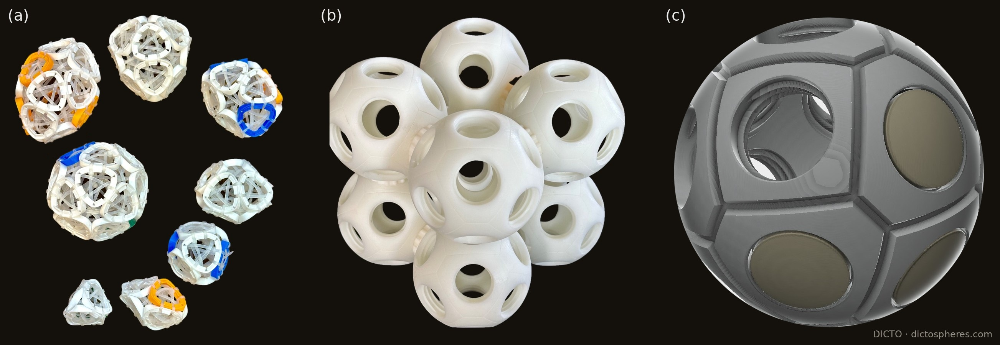
Figure 3A.1. Our sculptures. (a) DeltaZips: deltahedra built from rings tied with zip ties, each ring a rounded triangle. (b) Thirteen dictospheres joined, twelve round one. (c) A dictosphere design, with caps on some of its ports. Photographs and design: DICTO.
The same outline appears at the centre of the DeltaZips logo: the recycling symbol's three arrows make a triangle with its corners taken off.
This chapter takes FUJI's shape as the starting point of a family (Section 2), finds its bases in a classical construction (Section 3), proves which member belongs to which antiprism (Section 4), and follows the members into tilings, crystals and our sculpture (Section 5).
2. The family
Figure 3A.2. FUJI(r) at one scale, all side edges 1: the tetrahedron (r = 0), r = 1/4, r = 1/2, FUJI (r = 1/φ), r = 0.8 and the flat hexagon (r = 1). Darker faces: the three equilateral triangles; lighter: the three isosceles triangles 1, 1, r.
The base. A truncated triangle with sides 1 and r is a big equilateral triangle of side 1 + 2r with an equilateral corner of side r cut off at each corner. In the literature it is the isogonal hexagon or truncated triangle t{3}. All six corners lie on one circle, of radius² (1 + r + r²)/3. So an apex at height h over the centre has all six side edges equal, and they are 1 when
h² = (2 − r − r²)/3.
The volume is (√3/12)(1 + 4r + r²) h. The side faces are three equilateral triangles (on the long sides) and three isosceles triangles 1, 1, r (on the short sides), with apex angle 2 arcsin(r/2).
The base angles (proofs in the appendix):
cos L = (1 + 2r)/3 on the long sides, cos² S = (2 + r)/(3(2 − r)) on the short sides.
r
member
height
angle L
angle S
side faces
0
regular tetrahedron
√(2/3)
70.53°
–*
four equilateral
1/4
3/4
60°
49.11°
1/2
0.6455
48.19°
41.81°
1/φ
FUJI
1/√3
41.81°
37.38°
isosceles faces are golden triangles (36°)
1
flat
0
0
0
six equilateral triangles in one plane
*At r = 0 the short sides vanish, so S is undefined (the formula's limit, 54.74°, has no face to measure).
Two of the angles are the same angle, 41.81° = arccos(√5/3). In the Lotus seed this is the gap two icosahedra leave either side of a shared edge. It appears as FUJI's long-side angle and as the r = 1/2 member's short-side angle. The formulas show why: cos² L = 5/9 exactly at r = 1/φ, and cos² S = 5/9 exactly at r = 1/2.
3. The golden hexagon after Odom
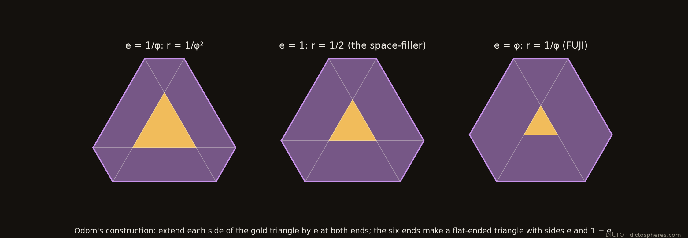
Figure 3A.3. Extend each side of the gold triangle by e at both ends: the six ends make a truncated triangle with sides e and 1 + e. With e = φ (right) it is FUJI's base.
George Odom found the golden ratio in the equilateral triangle [Odom and van de Craats 1983]. A related construction, published by Sándor Kabai as the Wolfram Demonstration "Hexagons and the Golden Ratio" (2008), after Odom, extends each side of an equilateral triangle by the golden ratio at both ends; the six outer points form a hexagon whose two side lengths are in the golden ratio. This golden hexagon is FUJI's base. (Odom's own construction, Problem E3007, is a different one: the line through two side midpoints of an equilateral triangle, extended to the circumcircle.)
Rebuilt here for any extension e, the six points always form an equiangular hexagon with sides e and 1 + e: a truncated triangle with r = e/(1 + e). So the same construction, with extension e, gives every member with r < 1 (the flat hexagon, r = 1, would need e infinite). This is a change of parameter, not a new result. The extension e = 1 gives r = 1/2, the base of the member in Section 5.2.
4. The antiprism rule
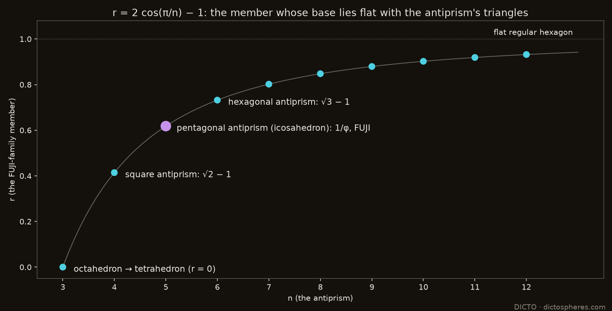
Figure 3A.4. The member that matches each antiprism: r = 2 cos(π/n) − 1. FUJI is the five-fold member.
In the Lotus seed, FUJI's base lies in one plane with the icosahedron triangles on its long sides: 41.81° + 138.19° = 180°. We call this the face-plane condition: FUJI(r) is glued by one of its equilateral faces to a unit triangle of a solid X, and its base continues the plane of the face of X across that triangle's edge, so that L + D_X = 180°, where D_X is X's dihedral angle at that edge. The edge is between two triangles for the icosahedron, the octahedron and the antiprisms (their triangle–triangle edges), and between a triangle and a square for the cuboctahedron and the rhombicuboctahedron, where the base continues a square. The condition holds when
r = (−3 cos D_X − 1)/2.
Solid (edge, dihedral angle)
member r
icosahedron (and the pentagonal antiprism, its middle), triangle–triangle (138.19°)
Proposition 1. For the n-gonal antiprism with unit edges, the member meeting the face-plane condition at a triangle–triangle edge is r = 2 cos(π/n) − 1. Equivalently, 1 + r = 2 cos(π/n), the short diagonal of the regular n-gon with unit sides (for n = 3, its side).
The antiprism's dihedral angle, cos D_n = (1 − 4 cos(π/n))/3, is standard (it is listed for single antiprisms in the OEIS); the proposition combines it with the base-angle formula, so the new content is one line of algebra.
Proof (outline; the dihedral computed in full in the appendix). Place the antiprism's corners at T_k = (R cos 2kθ, R sin 2kθ, h) and B_k = (R cos (2k + 1)θ, R sin (2k + 1)θ, −h), with θ = π/n and R = 1/(2 sin θ). The two equilateral triangles on the side edge T₀B₀ have their third corners T₁ and B₋₁, each √3/2 from the edge's midpoint M. A short computation gives (T₁ − M)·(B₋₁ − M) = −(4 cos θ − 1)/4. So cos D_n = (1 − 4 cos(π/n))/3, and r = (−3 cos D_n − 1)/2 = 2 cos(π/n) − 1. ∎
The antiprisms therefore index the family by the n-gon's short diagonal:
n = 3, the octahedron, gives the tetrahedron;
n = 4 gives the silver ratio's inverse, √2 − 1;
n = 5, the icosahedron's middle, gives the golden ratio's inverse, FUJI;
n = 6 gives √3 − 1;
as n grows, r tends to the flat regular hexagon.
Golden and silver. The members for n = 4 and n = 5 are the inverses of the two best-known metallic means. For n = 5, r = 2 cos 36° − 1 = φ − 1 = 1/φ, the golden ratio's inverse: FUJI. For n = 4, r = 2 cos 45° − 1 = √2 − 1 = 1/(1 + √2), the inverse of the silver ratio 1 + √2. Both are short diagonals: 1 + 1/φ = φ, the pentagon's diagonal, and 1 + (√2 − 1) = √2, the square's. So FUJI has a silver sister one step down the same formula, on the square antiprism, and seen down its axis that antiprism's outline is the regular octagon, as the pentagonal antiprism's is the regular decagon (Figure 3A.5). The family has square and pentagonal cousins. For k = 3, 4, 5, …, a truncated k-gon is a regular k-gon with its corners cut: an equiangular 2k-gon with sides 1 and r alternating. With all side edges 1 the long faces are equilateral, and cos L = (1 + r/cos(π/k))/(√3 tan(π/k)). The pyramid lies flat at r = 2 sin(π/k − π/6), which is 1, 2 sin 15° and 2 sin 6° for k = 3, 4, 5, and 0 or less from k = 6 on, where the regular unit hexagon is already flat. So there are families only for k = 3, 4 and 5. The square family's member on the rhombicuboctahedron (triangle–square edge) is r = 1 − 1/√2. Whether the silver members connect to octagonal quasicrystals (Ammann–Beenker tilings, inflation factor 1 + √2) we leave open.
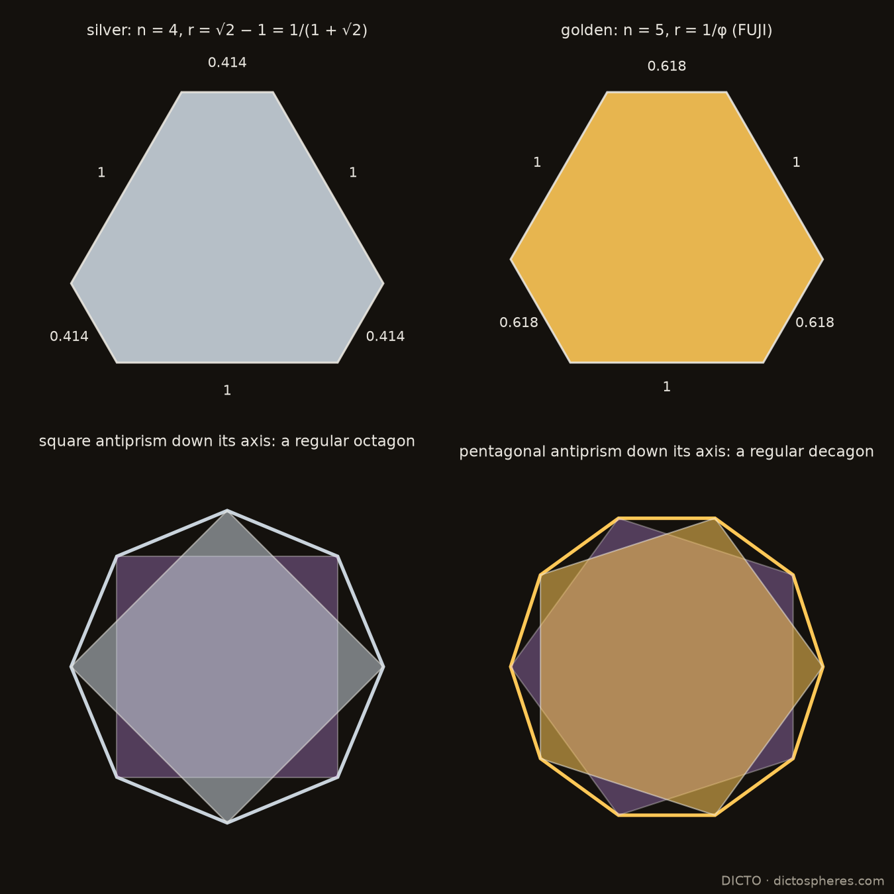
Figure 3A.5. The silver member (n = 4, r = √2 − 1) and the golden member FUJI (n = 5, r = 1/φ): their truncated triangles (above), and, separately, their antiprisms seen down the axis, whose outlines are the regular octagon and decagon (below).
5. Where the members live
5.1 FUJI in the Lotus seed
The Lotus seed is a regular icosahedron of edge φ², exactly: 12 icosahedra, a small centre, 60 AXE, 20 FUJI and 20 CLEO, or our 63-piece build of a dodecahedron, 12 J11, 30 AXE and 20 FUJI [1]. Each of its 20 big faces is three icosahedron triangles and one FUJI base. FUJI is the five-fold member of the family, which is consistent with its place in the icosahedron (the face-plane condition is necessary, not sufficient, for a cluster to close).
5.2 The space-filling truncated tetrahedron (r = 1/2)
Damasceno, Engel and Glotzer studied truncated tetrahedra from the tetrahedron to the octahedron, and found that the member at truncation t = 1/2 fills space on its own [Damasceno et al. 2012]. Its four hexagons have sides in the ratio 2 : 1 (checked from their published corners): they are the r = 1/2 member's base, the e = 1 hexagon of Section 3.
5.3 Breathing pyrochlores
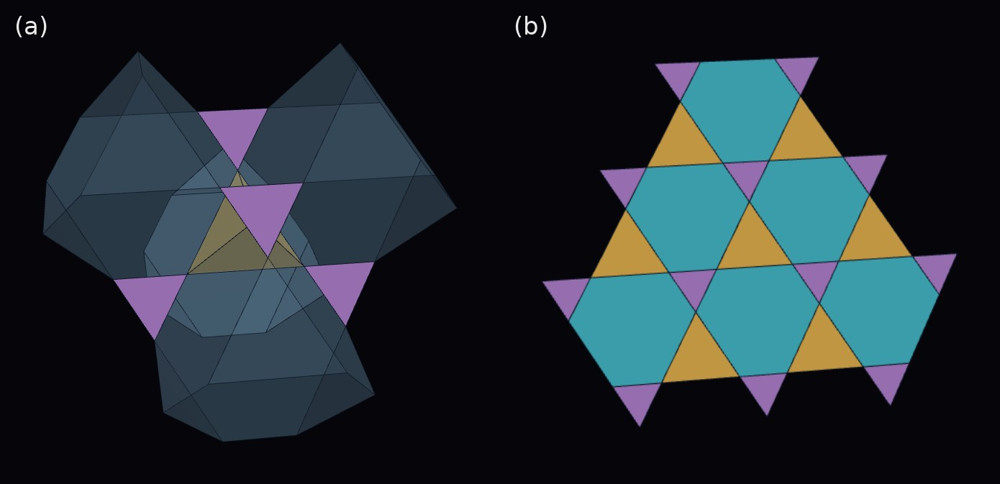
Figure 3A.6. The Golden Breathing Pyrochlore world in the Kaleidohedra app. (a) Big (gold) and small (purple) tetrahedra meet tip to tip, with see-through truncated tetrahedra between them. (b) One kagome layer: every hexagon is FUJI's truncated triangle.
A pyrochlore is a network of tetrahedra sharing corners: every corner belongs to one "up" and one "down" tetrahedron, tip to tip. In a breathing pyrochlore the two sets have different sizes, edge 1 and edge r. Such materials exist among the chromium spinel oxides [Okamoto et al. 2013]. Every kagome hexagon then has sides 1 and r alternating, with all angles 120°: the truncated triangle with the breathing ratio as its r.
The space between the tetrahedra is filled by two kinds of truncated tetrahedra, both with truncated-triangle hexagons. The tetrahedra and truncated tetrahedra fill space for every r. This is a Wythoff construction [Coxeter 1973]: in the affine group Ã₃ (whose diagram is a square), ring two adjacent nodes at distances d₀ and d₁; the cells are two tetrahedra, with edges in the ratio r = d₁/d₀, and two kinds of truncated tetrahedra (the quarter cubic honeycomb at r = 1). Wythoff's construction gives a tiling for any generating point in the fundamental simplex, not only the uniform one; here the point runs along the edge where the other two mirrors meet, so r takes every value. We also checked volumes, faces and neighbours numerically for r = 0.2, 0.382, 0.5, 0.618, 0.8 and 1. As r tends to 0 the small tetrahedra shrink to points, one kind of truncated tetrahedron becomes an octahedron and the other a tetrahedron, and the crystal becomes the tetrahedral–octahedral honeycomb. The two kinds of truncated tetrahedra share the same hexagon and are twin members of Damasceno's truncation family, one on the tetrahedron's side and one on the octahedron's. So the breathing pyrochlore is the FUJI family made into a crystal:
r = 1 is the ordinary pyrochlore;
r = 1/2 contains the space-filling truncated tetrahedron as one of its cells (the tetrahedron-side kind);
r = 1/φ, the golden breathing pyrochlore, has FUJI's base in every hexagon.
It can be built cell by cell in the Kaleidohedra app, with a slider for the breathing ratio.
5.4 The cube–octahedron solid
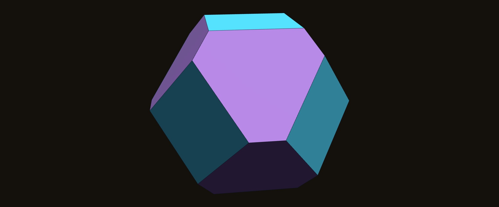
Figure 3A.7. The cube ∩ octahedron with both sets of faces at the same distance from the centre: 6 squares (cyan) and 8 truncated triangles (wisteria), r = (√3 − 1)/2, meeting short side to short side.
Cut a cube by an octahedron with both sets of faces at the same distance from the centre (|x|, |y|, |z| ≤ 1 and |x| + |y| + |z| ≤ √3). The solid has 6 squares and 8 truncated triangles, and all 14 faces touch one inner sphere. Its triangles are exactly the cuboctahedral member, r = (√3 − 1)/2 = 0.366. (Equal depth is also the rule of even clearance: across an edge shared by two faces, the distances from the two face centres to the edge are equal exactly when the faces lie at the same distance from the centre.)
Why the cuboctahedral member. Take the solid |x|, |y|, |z| ≤ 1, |x| + |y| + |z| ≤ S, and put an apex at the cube's corner (1, 1, 1) over the triangle on x + y + z = S. For 3/2 < S < 2 (where the triangles' long sides face the squares), its six side edges are all √((2 − S)² + 1), and its three long faces lie in the cube's faces. Those faces are equilateral exactly when 2(S − 1)² = (2 − S)² + 1, that is S² = 3, which is the equal-depth solid. So equal depth and the cuboctahedral member are the same condition: at equal depth, the cube's eight corners are exactly the apexes of copies of FUJI((√3 − 1)/2), scaled by √2(√3 − 1) ≈ 1.035, standing on the eight triangles. The cuboctahedron's member rests on the same angle: in each case a long face and the base lie in a cube plane and an octahedron plane, so L = 54.74° and r = (√3 − 1)/2.
The truncated octahedron is the r = 1 member of the same cube–octahedron family of solids, with regular hexagons. Every member has the same dihedral angles (109.47° and 125.26°), but only the truncated octahedron, whose hexagons are centrally symmetric, fills space by translation (Kelvin's cell). It is to the equal-depth solid what the regular hexagon is to FUJI: the symmetric shape at r = 1.
5.5 Wheels, and the CLEO sphere
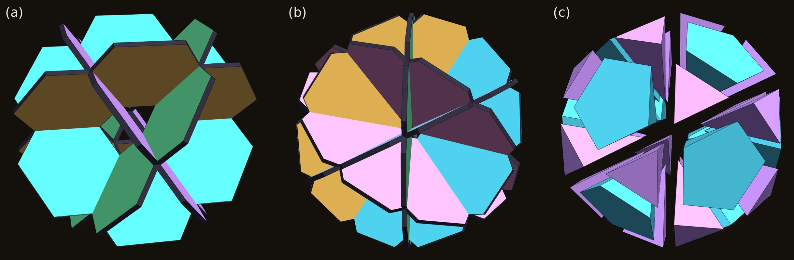
Figure 3A.8. (a) Four hexagonal wheels of truncated triangles (drawn with FUJI's, r = 1/φ; any r > 0 works), overlapped into the cuboctahedron's outer structure. (b) Six decagonal wheels of golden triangles, the icosidodecahedron's. (c) The CLEO sphere pulled apart: 20 CLEOs (wisteria) and 12 pentagonal pyramids (cyan), all tips at the centre.
Our DeltaZip wheels led to a construction in the same spirit. A cuboctahedron's 24 edges split into four regular hexagons, one in each of its four central planes; a wheel of six triangles in each plane (centre to rim), with every triangle blunted into a truncated triangle, gives four wheels that overlap into the cuboctahedron's outer structure (Figure 3A.8a). Each spoke is shared by two wheels, and the blunted corners keep the hub and the twelve crossings clear. Four is the most, if every two wheels meet along a different spoke: a wheel with 2m spokes has m spoke lines, each crossing wheel uses one of them, so n wheels need n − 1 ≤ m. Hexagonal wheels (m = 3) allow at most four, decagonal (m = 5) at most six, square (m = 2) at most three; at the maximum every spoke line lies in exactly two wheels. These maxima are attained by the equatorial great circles of the octahedron, the cuboctahedron and the icosidodecahedron, the classical quasi-regular polyhedra [Coxeter 1973]. (Planes through a single common line meet in any number, but all along the same spoke.) The octagonal case in between is impossible: five such circles would form the one simple arrangement of five great circles (no three through a point), whose triangles, all sides 45°, have angles 65.53°, forcing the central pentagon's angles to 114.47°, while an equilateral spherical pentagon of side 45° with equal angles has angles 122.25°. The icosahedral counterpart has six wheels, in the planes square to the five-fold axes, each a decagon of ten golden triangles (sides φ, φ, 1): the icosidodecahedron's six great decagons (Figure 3A.8b).
The six wheels cut the icosidodecahedron into pieces with their tips at the centre. With edge 1/φ the icosidodecahedron has circumradius exactly 1, so each piece over a triangle has an equilateral base 1/φ and side edges 1: it is CLEO. Twenty CLEOs pointing inwards and twelve pentagonal pyramids (side edges 1, base edge 1/φ, volume √5/12 each) fill the icosidodecahedron exactly, volume (11√5 − 5)/6 (Figure 3A.8c). It is the icosahedral twin of the four hexagonal wheels cutting the cuboctahedron into 8 regular tetrahedra and 6 square pyramids.
Each pentagonal pyramid divides about its axis into five congruent right-angled triangular pyramids, each with one golden face (1, 1, 1/φ, the same as CLEO's side faces), a base triangle with sides 0.5257, 0.5257 and 1/φ (72° at the centre of the pentagon), and volume √5/60. Equilateral CLEOs themselves cannot fill the pentagonal pockets (a pentagon cannot be tiled by equilateral triangles); these five are the pocket's own CLEO-like pieces. CLEO cannot fill an icosahedron from its centre on its own: its tip angles are 36°, where 20 pieces closing a sphere need 63.4°, so twenty CLEOs cover only about 29% of the directions round the centre. The pentagonal pyramids take the rest.
5.6 Six circles and the icosahedron
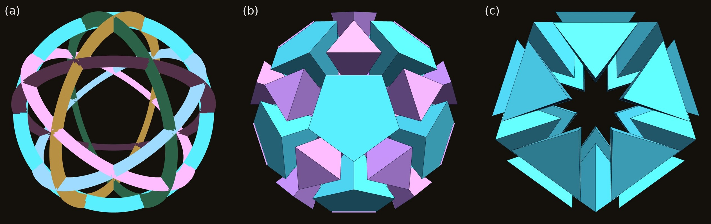
Figure 3A.9. (a) Six equal slotted rings in the planes square to the five-fold axes, seen down a five-fold axis. (b) The CLEO sphere they frame, seen the same way: 20 CLEOs in the triangular windows, 12 pentagonal pockets. (c) Faceted flat across the pentagon centres: 20 Cleo-Icos filling an icosahedron.
How many crossed circles make an icosahedron? Four make the cuboctahedron, and four is the most that meet in that way (Section 5.5). Six circles, one in each plane square to a five-fold axis, cross every 36° round each circle and divide the sphere into 20 triangles and 12 pentagons, the icosidodecahedron's pattern. The icosahedron is there, though the circles never draw its edges: its 12 corners are the centres of the 12 pentagonal windows, and its 20 faces lie over the 20 triangular windows. Six equal flat rings slotted together, alternately from the outside and the inside at each crossing, are all identical (one template, cut six), which is how our six-ring DeltaZip balls go together. An alternating slot pattern exists for any set of great circles with no three through one point, since their crossings then form a four-valent map (as in alternating knot diagrams); here the equal crossing angles (63.43°) and equal spacing (36°) make the six rings identical.
The pieces complete the route. The triangular windows hold the 20 CLEOs pointing inwards; each pentagonal window holds five Penta-cleo (Section 5.5). Each CLEO with the three Penta-cleo on its golden sides fills the part, inside the icosidodecahedron, of one face-cone of the icosahedron whose corners are the pentagon centres. Cutting flat across the three pentagon centres removes the parts outside that icosahedron (CLEO's outer corners are at radius 1, beyond the icosahedron's corners at 0.851), and leaves the Cleo-Icos: the icosahedron's central pyramid on one face, tip at the centre and flat base outside, side edges 0.851 and base edge 2/√5 = 0.894. Twenty of them make the icosahedron, as the central pyramids of any solid make that solid; the point is the route, not the dissection. The Cleo-Icos itself is well known under other names: it is the unit tetrahedron of the Mackay icosahedron, the shells of equal spheres round a centre that most icosahedral metal clusters and nanoparticles follow (edge ratio 1/sin 72° = 1.0515 and 63.43° at the centre; Mackay 1962), the slightly strained tetrahedron of icosahedral multiply twinned particles (Ino 1969; Marks 1984), and the "golden tetrahedron" of Kabai's twenty-tetrahedra cluster (2014). Much earlier, it is one of the pyramids of Hypsicles’ “Book XIV” of Euclid (c. 150 BC): to compare the dodecahedron and icosahedron in one sphere, he cuts both into pyramids from the centre, of equal height; the icosahedron’s twenty are the Cleo-Icos and the dodecahedron’s twelve its pentagonal pyramids, with bases in equal circles (inradius ÷ circumradius 0.79465 for both), so the two volumes are in the ratio of the surfaces [Hypsicles]. Regular tetrahedra cannot close the icosahedron (five round an edge leave 7.36°); the Cleo-Icos is the shape that does. What we add is its place on our route and, in Section 5.7, its partners. Six circles, then, lead to the icosahedron in a roundabout way: through the icosidodecahedron and the CLEO sphere.
The icosahedron, filled or not, still does not fill space (its dihedral angle 138.19° leaves 41.81° gaps), and the twenty pieces alone do not either: their dihedral angles are 72° along the side edges (five close round a line through the centre) and 69.09° along the base edges, and no combination that includes a base edge, with 72° angles and flat 180° faces, makes 360°. In space they need a partner piece: Antonius (Section 5.7).
5.7 Cleo-Icos and Antonius fill space
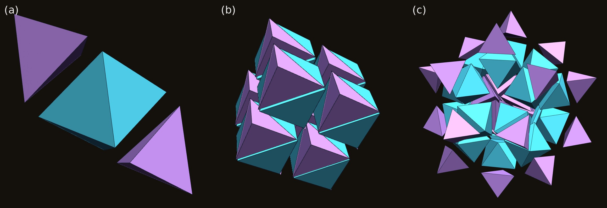
Figure 3A.10. (a) One prolate golden rhombohedron = Cleo-Icos + Antonius + Cleo-Icos, pulled apart along its long axis. (b) Eight rhombohedra, 16 Cleo-Icos (wisteria) and 8 Antonius (cyan), a piece of the space-filling. (c) The rhombic hexecontahedron: 20 Cleo-Icos round the centre (the icosahedron), 20 Antonius, and 20 Cleo-Icos at the tips, pulled apart.
The Cleo-Icos cannot fill space alone (Section 5.6), but it can with one partner. The three edges from the icosahedron's centre to the corners of one face, u, v and w, meet at arccos(1/√5) = 63.43°, the face angle of the prolate golden rhombohedron. So u, v and w span a golden rhombohedron (edge 0.851, dihedral angles 72° and 108°), and the Cleo-Icos is exactly its corner at one sharp tip. In coordinates along u, v and w the rhombohedron is 0 ≤ x, y, z ≤ 1, and the planes x + y + z = 1 and x + y + z = 2 cut it into three pieces: a Cleo-Icos at each sharp tip, and between them Antonius, a convex trigonal antiprism with two equilateral faces (edge 2/√5) and six side faces identical to the Cleo-Icos's (0.851, 0.851, 0.894). Antonius has exactly four times the Cleo-Icos's volume, and the rhombohedron six times.
Golden rhombohedra fill space in a lattice, and every rhombus face is cut along the same diagonal from both sides. So Cleo-Icos and Antonius fill space, two to one, face to face, with no mirror images. Along Antonius's equilateral edges its dihedral angle is 110.91°, which with the Cleo-Icos's 69.09° makes 180°: the faces meet flat. We checked a patch of 2,187 pieces: no gaps or overlaps, every face matched, every edge and every corner closing exactly. The Dehn invariant agrees: the Cleo-Icos's is not zero, so no single space-filler (a cube, a rhombohedron) could be its partner, and Antonius's is exactly −2 times the Cleo-Icos's, which the two-to-one ratio balances.
The same pieces build the rhombic hexecontahedron, known as 20 prolate golden rhombohedra round a point [Hafner and Žitko]: 20 Cleo-Icos round the centre (the icosahedron), 20 Antonius, and 20 Cleo-Icos at the tips (Figure 3A.10c; checked against the rhombic hexecontahedron of our Bodhi Seed). The cut of a rhombohedron by those two planes is general (any parallelepiped splits into two corner tetrahedra of a sixth each and a middle of two thirds), and for the rhombohedron of 60° it gives the regular tetrahedra and octahedron of the tetrahedral–octahedral honeycomb. That the golden rhombohedron's corner is the icosahedron's central pyramid is known (Kabai: the "golden tetrahedron" is the tetrahedral part of a golden rhombohedron), and the prolate golden rhombohedron has been described as a distorted face-centred cubic cell whose cyclic twins, grouped as rhombic hexecontahedra, give icosahedral quasicrystals [Prodan et al. 2017]. What we add is the middle piece, Antonius, and with it the two-piece filling: the icosahedron's own pieces, with one partner, fill space. We found this split in none of the sources we read [Hafner and Žitko; Hafner and Komatar 2008; Kabai 2014; Prodan et al. 2017; Fang et al. 2013].
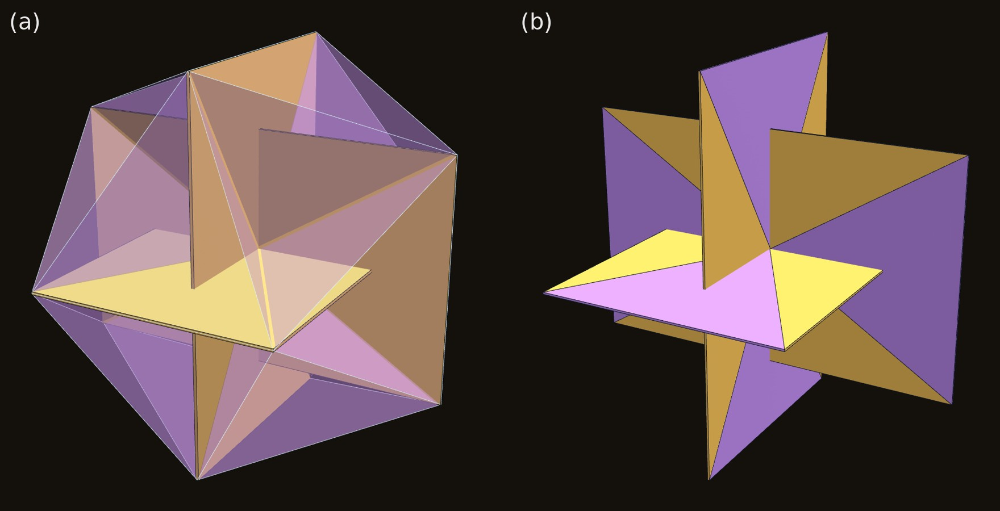
Figure 3A.11. Both from the same viewpoint. (a) The icosahedron as 20 Cleo-Icos in glass, with Pacioli's three golden rectangles (gold) crossing at the centre, where the Cleo-Icos tips meet. (b) The rectangles alone, each cut by its diagonals: the triangles on the short sides (wisteria, 63.43° at the centre) are side faces of Cleo-Icos; those on the long sides (gold) have 116.57°.
Pacioli's golden rectangles. The three golden rectangles of Pacioli, at right angles through the centre, have their 12 corners at the icosahedron's 12 corners, the outer corners of the Cleo-Icos, and pass through the centre, where all 20 Cleo-Icos tips meet. Cut by its diagonals (two diameters), each rectangle falls into four triangles from the centre. The two on its short sides, which are icosahedron edges, are exactly side faces of Cleo-Icos, walls between neighbours, with 63.43° at the centre; they are also halves of the golden rhombi that bound the golden rhombohedra above. The two on its long sides have 116.57° at the centre. 63.43° and 116.57° are the golden rhombus's two angles, so each rectangle is made of halves of golden rhombi, the same faces that bound the Cleo-Icos and the rhombohedra filled by Cleo-Icos and Antonius.
The octahedron, and the half Admiral Cap. Six Admiral Caps (our name for the two small tetrahedra that roof one of the icosahedron's six axis-parallel edges) turn the icosahedron into the regular octahedron [2]. Each cap splits into two half caps, and the octahedron is exactly 20 Cleo-Icos + 12 half caps (volumes φ²/24, φ/24 and φ⁶/6 for an icosahedron of edge 1; sampling finds every point in exactly one piece). Along the edge it shares with the icosahedron the half cap's angle is 110.91°, Antonius's angle, so a Cleo-Icos and a half cap sharing a face make one kite pyramid, and the octahedron is also 8 Cleo-Icos + 12 kite pyramids. But Cleo-Icos and half caps (with or without Antonius) cannot fill space: the angles π, arccos(−√5/3) and arccos(1/√3) are rationally independent, so there is an additive rule on angles that is zero on π and on every Cleo-Icos and Antonius angle and positive on the half cap's octahedral edges; round such an edge the angles could never total 2π. Space needs a further piece with tetrahedral angles, the regular tetrahedron, which gives back the octet [2].
6. What is known, and what is new
The base shape (the isogonal hexagon), the antiprism angles (listed for single antiprisms in the OEIS), the golden hexagon after Odom, the space-filling truncated tetrahedron, breathing pyrochlores and the Cleo-Icos itself (Mackay's unit tetrahedron) are all known, and are credited above. Our searches (14 October 2026: our reference library, web searches for the family, its base-angle formulas, truncated-triangle (then called flat‑ended) or isogonal hexagonal pyramids, and antiprism dihedral relations, and the OEIS) did not find the following. That is a report of what we searched, not a claim that they are unknown. The base-angle formulas are elementary, and the hexagons with alternating sides are standard in breathing kagome lattices; what we offer is the family as one object, and the links between its members:
the family FUJI(r) of pyramids;
the antiprism rule (Proposition 1) that links the family to the antiprisms, which combines the standard dihedral formula with the base-angle formula;
that the equal-depth cube–octahedron solid has the cuboctahedral member's triangles exactly because its cube corners are that member's apexes (Section 5.4), and the wheel bound with the impossibility of five octagonal wheels (Section 5.5);
the split of the prolate golden rhombohedron into Cleo-Icos + Antonius + Cleo-Icos, by which the icosahedron's central pyramid fills space with one partner, and the octahedron as 20 Cleo-Icos + 12 half Admiral Caps, which cannot fill space without a tetrahedral piece (Section 5.7);
as a synthesis, the identifications that tie it together: FUJI's base as the golden hexagon after Odom, the breathing pyrochlore's hexagons as the family's bases, and the equal-depth cube–octahedron solid, whose triangles are the cuboctahedral member.
The family gives one shape and one parameter to things found separately:
a gap piece in an icosahedral cluster;
a space-filler found by computer packing;
the hexagons of frustrated magnets;
the faces of the equal-depth cube–octahedron solid;
wheels of truncated triangles in the cuboctahedron, a sphere of twenty CLEOs, and six crossed circles that lead to the icosahedron.
In each, the parameter r is set by a different symmetry: five-fold for FUJI, cubic for the cube–octahedron solid, the breathing ratio for the pyrochlore.
Appendix: proofs
Base angles. The long side lies along a side of the big triangle (side s = 1 + 2r), so its distance from the centre is s/(2√3). The equilateral face on it has slant height √3/2, which gives cos L = (1 + 2r)/3. A cut line lies at distance s/√3 − r√3/2 = (2 + r)/(2√3), and the isosceles face on it has slant height √(1 − r²/4), which gives cos² S = (2 + r)/(3(2 − r)).
Antiprism dihedral. With c = cos θ and s = sin θ, unit side edges give h² = (1 + 2c)/(8(1 + c)). Writing M = (R(1 + c)/2, Rs/2, 0):
T₁ − M = (R(4c + 3)(c − 1)/2, Rs(4c − 1)/2, h);
B₋₁ − M = (R(c − 1)/2, −3Rs/2, −h).
With R² = 1/(4(1 − c)(1 + c)), their dot product is
So cos D_n = (1 − 4c)/3, the standard antiprism dihedral. The numerical check, n = 3 to 12, agrees to 10⁻¹² (study scripts and an independent review).
The cube–octahedron solid's member. Corner A = (1, 1, 1); the triangle on x + y + z = S has corners such as (1, S − 1, 0) (after the cube cuts it) at distance √((2 − S)² + 1) from A, the same for all six. For 3/2 < S < 2, the long face A, (1, S − 1, 0), (1, 0, S − 1) lies in x = 1 and has the base edge (S − 1)√2; it is equilateral when 2(S − 1)² = (2 − S)² + 1, i.e. S² = 3.
Credits
FUJI, Cleo-Icos, Antonius, the Lotus seed, the dictospheres, the DeltaZips and B1NR sculptures, the names are DICTO's. Odom's work, the golden-hexagon construction after it, the space-filling truncated tetrahedron (Damasceno, Engel and Glotzer) and the breathing pyrochlore (Okamoto, Nilsen, Attfield and Hiroi) are credited to their authors. Data, scripts, proofs and checks: studies/2026-10-14-fuji-family studies/2026-10-14-icosa-cleo-pair and studies/2026-10-14-half-cap at https://github.com/DICTOR-Master/kaleidohedra.
References
[1] DICTO, AXE, CLEO and FUJI: the Gap Pieces of the Icosahedron (2026), DICTO DOI: 10.5281/zenodo.23351291.
[2] DICTO, the Icosahedral Octet and its Admiral Caps (DISCOVERIES.md #21, 2026), studies and app at https://github.com/DICTOR-Master/kaleidohedra.
G. Odom and J. van de Craats, Elementary Problem E3007, Amer. Math. Monthly 90 (1983) 482; solution 93 (1986) 572.
S. Kabai, Hexagons and the Golden Ratio (after G. Odom), Wolfram Demonstrations Project (2008), CC BY-NC-SA, https://demonstrations.wolfram.com/HexagonsAndTheGoldenRatio/.
H. S. M. Coxeter, Regular Polytopes, 3rd ed., Dover (1973).
P. F. Damasceno, M. Engel, S. C. Glotzer, Crystalline assemblies and densest packings of a family of truncated tetrahedra and the role of directional entropic forces, ACS Nano 6 (2012) 609–614, doi:10.1021/nn204012y.
Y. Okamoto, G. J. Nilsen, J. P. Attfield, Z. Hiroi, Breathing pyrochlore lattice realized in A-site ordered spinel oxides LiGaCr₄O₈ and LiInCr₄O₈, Phys. Rev. Lett. 110 (2013) 097203, doi:10.1103/PhysRevLett.110.097203.
Z. Papadopolos, O. Ogievetsky, On quasiperiodic space tilings, inflation and Dehn invariants (1999), arXiv:math-ph/9910006.
N. O. Koca, R. Koc, M. Koca, A. Al-Siyabi, Dodecahedral structures with Mosseri–Sadoc tiles (2020), arXiv:2009.07048.
I. Hafner, T. Žitko, Paper model solution of Conway–Radin–Sadun problem, Visual Mathematics, https://www.mi.sanu.ac.rs/vismath/hafnervisual/visual48A/Visual48A.html.
I. Hafner, A. Komatar, A Dissection of a Prolate Golden Rhombohedron, Wolfram Demonstrations Project (2008), https://demonstrations.wolfram.com/ADissectionOfAProlateGoldenRhombohedron/.
Hypsicles, "Book XIV" of Euclid's Elements (c. 150 BC), Props. 1–2 (the second after Aristaeus); see MacTutor History of Mathematics, Hypsicles, and ProofWiki, Euclid's Elements Book XIV.
A. L. Mackay, A dense non-crystallographic packing of equal spheres, Acta Cryst. 15 (1962) 916-918.
S. Ino, Stability of multiply-twinned particles, J. Phys. Soc. Jpn 27 (1969) 941-953.
L. D. Marks, Surface structure and energetics of multiply twinned particles, Phil. Mag. A 49 (1984) 81-93.
S. Kabai, Twenty Tetrahedra in Icosahedral Cluster, Wolfram Demonstrations Project (2014), https://demonstrations.wolfram.com/TwentyTetrahedraInIcosahedralCluster/.
A. Prodan, R. Dušić Hren, M. van Midden, H. J. P. van Midden, E. Zupanič, The equivalence between unit-cell twinning and tiling in icosahedral quasicrystals, Sci. Rep. 7 (2017), doi:10.1038/s41598-017-12669-w.
F. Fang, J. Kovacs, G. Sadler, K. Irwin, An icosahedral quasicrystal as a packing of regular tetrahedra, Acta Phys. Pol. A 126 (2014), arXiv:1311.3994.
H. Minkowski, Allgemeine Lehrsätze über die konvexen Polyeder, Nachr. Ges. Wiss. Göttingen (1897) 198–219.
Lord Kelvin (W. Thomson), On the division of space with minimum partitional area, Phil. Mag. 24 (1887) 503–514.
DICTO · dictospheres.com
Chapter 3B · The Golden Split: Icosahedra, Unborns and AXE Become Two Convex Space-Fillers
Theorem: in the simple cubic lattice of icosahedra, cutting every AXE from the point 1/φ of the way along its axis, and giving each of its four pyramids to the neighbour it touches, turns the icosahedra and the Unborns into two convex truncated octahedra, the Icosaxes and the Unborn Axes, which fill space; this is the only cut point at which both are convex, and in the Lotus Jewel network the same cut gives a keyed pair, the Lotus Jewel Axes and the Dodecaxes, of volumes √5 and 2
From paper #48, version 1 · DICTO DOI: 10.5281/zenodo.23596362
Icosahedra cannot fill space on their own. Set them in a cubic grid, edge to edge, and two kinds of gap are left: a squeezed icosahedron (the Unborn) in the middle of each cube, and thin tetrahedra (the AXE) in the faces between them, six per cube. The AXE is the awkward one: wherever it is glued, it sticks out. We cut each AXE into four little pyramids from one inner point and hand each pyramid to the piece it touches. At exactly one point, 1/φ of the way along the AXE's axis, the golden point, nothing sticks out any more: the icosahedra and the Unborns both become truncated octahedra, relatives of Kelvin's foam cell, and these two fill space with no gap. Main theorem. In the simple cubic lattice of regular icosahedra of edge 1 and spacing φ, cone every AXE (the gap tetrahedron, tile t6 of [3] scaled by 1/τ) from the point 1/φ of the way from the midpoint of its long edge to the midpoint of its short edge, and give each of the four pyramids to the piece whose face it lies on. Then the icosahedron with its 12 pyramids, the Icosaxes, and the Unborn with its 12, the Unborn Axes, are convex truncated octahedra with full octahedral symmetry, the same equiangular hexagon (sides alternately 1/√2 and 1/(φ√2)) and squares of side 1/√2 and 1/(φ√2); their volumes are 1 + 2√5/3 and 1 + √5/3, and they fill space face to face, Icosaxes at the lattice points and Unborn Axes at the cube centres. Theorem 2: for any cut points whatever, inside the AXEs, both padded pieces are convex only if every AXE is cut at its golden point. Theorem 3: in the Lotus Jewel network the same cut gives the Lotus Jewel Axes (8 dents, volume √5) and the Dodecaxes (8 keys, volume 2), and every way of giving each key to one side or the other still fills space. Theorem 4 (factor x): the pair belongs to a one-parameter family of mixed space-fillers, the semi-uniform truncated octahedra T(x) and T(1/x) (Koca’s orbit [1, eq. 49]) at the corners and centres of a cubic lattice, from Kelvin’s cell (x = 1) to the golden pair (x = τ). All results are exact. The two smooth shapes are known: they are Koca et al.'s non-regular truncated octahedra x = τ and x = 1/τ [1] (the semi-uniform truncated octahedron [4]); what is new, in the sources we checked, is the route from the icosahedron lattice, the golden split and its uniqueness, and the keyed pair.
Figure 3B.1. The golden pair. From left: the icosahedron (green) with its 12 AXE pyramids (cyan); the Icosaxes as one solid; the Unborn (orange) with its 12 AXE pyramids; the Unborn Axes as one solid. Each panel is drawn at its own scale. Both are truncated octahedra with full octahedral symmetry.
1. Where it started
DICTO had a network of icosahedra with a gap he could fill exactly, but the filling pieces stuck out wherever they were glued. He proposed pieces with no odd protrusions, made by cuts "hemispherical, or anywhere in between".
The search behind this chapter began with mixtures of the Platonic solids. In Every Mix of the Platonic Solids Fills Space (paper #47 [9]) DICTO proposed that the five Platonic solids, in any combination, can be joined into a filling of space, and we proved it for all 31 mixtures, at one edge length, with seven connecting pieces. That reached the aim; but DICTO conjectured that a greater elegance and simplicity was within reach, fewer and cleaner pieces in which the solids themselves do the work, although at that time it was beyond our grasp. This chapter gives an answer to that conjecture for the two Platonic solids with five-fold symmetry: for the icosahedron, whole and convex, and, in the keyed form, for the dodecahedron (here of edge 1/φ, while #47 kept one edge length). In DICTO's view, these solids are the most elegant solution he had imagined: one golden cut, and two convex pieces, one holding a whole regular icosahedron at its core; and in the keyed pair, a piece holding a whole regular dodecahedron.
On 10 October 2026 DICTO built the icosahedral octet and its Lotus Jewel, the "clawed" icosahedron (Kaleidohedra DISCOVERIES F21). On 23 October he conjectured that the Lotus Jewel network fills space, and proposed finding the piece that fills its gap; the answer was the AXE, exactly six per cubic cell, and with it three exact fillings of the simple cubic icosahedron lattice (the AXE gap study [8]): icosahedra + Unborns + AXE; Lotus Jewels + dodecahedra + AXE; and Lotus Jewel + Tricap + Unborn + AXE kept apart, with any choice of giving each Tricap to one side or the other. The same day DICTO proposed looking for "shadow forms", complementary ways of breaking up the same space, to create new pieces. Fusing neighbouring pieces gave chunky shapes, but every fusion with an AXE kept a spike; giving each AXE whole to one icosahedron fills space with only two kinds of piece, but leaves the icosahedron 68% of its hull, a star. DICTO then set the aim, "unit pieces without odd protrusions", and the tool, polar splits "hemispherical really, or anywhere in between". Cutting the AXE itself, from one inner point, gave the result of this chapter.
2. The network
Regular icosahedra sit at the corners of a cubic grid, touching their six neighbours along an edge. Between them are two kinds of hole, and both are filled exactly by three pieces.
Let φ = (1 + √5)/2 = τ. Place a regular icosahedron I of edge 1 at every point of the lattice φℤ³, with corners (0, ±½, ±φ/2) and their cyclic permutations; each icosahedron shares one edge with each of its six neighbours along the axes. The cell φ³ = 2 + √5 holds, besides its icosahedron (volume (15 + 5√5)/12):
at the cube centre c = (φ/2, φ/2, φ/2), the Unborn U, with corners c + (±φ/2, ±1/(2φ), 0) and cyclic permutations: 12 corners, 24 edges of length 1 and 6 of length 1/φ, 8 equilateral faces and 12 isosceles faces (1, 1, 1/φ), volume (3 + 7√5)/12. It is the pseudoicosahedron of Koca et al. [1, eq. 39] with x = 1/τ, whose corners, as they note, are the 12 corners of a dodecahedron that are not on its cube; the name is DICTO's.
six AXE, the Mosseri–Sadoc tile t6 in the numbering of [3] (see also [2]), scaled by 1/τ: a tetrahedron with five edges 1 and one edge 1/φ, volume 1/12. Its long edge (the edge of length 1 opposite the short one) is the edge two neighbouring icosahedra share, its short edge (1/φ) an edge two neighbouring Unborns share; of its four faces, the two through the long edge lie on the two icosahedra, the two through the short edge on the two Unborns.
The icosahedron meets the Unborn along the Unborn's 8 equilateral faces. The Unborn is the regular dodecahedron D of edge 1/φ centred at c with its 8 cube corners cut off: each corner of D that reaches into an icosahedron is a Tricap (tile t3 of [3], scaled by 1/τ; volume (3 − √5)/24), the tetrahedron D ∩ I standing on one of the icosahedron's faces that meet the Unborn. Giving the 8 Tricaps to the dodecahedron instead of the icosahedra changes the network: the icosahedron minus its 8 Tricaps is the Lotus Jewel J, volume (1 + 3√5)/4, and the Unborn plus its 8 Tricaps is D, volume (15 + 3√5)/12. Per cell, I + U + 6 AXE = J + D + 6 AXE = φ³ exactly, and both fill space with no gap; so does every assignment of the Tricaps [8].
3. The golden split
Pick one point inside each AXE and cut the AXE into four pyramids, each with one AXE face as its base. Give each pyramid to the piece its base touches. The AXE is gone; the question is only where to put the point.
For an AXE with long edge AB and short edge CD let m1, m2 be their midpoints, and for 0 ≤ t ≤ 1 let p(t) = m1 + t(m2 − m1), a point of the AXE's axis (the line through m1 and m2 is its two-fold axis). The split at t replaces the AXE by the four pyramids with apex p(t) over its faces; the two over ABC and ABD join the icosahedra those faces lie on, the two over CDA and CDB the Unborns. Every icosahedron touches 12 AXE faces and every Unborn 12, so each gains 12 pyramids; the pieces still fill space, since only the owner of each part of each AXE has changed. Write I(t) and U(t) for the padded pieces. The golden split is t = 1/φ.
Main theorem (the golden split). At t = 1/φ:
(a) the Icosaxes I(1/φ) is convex: it is the truncated octahedron with corners all permutations of (±½, ±φ/2, 0), with 8 hexagons and 6 squares;
(b) the Unborn Axes U(1/φ) is convex: it is the truncated octahedron with corners c + all permutations of (±1/(2φ), ±φ/2, 0), with 8 hexagons and 6 squares;
(c) both have full octahedral symmetry; all 16 hexagons are congruent, equiangular (120°), with sides alternately 1/√2 and 1/(φ√2); the squares of the Icosaxes have side 1/√2, those of the Unborn Axes 1/(φ√2);
(d) their volumes are 1 + 2√5/3 and 1 + √5/3, together φ³;
(e) the 12 apices of the Icosaxes are the corners of the mirror image of its icosahedron in the plane x = y through its centre, and the 12 apices of the Unborn Axes those of the mirror image of its Unborn in the plane x = y through c;
(f) Icosaxes at the points of φℤ³ and Unborn Axes at the cube centres fill space face to face: Icosaxes meet Icosaxes on their squares, Unborn Axes meet Unborn Axes on theirs, and the two meet each other on the hexagons.
Why it is true: every corner of every piece is a sum of halves and golden numbers, so everything can be checked with exact arithmetic. Convexity is checked by comparing two volumes: the pieces glued together, and the smallest convex solid around them.
Proof. All coordinates lie in ℚ(√5), and the study's check [8a] works in that field with no floating point. (a), (b): the padded piece is the union of the core and its 12 pyramids, which have disjoint interiors (the AXEs and the cores do, in the filling [8]), so its volume is the sum of their volumes, exact determinants; its convex hull is found exactly (every plane through three of its points with all points on one side), and its volume computed exactly. The two volumes are equal, (15 + 5√5)/12 + 12 pyramids = 1 + 2√5/3 for the Icosaxes and (3 + 7√5)/12 + 12 pyramids = 1 + √5/3 for the Unborn Axes, so the union, a closed set inside its hull with the same volume, is the hull, which is convex. The hull has 24 corners and 14 faces, 8 with six corners and 6 with four, and its corner set is exactly the stated orbit, which is invariant under all permutations and sign changes of the coordinates: hence (c)'s symmetry. The side lengths and the congruence of the hexagons (all 15 distances between their corners) are compared exactly. (d) is the sum above. (e): the 12 apices p(1/φ) are compared, as a set, with the core's corners under (x, y, z) ↦ (y, x, z). (f): the pieces fill space because the split only re-assigns parts of the AXE in a filling [8]; the shared faces are found by comparing corner sets: the hexagon of an Icosaxes towards (1, 1, 1) is, corner for corner, the hexagon of the Unborn Axes at c facing back, and the square of an Icosaxes at x = φ/2 is the square of its neighbour at (φ, 0, 0); the others follow by symmetry. The check passes all its 21 tests; a 500,000-point test of the filling (in floating point, as a second check) finds no point uncovered and none covered twice. ∎
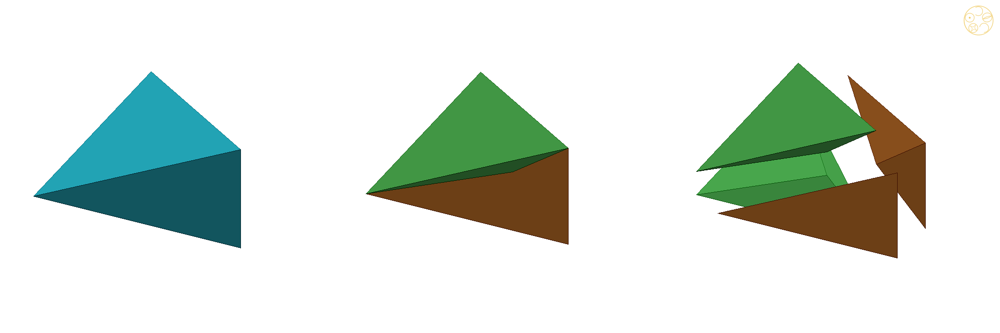
Figure 3B.2. The split of one AXE. Left: the AXE. Middle: cut from the point p(1/φ) of its axis into four pyramids. Right: pulled apart: the two pyramids on its icosahedron faces (green) go to the icosahedra, the two on its Unborn faces (brown) to the Unborns.
4. Only the golden point
Move the cutting point a little towards the Unborns and the padded icosahedron grows a ridge; move it the other way and the padded Unborn does. Only at the golden point are both smooth, wherever else in the AXE the point might be tried.
Theorem 2 (uniqueness). Cut each AXE from any point p inside it, possibly different for different AXEs, and give its four pyramids to their neighbours as before. If the padded icosahedra and the padded Unborns are all convex, then every AXE is cut at its golden point p(1/φ). In particular, for cut points p(t) on the axis (0 ≤ t ≤ 1) the padded icosahedron I(t) is not convex for t > 1/φ and the padded Unborn U(t) is not convex for t < 1/φ.
Why: where an icosahedron meets an Unborn, their shared face gets no pyramid, so it stays on the outside of both pieces. A convex piece cannot have anything poking out past one of its own faces, so the cutting point must stay on the icosahedron's side of that face and also on the Unborn's side: it must lie exactly in it. Each AXE touches four such faces, and they meet in just one point, the golden point.
Proof. An AXE's four pyramids go to two icosahedra I0, I1 and two Unborns U0, U1, and all four have the same apex p. Each pair Ii, Uj shares a face (one of the icosahedron's 8 faces that meet Unborns), which carries no pyramid and so stays on the boundary of both padded pieces. If the padded Ii is convex, p lies on its side of that face's plane; if the padded Uj is convex, on the other side; so p lies on the plane. For the AXE with corners (∓½, φ/2, 0), (0, φ/2 ± 1/(2φ), φ/2) the four planes are x + y + z = φ²/2, −x + y + z = φ²/2, x − y + z = −1/(2φ) and −x − y + z = −1/(2φ); they have rank 3 and meet in the single point (0, φ/2, ½) = p(1/φ) (checked exactly in [8a]; by symmetry the same holds for every AXE). For the second statement: the icosahedron's 8 faces that meet Unborns stay on the boundary of I(t), so if I(t) were convex, every apex would lie on the inner side of their planes. The apex p(t) moves linearly in t, so its signed distance from each such plane is d0 + t·d1 with exact d0, d1. For 24 pairs (apex, face) this distance is zero exactly at t = 1/φ, with d1 > 0: for t > 1/φ those apices are outside, and I(t) is not convex. The same holds for the Unborn's 8 equilateral faces, which carry no pyramid, with d1 < 0: U(t) is not convex for t < 1/φ. With the Main theorem, both are convex at t = 1/φ. ∎ (In floating point, at every sampled t, I(t) is convex for t ≤ 1/φ and U(t) for t ≥ 1/φ, Table 3B.1.)
t
0
0.2
0.4
0.6
1/φ
0.7
0.8
1
padded icosahedron I(t): fill of hull
100%
100%
100%
100%
100%
93.6%
86.9%
76.0%
padded Unborn U(t): fill of hull
58.2%
67.6%
79.8%
97.9%
100%
100%
100%
100%
Table 3B.1. How much of its convex hull each padded piece fills, as the cutting point moves from the long edge (t = 0: the Unborns take the whole AXE) to the short edge (t = 1). 100% means convex. Floating point (study script axesplit1.py); the exact statement is Theorem 2.
Figure 3B.3. What sticks out when the cut is not golden. Left: an icosahedron given six whole AXE (cyan) — the pieces fill space, but each is a star filling only 68.2% of its hull. Middle: the padded icosahedron I(0.85), cut past the golden point: the pyramids (cyan) rise above the icosahedron's free faces (green) in ridges; 83.9% of its hull. Right: the padded Unborn U(0.35), cut short of it: the Unborn's free faces (orange) sink between the pyramids; 76.4% of its hull. At t = 1/φ both are 100% (Figure 3B.1).
Figure 3B.4. The filling. Left: eight Icosaxes (green) around one cubic cell; the Unborn Axes in its middle is hidden. Middle: with two Unborn Axes (orange). Right: an Icosaxes and an Unborn Axes meeting on a hexagon.
5. The keyed pair
In the Lotus Jewel network the eight Tricaps belong to the dodecahedra, not the icosahedra. After the golden split they show up as eight keys on the small piece and eight matching dents in the big one.
Theorem 3 (Lotus Jewel Axes and Dodecaxes). In the Lotus Jewel network, the golden split gives the Lotus Jewel Axes J + 12 pyramids, which is the Icosaxes with its 8 Tricaps removed, and the Dodecaxes D + 12 pyramids, which is the Unborn Axes with 8 Tricaps added. Their volumes are exactly √5 and 2. Each Tricap stands on a hexagon shared by an Icosaxes and an Unborn Axes; for every choice of giving each Tricap to the one or the other, the resulting pieces fill space.
Why: the Tricaps sit on the faces where icosahedron and Unborn meet, and the AXE pyramids sit on other faces, so the two never get in each other's way. Moving a Tricap from one side to the other only moves volume across a shared face, so the pieces still fill space whichever way each Tricap goes.
Proof. The AXE faces lie on faces of I and U that share no area with the Tricaps (each Tricap stands on one of the icosahedron's 8 faces that meet Unborns, which carry no pyramid, and touches an AXE face at most along an edge), so the same 12 pyramids join J and D; on D each pyramid stands on part of a pentagon, which is an isosceles face of the Unborn together with two side faces of Tricaps, all in one plane. The volumes are 1 + 2√5/3 − 8(3 − √5)/24 = √5 and 1 + √5/3 + 8(3 − √5)/24 = 2, checked exactly in [8a]. Each Tricap stands on one of the icosahedron's faces that meet Unborns, which lies in a hexagon of the Main theorem. Every assignment of the Tricaps fills space before the split [8]; the split re-assigns only AXE parts, so it fills space after. ∎
So the whole family of the AXE gap reduces to one golden pair of truncated octahedra in three forms: smooth (Icosaxes and Unborn Axes), keyed (Lotus Jewel Axes and Dodecaxes), or any mixture, hexagon by hexagon, in which each hexagon is flat or keyed one way or the other. Every such piece is convex apart from its keys and dents, which fit into each other like a three-dimensional jigsaw. The patterns of the Mixed blocks world (layers, rods, checker, pyrochlore) [8] carry over unchanged. Each piece has flat, parallel squares top and bottom.
Figure 3B.5. The keyed pair, seen along a three-fold axis. Left: the Lotus Jewel Axes (Lotus Jewel green, AXE pyramids cyan), with a Tricap-shaped dent. Middle: the Dodecaxes (dodecahedron gold), with a Tricap key. Right: the two fitted together, key in dent.
6. Factor x: a family of mixed space-fillers
The golden pair is one member of a whole family. Slide one flat cut through every small cube of the lattice and you get a big and a small truncated octahedron that fill space together, for every position of the cut. DICTO calls this position his factor; at the golden value the icosahedron appears inside.
Theorem 4 (factor x). For x > 0 let T(x) be the semi-uniform truncated octahedron [4], written as Koca’s orbit [1, eq. 49]: the convex hull of all permutations of (±(1 + x), ±x, 0), scaled so that its squares lie at distance L/2 from its centre. Then for every x > 0, copies of T(x) at the points of Lℤ³ and copies of T(1/x) at the cube centres (L/2)(1, 1, 1) + Lℤ³ fill space face to face. Their volumes add to L³. At x = 1 both are the uniform truncated octahedron (Kelvin’s cell); at x = τ they are the Icosaxes and the Unborn Axes (L = φ).
Why: cut space into small cubes, half the lattice spacing on a side. Each small cube has a lattice point at one corner and a cube centre at the opposite corner, and one flat cut across its long diagonal shares it between them. The two truncated octahedra are exactly what these shares add up to.
Proof. With scale s = L/(2(1 + x)), T(x) is the intersection of the cube |pi| ≤ L/2 and the octahedron |p1| + |p2| + |p3| ≤ k(x), where k(x) = (1 + 2x)s = L(1 + 2x)/(2(1 + x)); since L/2 < k(x) < L, its corners are where three of these planes meet, the stated orbit. Likewise T(1/x) has k(1/x) = L(x + 2)/(2(x + 1)), and k(x) + k(1/x) = 3L/2. Space is the union of the small cubes of side L/2 with corners in (L/2)ℤ³; each has a lattice point at one end of a long diagonal and a cube centre at the other, and lies in the cube of side L around each of these two and in no other such cube. In the small cube [0, L/2]³ the lattice-point piece is {p1 + p2 + p3 ≤ k(x)} and the centre piece is {(L/2 − p1) + (L/2 − p2) + (L/2 − p3) ≤ k(1/x)} = {p1 + p2 + p3 ≥ 3L/2 − k(1/x) = k(x)}: they share the small cube along one plane, with no gap and no overlap. The same holds in every small cube by symmetry, so the pieces fill space; the plane carries a common hexagon of the two pieces, and the cube faces at distance L/2 carry squares shared with the next piece of the same kind. ∎ (A 300,000-point test agrees for x = 0.3, 0.5, 1/τ, 0.8, 1, 1.25, τ, 2, 3; study script factorx.py.)
So the golden split picks out, in a one-parameter family of mixed space-fillers that are each simple to build, the one member that is also a filling by icosahedra, Unborns and AXE. As a family of weighted Voronoi cells this is not surprising [6]; every T(x) is a pseudoicosahedron and its mirror image [1]; what singles out x = τ (and, with the roles swapped, 1/τ) is that this pseudoicosahedron is the regular icosahedron (Main theorem (e)).
Figure 3B.6. Factor x. Top: T(x), at the lattice points; bottom: T(1/x), at the cube centres; each panel at its own scale. From x ≈ 0 (octahedra with cuboctahedra, the classical rectified cubic honeycomb) through x = 1 (Kelvin's truncated octahedron, both alike) and x = τ (the Icosaxes and the Unborn Axes) to x → ∞ (the two exchanged).
Remark (tetrahedron, octahedron, cube). DICTO proposed the same approach for the tetrahedron, the octahedron and the cube. A first computation (checked exactly, in rational arithmetic, at six values of t; prior work not yet checked) shows the octet, regular tetrahedra and octahedra, inside such a family: cut every double cone from a tetrahedron's centre through a shared face to an octahedron's centre by a plane parallel to the face, a fraction t of the way. At t = 0 the octahedra take everything and are rhombic dodecahedra; for 0 < t < 1/3 small tetrahedra sit between rhombic dodecahedra with their eight three-fold corners cut; t = 1/3 is the octet; for 1/3 < t < 1 small octahedra sit between cubes with four alternate corners cut; at t = 1 the tetrahedra take everything and are cubes. So the octet lies a third of the way along a road of mixed space-fillers from Kepler's rhombic dodecahedron to the cube. A full treatment is left to a later paper.
7. Conclusion
This chapter is about mixed space-fillers: two different solids that cannot fill space alone but do fill it together. A lattice of icosahedra leaves two kinds of hole, and the thin AXE pieces between them always stuck out. Cut each AXE at the golden point and share it out, and everything becomes two clean, convex pieces, the Icosaxes and the Unborn Axes, that fill space together. They belong to a whole family set by one number, DICTO's factor, and the golden ratio is the member that holds the icosahedron. The Lotus Jewel version of the same cut gives a pair that locks together with keys.
It gives an answer, for the icosahedron and, keyed, the dodecahedron, to the conjecture DICTO made after paper #47 [9], that a more elegant and simpler mixed filling was within reach. The golden split answers his two aims at once: unit pieces with no odd protrusions, and a cut "anywhere in between" that is chosen by the geometry itself. Three pieces that cannot fill space alone (icosahedron, Unborn, AXE) become two convex space-fillers with full octahedral symmetry, so icosahedral pieces assemble into a cubic, octahedral whole; the AXE, which the literature uses in aperiodic tilings, here fills a periodic one and then dissolves into it. The keyed forms add a jigsaw on top: every hexagon can be flat or keyed either way, and every such choice fills space; and the factor x turns the pair into a family of mixed space-fillers, from Kelvin’s cell at x = 1 to the golden pair at x = τ. Open questions: the same method for the tetrahedron, octahedron and cube (the octet and its relatives); the golden split in the other AXE networks; the polar splits of the icosahedron and the Unborn themselves; and physical, printed sets of the keyed pieces.
8. What is known, and what is new
The two smooth shapes have been described before, as shapes. What we did not find anywhere is how they arise from the icosahedron lattice, the golden cut that makes them, and the keyed pair.
Known. (i) Koca, Koca, Al-Mukhaini and Al-Qanobi [1, §4.3, eq. 49 in the arXiv numbering] show that the union of a pseudoicosahedron and its mirror image is a non-regular truncated octahedron, the orbit of the octahedral group with Dynkin labels a1(1, x, 0), that is, all permutations and sign changes of (1 + x, x, 0) up to scale; with their pseudoicosahedron ±(1 + x)e1 ± x e2 (cyclic) [1, eq. 39], the Icosaxes is their case x = τ (the regular icosahedron and its mirror image) and the Unborn Axes their case x = 1/τ (the Unborn and its mirror image); Main theorem (e) is this statement for our pieces. (ii) The Polytope Wiki [4] describes the semi-uniform truncated octahedron (8 ditrigons, 6 squares, full octahedral symmetry) and notes that alternating it gives a pyritohedral icosahedron, regular when the ditrigon–ditrigon edge is (√5 − 1)/2 of the square–ditrigon edge: the Icosaxes. (iii) The regular truncated octahedron is the Voronoi cell of the body-centred cubic lattice (Kelvin's cell; the bitruncated cubic honeycomb [5]); unequal truncated octahedra on a body-centred lattice arise as weighted Voronoi (power, Laguerre) cells [6]; since the Icosaxes and the Unborn Axes share their hexagon with the two edge lengths swapped, their filling in (f) may be seen as a member of that family, and we do not claim the bare tiling. (iv) The AXE and the Tricap are Mosseri–Sadoc tiles (scaled by 1/τ); in the sources we checked they are used in aperiodic, icosahedral tilings and in dissections of icosahedral solids [2, 3]. (v) As context only: the icosahedron–Unborn network has space group Pm3̄, like the 1/1 approximant α-(AlMnSi), which has icosahedral clusters at the cube corners and centres [7]; the filling by Icosaxes and Unborn Axes has the full Pm3̄m.
Not found, in the sources listed in Appendix A: the simple cubic icosahedron lattice filled by icosahedra, Unborns and AXE turned into these two truncated octahedra; the golden split and its uniqueness (Main theorem and Theorem 2), including the apices landing on the mirror images; and the keyed pair with its free keyings (Theorem 3). "Not found" is limited to those sources; it is not a claim that nobody has seen it.
9. In the apps
The Icosaxes, Unborn Axes, Lotus Jewel Axes and Dodecaxes are being added to Polyhedraverse among DICTO's pieces, with a Kaleidohedra world beside the AXE networks in which the keys can be set by pattern or flipped one hexagon at a time, with X-ray showing the cores and the AXE pyramids (https://dictospheres.com).
References
[1] N. O. Koca, M. Koca, A. Al-Mukhaini, A. Al-Qanobi, "Quaternionic representations of the pyritohedral group, related polyhedra and lattices", arXiv:1506.04600 (2015); published as "Symmetry of the pyritohedron and lattices", SQU Journal for Science 21(2) (2016) 139–149, doi:10.24200/squjs.vol21iss2pp139-149. Equation numbers refer to the arXiv version.
[2] R. Mosseri, J. F. Sadoc, "Two and three dimensional non-periodic networks obtained from self-similar tiling", in The Structure of Non-Crystalline Materials, Taylor and Francis, London (1982), as cited in [3]; reprinted in P. J. Steinhardt, S. Ostlund (eds.), The Physics of Quasicrystals, World Scientific (1987) 720–734.
[3] N. Ozdes Koca, R. Koc, M. Koca, A. Al-Siyabi, "Dodecahedral structures with Mosseri–Sadoc tiles", Acta Crystallographica A 77 (2021) 105–116, doi:10.1107/S2053273320015399; arXiv:2009.07048.
[4] Polytope Wiki, "Truncated octahedron" and "Pyritohedral icosahedron", https://polytope.miraheze.org (viewed 23 October 2026).
[5] "Bitruncated cubic honeycomb", Wikipedia (viewed 23 October 2026).
[6] F. Aurenhammer, "Power diagrams: properties, algorithms and applications", SIAM Journal on Computing 16 (1987) 78–96.
[7] M. Cooper, K. Robinson, "The crystal structure of the ternary alloy α(AlMnSi)", Acta Crystallographica 20 (1966) 614–617, doi:10.1107/S0365110X6600149X.
[8] DICTO, The AXE gap (study 2026-10-23-axe-gap, Kaleidohedra repository, commit 5f6c20d): the three exact fillings of the simple cubic icosahedron lattice, the Unborn, AXE and Tricap volumes, and every Tricap assignment. [8a] DICTO, Shadow forms (study 2026-10-23-shadow-forms, commit 066a46a), exact/golden_split_exact.py → golden-split-exact.txt.
[9] DICTO, "Every Mix of the Platonic Solids Fills Space", paper #47, DICTO DOI: 10.5281/zenodo.23551326 (2026).
Appendix A. Sources checked for prior work
DICTO's reference library (kaleidohedra-references: manifest, reading list, Fedorov 1885 chapter 13): nothing on these fillings. Read in full: Koca et al. 2015 [1]. Web, 23 October 2026: Polytope Wiki [4]; Koca et al. 2021 [3] and the Mosseri–Sadoc literature (aperiodic only); Wikipedia, truncated octahedron and bitruncated cubic honeycomb [5]; Laguerre and power-diagram tessellation papers [6]; α-(AlMnSi) structure papers [7]; quadibloc, "Filling space with polyhedra"; ProofWiki, "Icosahedron inscribed in octahedron"; searches for two kinds of truncated octahedra on a body-centred lattice, for pyritohedral truncated-octahedron space-fillers, and for icosahedra in a simple cubic lattice with pseudoicosahedral voids. Not checked: Wolfram PolyhedronData, Stella / Great Stella libraries.
Appendix B. Data
Piece
Corners (centred)
Faces
Volume
Icosahedron I
(0, ±½, ±φ/2), cyclic
20 triangles
(15 + 5√5)/12 ≈ 2.181695
Unborn U
(±φ/2, ±1/(2φ), 0), cyclic
8 equilateral, 12 isosceles (1, 1, 1/φ)
(3 + 7√5)/12 ≈ 1.554373
AXE (M–S t6)
e.g. (∓½, φ/2, 0), (0, φ/2 ± 1/(2φ), φ/2)
4 triangles; edges five 1, one 1/φ
1/12
Tricap (M–S t3)
I ∩ D
4 triangles
(3 − √5)/24 ≈ 0.031831
Icosaxes
(±½, ±φ/2, 0), all permutations
8 hexagons, 6 squares (side 1/√2)
1 + 2√5/3 ≈ 2.490712
Unborn Axes
(±1/(2φ), ±φ/2, 0), all permutations
8 hexagons, 6 squares (side 1/(φ√2))
1 + √5/3 ≈ 1.745356
Lotus Jewel Axes
Icosaxes minus 8 Tricaps
keyed (8 dents)
√5 ≈ 2.236068
Dodecaxes
Unborn Axes plus 8 Tricaps
keyed (8 keys)
2
Lattice φℤ³, cell volume φ³ = 2 + √5; Icosaxes and Lotus Jewel Axes at lattice points, Unborn Axes and Dodecaxes at the cube centres (φ/2)(1, 1, 1) + φℤ³. Golden split point p = m1 + (1/φ)(m2 − m1).
Chapter 4 · Every Platonic Solid Has Exactly Two Golden Cuts
The DICTO‑Kepler golden truncations and the DICTO‑GTT‑Solids: ten Greater and Lesser Golden Cut solids; at the octahedron, Icosaxes and Unborn Axes, which fill space and are sections of the 24-cell
From paper #88, version 2 · DICTO DOI: 10.5281/zenodo.23896439
Abstract. A truncated triangle is a hexagon with all six angles 120° and sides alternating between two lengths; the regular hexagon is the case of equal sides. DICTO observed that this face runs through his recent solids. By exact computation over Q(√5) we show that among the 69 solids of the DICTO Solids dataset every hexagonal face with 3-fold symmetry is a truncated triangle: regular in nine solids, and non-regular, with its two sides in a ratio from Q(√5), in eight single solids and one assembly; the three single solids whose ratio is exactly φ, Icosaxes, Unborn Axes and White Knight, are the DICTO-GTT-Solids. We then prove that cutting every corner of a Platonic solid equally so that each original face becomes a truncated polygon with sides in the golden ratio φ gives exactly two solids for each Platonic solid, ten in all, the DICTO-Kepler golden truncations, which we name the Greater and Lesser Golden Cut solids. At the octahedron they are the two semi-uniform truncated octahedra of Koca et al., DICTO's Icosaxes and Unborn Axes, the pair that #48 found filling space. Both golden pairs are sections of regular four-dimensional solids at the same fractions of the way from the centre to a cell: in the 24-cell (octahedral pair) and in the 120-cell (icosahedral pair), at 1/φ² and 1/φ, either side of the Archimedean section at 1/2.
Cut the corners off a regular solid and its faces change shape. Cut every corner by the same golden amount and each face keeps exactly one golden proportion. For each regular solid there are just two such cuts; for the octahedron they give two of DICTO's own solids, which pack together to fill space, and which also appear when a four-dimensional regular solid is sliced at golden heights.
1. Introduction
DICTO noticed that many of his newly found solids have faces of one particular kind: a hexagon that looks like a triangle with its corners cut off. The shape is the truncated triangle (Coxeter t{3}): six angles of 120°, sides alternating a, b, a, b, a, b; its symmetry is ditrigonal. DICTO first used it in #20, The FUJI Family [1]. This chapter asks why it recurs. The answer has three parts: it recurs exactly (Section 3), it is what golden cuts of the regular solids produce (Section 4), and those cuts are sections of the regular four-dimensional solids (Section 6). At the octahedron the golden cuts are DICTO's space-filling pair (Section 5).
2. Definitions
A truncated polygon is a 2n-gon cut from a regular n-gon by cutting every corner equally; its sides alternate between two lengths. For n = 3 it is a truncated triangle. Its ratio is long side over short side; the regular case has ratio 1. A Platonic solid of edge 1 cut at x (0 < x < ½) is what remains after every corner is cut off by the plane through the points at distance x from that corner along its edges, the same x at every corner. For x < ½ the cuts of different corners do not meet inside the solid, so each corner becomes a regular polygon of side kx, where k = 2 sin(α/2) for the face angle α: k = 1 for solids of triangles, √2 for the cube and φ for the dodecahedron. Each original face becomes a truncated polygon with sides kx (shared with a corner) and 1 − 2x (shared with another original face). The Archimedean truncations are the cuts at which these two sides are equal.
3. The census: every 3-fold hexagon is a truncated triangle
Theorem 1. Among the 69 solids of the DICTO Solids dataset (v7 [2]), every hexagonal face with 3-fold symmetry is a truncated triangle. It is regular in nine solids (Blockhead, DPHP, Ganesha, Ian Dury, the Ogdoecontahedron, PHE, the skewed ED-16, TQH and TQHD) and non-regular in nine (Table 4.1): eight single solids and the assembly Icosaxes Hexa (Section 8); every non-regular ratio lies in Q(√5), and it is exactly φ for Icosaxes, Unborn Axes and White Knight, the members of the DICTO-GTT-Solids.
Proof. Exact computation in sympy from the dataset's exact coordinates in Q(√5): for every hexagonal face the six angles are tested for exactly 120° ((u·v)² = |u|²|v|²/4 with u·v < 0) and the sides for exact alternation, and the ratio is simplified exactly (fet_proof.py); the symmetry of every hexagonal face as a plane polygon is classified separately (symmetry_census.py). No hexagon has a bare 3-fold rotation without mirrors. ∎
The other hexagons: centrally symmetric hexagons occur in nine solids (Cube Pearl, Ian Dury, OCD Stella, Red King, Samson, the skewed ED-16 and ED-18, Sonsam, Triskelion Tetrahedron), hexagons with a single mirror in five (Ganesha, Haigha, Hatta, PHE, Walrus) and hexagons with no symmetry in two (Ophelia, Hatta); a solid can carry several kinds.
Table 4.1. The solids of the dataset with non-regular truncated-triangle faces. Ratio exactly φ: the DICTO-GTT-Solids Icosaxes, Unborn Axes and White Knight, and their assembly Icosaxes Hexa; the other five have ratios from the golden field Q(√5) but not φ.
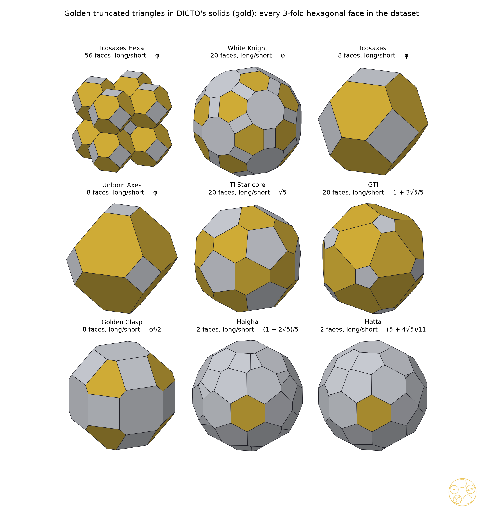
Figure 4.1. The solids of Table 4.1, non-regular truncated triangles in gold: the DICTO-GTT-Solids (ratio φ: Icosaxes, Unborn Axes, White Knight), their assembly Icosaxes Hexa, and five solids with other golden-field ratios. Haigha and Hatta are turned so that one of their two such faces faces the viewer.
4. Main theorem: exactly two golden cuts for each Platonic solid
Theorem 2. For each Platonic solid there are exactly two cuts x at which every original face becomes a truncated polygon with ratio φ: x = φ/(k + 2φ), where the sides shared with the corners are the long ones, and x = 1/(φk + 2), where the original sides are the long ones. This gives ten solids, the DICTO-Kepler golden truncations (Table 4.2). The deeper of the two cuts gives the Greater Golden Cut solid, with the larger corner faces; the lighter gives the Lesser Golden Cut solid. For the octahedron (k = 1) they are DICTO's Icosaxes (x = 1/φ², greater) and Unborn Axes (x = 1/(φ√5), lesser).
Proof. With the same cut x at every corner, the two sides of a truncated face are kx and 1 − 2x. The ratio is φ exactly when kx = φ(1 − 2x) or 1 − 2x = φkx. Each equation is linear in x with one root, and for every k > 0 both roots lie in (0, ½); the first is the larger. For k = 1, φ/(1 + 2φ) = 1/φ² and 1/(φ + 2) = 1/(φ√5), using φ + 2 = φ√5. The identification with Icosaxes and Unborn Axes: in coordinates where the octahedron is |x| + |y| + |z| ≤ 1 and the cut is |x|, |y|, |z| ≤ c, the hexagon sides are √2(2c − 1) and √2(1 − c); c = 1/φ and c = φ²/(φ + 2) give the squared cutting depths 3/φ² and 3φ²/5, the exact depths of Icosaxes and Unborn Axes computed independently from the dataset. All ten ratios were also checked symbolically equal to φ and all ten volumes computed exactly (golden_cuts_exact.py). ∎
Platonic solid (DICTO order)
Greater Golden Cut (corner sides long)
Lesser Golden Cut (original sides long)
Faces
Dodecahedron
Greater Golden Cut Dodecahedron, x = 1/3
Lesser Golden Cut Dodecahedron, x = (7 − √5)/22 ≈ 0.2165
20 triangles, 12 truncated pentagons
Icosahedron
Greater Golden Cut Icosahedron, x = 1/φ²
Lesser Golden Cut Icosahedron, x = 1/(φ√5)
12 pentagons, 20 truncated triangles
Cube
Greater Golden Cut Cube, x ≈ 0.3479
Lesser Golden Cut Cube, x ≈ 0.2332
8 triangles, 6 truncated squares
Tetrahedron
Greater Golden Cut Tetrahedron, x = 1/φ²
Lesser Golden Cut Tetrahedron, x = 1/(φ√5)
4 triangles, 4 truncated triangles
Octahedron
Icosaxes (greater), x = 1/φ²
Unborn Axes (lesser), x = 1/(φ√5)
6 squares, 8 truncated triangles
Table 4.2. The ten DICTO-Kepler golden truncations (edge 1). Exact cuts and volumes for the cube pair are in golden-cuts-exact.md. The Greater Golden Cut Dodecahedron's cut x = 1/3 trisects every edge, the same fraction that gives the Archimedean truncated icosahedron from the icosahedron. DICTO's GTI, despite its name, is not one of the ten: its ratio is 1 + 3√5/5.
Figure 4.2. The ten DICTO-Kepler golden truncations, in DICTO order. Top: the Greater Golden Cut solids (deeper cut, corner sides long); bottom: the Lesser Golden Cut solids (lighter cut, original sides long). For the octahedron these are DICTO's Icosaxes and Unborn Axes. Regular corner polygons in gold.
5. Aristotle's question: the golden pair fills space
Aristotle wrote that among solids the pyramid and the cube fill space (#44 [3]). Koca et al. [4] describe the semi-uniform truncated octahedra T(x), the convex hulls of all permutations of (±(1 + x), ±x, 0), and among them the non-regular ones at x = τ and x = 1/τ (τ = φ); the Polytope Wiki [5] lists the semi-uniform truncated octahedron. In #48 [6] DICTO showed that T(x) and T(1/x) together fill space for every x > 0, from Kelvin's cell (x = 1) to the golden pair (x = τ), and that cutting the icosahedra and Unborns at the golden point gives exactly this pair as two convex solids, Icosaxes and Unborn Axes, the only cut at which both are convex; their volumes there are 1 + 2√5/3 and 1 + √5/3. Theorem 2 singles the same pair out from another side: among all truncations of the octahedron they are exactly the two whose faces are golden.
6. The golden truncations as sections of the regular four-dimensional solids
Theorem 3. Slice the 24-cell, or the 120-cell, by hyperplanes perpendicular to the line from its centre to the centre of one cell, and measure the height t as a fraction of the distance from the centre to that cell's centre. (a) In the 24-cell every section with 0 < t < 1 is a truncated octahedron; it is Archimedean at t = 1/2, Icosaxes at t = 1/φ² and Unborn Axes at t = 1/φ. (b) In the 120-cell the sections at t = 1/φ², 1/2 and 1/φ are the Greater Golden Cut Icosahedron, the Archimedean truncated icosahedron and the Lesser Golden Cut Icosahedron.
Proof. (a) Take the 24-cell with corners at all permutations of (±1, ±1, 0, 0); the point (1, 0, 0, 0) is the centre of an octahedral cell, at distance 1, so the section at height t is the hyperplane x₁ = t. For 0 < t < 1 the only edges that cross it join a corner (1, a) to a corner (0, a + c), where a and c are perpendicular unit vectors along coordinate axes (edge length √2). The crossing point is a + (1 − t)c, and these 24 points are the permutations of (0, ±1, ±(1 − t)). With s = 1 − t each hexagon has sides √2(1 − s), shared with another hexagon, and √2 s, shared with a square; the squares are regular. The ratio is φ exactly when s = 1/φ (t = 1/φ², square-shared sides long: Icosaxes) or s = 1/φ² (t = 1/φ, hexagon-shared sides long: Unborn Axes); s = 1/2 gives equal sides. (b) In the exact atlas of the 120-cell's sections of #65 [7] (exact in Q(√5)), the cell-first sections at heights 9/16 + √5/4, 47/64 + 21√5/64 and 29/32 + 13√5/32 (atlas units), divided by the distance to the cell centre, 47/32 + 21√5/32, are at t = 1/φ², 1/2 and 1/φ. An exact comparison in Q(√5) of all scale-free distances between corners (exact_cmp.py) shows that the outer two are congruent, up to scale, to the icosahedron cut at x = 1/φ² and at x = 1/(φ√5); the middle one has 90 equal edges. ∎
These series of sections are classical: Alicia Boole Stott [8] cut all six regular four-dimensional solids in such series and drew the sections, among them the 120-cell's layers parallel to one cell. What we add is that the golden pairs appear in them, and that they do so at the same fractions 1/φ² and 1/φ in the 24-cell and in the 120-cell. Several of DICTO's solids were already defined as sections in #65 [7]: White Knight is the 120-cell's cell-first section at t = 1/(2φ) (atlas height 29/64 + 13√5/64), and our check confirms it (all 7,140 scale-free distances agree; White Knight is that section enlarged by φ⁴/4); what is new is that its edges are in ratio φ and its 20 hexagons are truncated triangles. Haigha and Hatta, which DICTO noticed resemble the golden truncated icosahedra, are the 120-cell's edge-first sections at atlas heights 3/64 + √5/64 and 7/64 + 3√5/64: Haigha carries the same 12 pentagons and 20 hexagons, but with only a 3-fold axis its faces are tilted off the icosahedral directions.
A search of all six regular four-dimensional solids. We sliced the 5-cell, 8-cell, 16-cell, 24-cell, 600-cell and 120-cell at 2,400 heights in each of their four main directions (vertex-, edge-, face- and cell-first) and compared every convex solid of the dataset with every section, scale-free (slices4d.py, floating point). Besides the solids already defined as sections in #63 and #65, which the search found again, two solids of Table 4.1 appear: the TI Star core is the 120-cell's cell-first section at t = 3(√5 − 2) (atlas height 33/32 + 15√5/32; exact comparison in Q(√5)), and Icosaxes appears a second time, as the 120-cell's vertex-first section at φ/2 of the way to the corner (atlas height 11/8 + 5√5/8; checked exactly: its 24 corners match Icosaxes corner for corner, every squared distance in the same ratio 3 − √5, in Q(√5); s7_icosaxes_exact.py in the #89 study), a section with octahedral symmetry cut from the icosahedral 120-cell. Golden Clasp, the GTI and Unborn Axes (outside the 24-cell) were not found in these directions.
7. Cutting depths in DICTO's other solids
Four of the members are exact truncations of a Platonic solid. Their cutting depths (the ratio of the distances from the centre of the two kinds of face plane; squared, exact) lie in Q(√5); only the octahedral pair is golden in the sense of Theorem 2:
Solid
Pattern
Depth²
Cut x (edge 1)
Archimedean depth²
Icosaxes
truncated octahedron
3/φ²
1/φ²
4/3
Unborn Axes
truncated octahedron
3φ²/5
1/(φ√5)
4/3
DICTO GTI
truncated icosahedron
(5 + √5)/6 = φ√5/3
5/(15 + 3√5) ≈ 0.2303
13/3 − 22√5/15
TI Star core
truncated icosahedron
(195 + 66√5)/361
(10 − √5)/19 ≈ 0.4086
13/3 − 22√5/15
The other two follow the great truncation patterns with rectangles in place of squares: White Knight has 12 regular decagons, 20 truncated triangles of ratio φ and 30 rectangles (the truncated icosidodecahedron's pattern), and Golden Clasp 6 octagons, 8 truncated triangles of ratio φ⁴/2 and 12 rectangles (the truncated cuboctahedron's). Two cross-links: Golden Clasp's hexagon-to-octagon depth² is 3/φ², the depth of Icosaxes; and White Knight's hexagon-to-decagon depth² is 13/3 − 22√5/15, the Archimedean truncated icosahedron's own value.
8. Families
Following DICTO's naming rule (DICTO plus the defining feature): the DICTO-GTT-Solids are the single solids whose truncated triangles have ratio exactly φ: Icosaxes, Unborn Axes and White Knight (the GTI, the TI Star core, Golden Clasp, Haigha and Hatta carry truncated triangles with other ratios from the golden field and are not members); the DICTO-Kepler golden truncations are the ten of Theorem 2 (the Greater and Lesser Golden Cut solids; at the octahedron, Icosaxes and Unborn Axes), named for Kepler, who described the Archimedean truncations in Harmonices Mundi (1619) [9]. Icosaxes and Unborn Axes belong to both and, filling space together, to DICTO's third family, the DICTO Equilibrium Space-Fillers, to be set out in a later paper.
Members and assemblies. A family counts single solids. An assembly is a solid built from copies of family members, touching or passing into each other; assemblies are listed with the family, not counted as members, since otherwise every arrangement of Icosaxes and Unborn Axes would join it. Icosaxes Hexa is such an assembly: nine Icosaxes passing into each other, the middle one reduced to an Unborn Axes (volume 9 + 17√5/3 = 8 × (1 + 2√5/3) + (1 + √5/3)) [10]. So are the stages of #59 [10], twenty Icosaxes brought in from the corners of a dodecahedron: Bloom, Bud and Seed each keep truncated triangles of ratio φ on the outside (twenty or more, the outward hexagons), the rest of their faces clipped where the pieces meet. The Lotus Jewel and keyed assemblies of the same study carry none.
9. What is known and what is new
Known: truncation at any depth is classical, and Kepler [9] described the Archimedean truncations. The two golden truncated octahedra as shapes are Koca et al.'s non-regular truncated octahedra x = τ and 1/τ [4] (the semi-uniform truncated octahedron [5]), as #48 [6] already noted; that T(x) and T(1/x) fill space together is #48's Theorem 4. The series of sections of the regular four-dimensional solids are Stott's [8]. Truncated icosahedra with two edge lengths, whose hexagons are truncated triangles, are familiar from fullerene chemistry, where the C₆₀ molecule has two bond lengths (not in golden ratio). Non-uniform truncations of the Platonic and Archimedean solids have been studied (Zefiro [11]). Lalvani's patent [12] speaks of a "φ-truncated icosahedron" in a building system without defining its depth or faces, so we cannot say whether it is one of the ten.
New within these checks: the rule that every original face be golden and its exactly two solutions for each Platonic solid, with the eight Golden Cut solids other than the octahedral pair; the census of Theorem 1; the observation that the golden pairs are sections of the 24-cell and the 120-cell at the same fractions 1/φ² and 1/φ (Theorem 3), and that White Knight, the TI Star core and Icosaxes are further 120-cell sections with golden-field ratios; and the cutting depths of Section 7. Where an earlier source turns out to describe a member, that member stays in DICTO's family, found independently, with the earlier source cited.
Sources checked (2–3 November 2026). Reference library (ask-library, meaning search, top hits per query): one query under DICTO's earlier informal name for the shape; "truncated triangle face semiregular hexagon alternating sides"; "hexagonal faces with alternating edge lengths golden ratio polyhedron"; "polyhedra with ditrigonal or 3-fold symmetric hexagonal faces"; "golden hexagon icosahedral polyhedron faces"; "truncated tetrahedron non-regular hexagon faces golden"; "truncation of Platonic solid at golden ratio depth"; "truncated icosahedron hexagons with edge lengths in golden ratio"; "golden truncated tetrahedron non-regular hexagons"; "truncated cube octagons alternating edge lengths golden ratio"; "truncated dodecahedron edges trisected decagons"; "non-Archimedean truncation depth of polyhedra family parameter"; "polyhedra with two edge lengths in golden ratio icosahedral"; "truncated octahedron golden ratio space filling pair". Hits read for relevance: Kepler 1619 (pp. 72, 88, 89, 271–273); Pacioli 1509 (pp. 107, 115); Goldberg 1937; Al-Siyabi, Koca and Koca 2020; Johnson 1966; Senechal 2004; Betke–Henk 2000; Torquato–Jiao 2009; Fedorov 1885 ch. 13; Boole Stott 1900. Also: DICTO #48 and its references; Koca et al. 2015 (read in full: eq. 49 is the family T(x) of non-regular truncated octahedra; no golden truncations of the other Platonic solids) and Al-Siyabi, Koca and Koca 2020 (read in full: the uniform Archimedean solids as orbits of D6; no golden truncations); Polytope Wiki; DICTO #59, #63, #65. Web: Wikipedia "Truncated octahedron", "Truncated cube", "Ditrigonal polyhedron", "Truncated triangular trapezohedron"; MathWorld "Truncation"; Zefiro 2011 (Visual Mathematics); US patent 4,723,382 (Google Patents text).
10. Conclusion
The truncated triangle recurs in DICTO's solids because golden cuts of the regular solids make it. For each regular solid exactly two golden cuts exist; for the octahedron they are DICTO's Icosaxes and Unborn Axes, Koca's semi-uniform truncated octahedra at τ and 1/τ, the pair that fills space, and in the 24-cell and the 120-cell both golden pairs sit at the same golden heights either side of the Archimedean section.
Data and code. papers/golden-truncated-triangles: fet_proof.py and symmetry_census.py (Theorem 1, exact), trunc_exact.py (cutting depths, exact), golden_cuts.py and golden_cuts_exact.py (Theorem 2: the ten solids, exact sides, ratios and volumes), slice24.py (numerical sweep of the 24-cell sections, confirming Theorem 3(a)), exact_cmp.py (Theorem 3(b), exact), slices4d.py (the search of Section 6, floating point), tisc_check.py, two_checks.py and wk_check.py (individual sections), tt_figs.py (Figure 4.1), stage_faces.py (faces of the #59 assemblies). The 120-cell sections are from the exact atlas of #65 (studies/2026-10-27-white-queen-polar, data/atlas120.json). DICTO Solids v7 [2]. Run on dicto-big-brother.
References
[1] DICTO, "The FUJI Family", paper #20, DICTO DOI: 10.5281/zenodo.23357896 (2026).
[2] DICTO, "DICTO Solids: exact geometry", dataset, version 7, DICTO DOI: 10.5281/zenodo.23850845 (concept 10.5281/zenodo.23606967) (2026).
[3] DICTO, "Aristotle's Pyramid", paper #44, DICTO DOI: 10.5281/zenodo.23529497 (2026).
[4] N. O. Koca, M. Koca, A. Al-Mukhaini, A. Al-Qanobi, "Quaternionic representations of the pyritohedral group, related polyhedra and lattices", arXiv:1506.04600 (2015), eq. 49; published as "Symmetry of the pyritohedron and lattices", SQU Journal for Science 21(2) (2016) 139–149, doi:10.24200/squjs.vol21iss2pp139-149.
[5] Polytope Wiki, "Truncated octahedron" (semi-uniform truncated octahedron), https://polytope.miraheze.org (viewed 3 November 2026).
[6] DICTO, "The Golden Split: Icosahedra, Unborns and AXE Become Two Convex Space-Fillers", paper #48, DICTO DOI: 10.5281/zenodo.23596362 (2026).
[7] DICTO, "The Red Queen 120-cell: Aristotle's five pyramids as the cores of the regular four-dimensional solids", paper #65, DICTO DOI: 10.5281/zenodo.23716140 (2026).
[8] A. Boole Stott, "On certain series of sections of the regular four-dimensional hypersolids", Verhandelingen der Koninklijke Akademie van Wetenschappen te Amsterdam, Eerste Sectie, 7, no. 3 (1900).
[9] J. Kepler, Harmonices Mundi, Linz (1619), Book II.
[10] DICTO, "The Icosaxes Hexa: Bloom, Bud and Seed", paper #59, DICTO DOI: 10.5281/zenodo.23677485 (2026).
[11] L. Zefiro, "Vertex- and edge-truncation of the Platonic and Archimedean solids leading to vertex-transitive polyhedra", Visual Mathematics 13(2) (2011), https://www.mi.sanu.ac.rs/vismath/zefirosept2011/_truncation_Archimedean_polyhedra.htm.
[12] H. Lalvani, "Building structures based on polygonal members and icosahedral", US patent 4,723,382 (filed 1986, granted 1988).
Chapter 5 · The Red Queen 120-cell
Aristotle's five pyramids as the cores of the regular four-dimensional solids
From paper #65, version 2 · DICTO DOI: 10.5281/zenodo.23716140
Abstract. Aristotle wrote that among solids the pyramid fills space, and the pyramids cut from the centres of the five Platonic solids have been argued over ever since. We prove that all five of these pyramids are the cores of the regular four-dimensional solids, seen in perspective: the tetrahedron, octahedron and icosahedron pyramids are the shadows of the cells round one corner of the 5-cell, the 16-cell and the 600-cell, and the cube, octahedron and dodecahedron pyramids are the shadows of the sides of the four-dimensional pyramid over one cell of the tesseract, the 24-cell and the 120-cell. Each shadow has exactly the proportions of Aristotle's pyramid, and the five come in polar pairs. The 120-cell, polar of the White Queen 600-cell of #63 and named the Red Queen by DICTO, is built exactly from the White Queen: its 600 corners are her 600 cell centres, its corners stand in her fifteen Cleo shells, its 120 dodecahedra in nine layers round one, and its core is the dodecahedron cut into twelve pentagonal pyramids where hers is the icosahedron cut into twenty Cleo-Icos. No convex regular solid has dodecahedra round a corner, but the star polytope {5/2,5,3} does: its twelve golden spikes at a corner cast exactly Aristotle's dodecahedron pyramids. Her full atlas is exact: 124 slice patterns in the four main directions, passing cell-first through the Archimedean solids of the icosahedral family, and four shadows, each filled exactly once by its front cells and once by its back cells, each the polar of the White Queen's middle slice.
1. From the White Queen to the Red Queen
In #63, the White Queen 600-cell, 600 regular tetrahedra stand round 120 corners, and round one corner they fall into fifteen shells whose core is twenty Cleo-Icos filling a regular icosahedron (#19, #44). DICTO proposed her polar swap: every corner of one solid becomes a cell of the other. The polar of the 600-cell is the 120-cell, 120 regular dodecahedra round 600 corners. DICTO named it the Red Queen, after the other queen of Through the Looking-Glass. He then proposed that the dodecahedral pyramid, the one of Aristotle's five pyramids the White Queen lacks, sits at the Red Queen's core, and that all five pyramids are four-dimensional shadows. They are.
2. The Red Queen, built from the White Queen
We build the 120-cell from the exact model of #63, in ℚ(√5). Its corners are the centres of the White Queen's 600 cells; two corners are joined when their cells share a triangle (1200 edges); the five cells round each White Queen edge give a pentagon (720 pentagons); the twenty cells round each White Queen corner give a cell (120 cells). Checked exactly: all corners on one sphere, all edges equal, four edges at every corner, every pentagon regular and shared by exactly two cells, every cell a regular dodecahedron (13 of 13 checks).
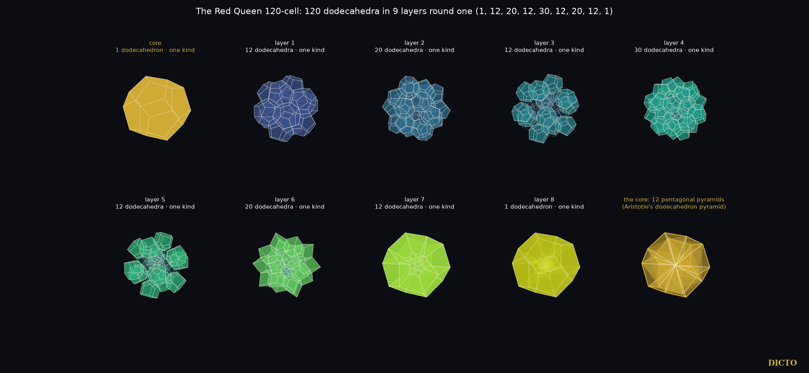
Figure 5.1. The Red Queen: 120 dodecahedra in nine layers round one (1, 12, 20, 12, 30, 12, 20, 12, 1), seen in perspective from just beyond the opposite cell, each layer one kind of piece; last panel: the gold core cut from its centre into its twelve pentagonal pyramids.
Layers and core. Round one dodecahedron the 120 cells stand in nine layers of 1, 12, 20, 12, 30, 12, 20, 12 and 1, each one kind of piece in the perspective view, and the 600 corners in fifteen layers of 20, 20, 30, 60, 60, 60, 20, 60, 20, 60, 60, 60, 30, 20 and 20: exactly the Cleo shells of the White Queen, since her cell centres are the Red Queen's corners. Both lists are palindromes, the same forwards and backwards, as the White Queen's shells are (#63): the Red Queen is centrally symmetric, so the layers counted from one cell match, in reverse, the layers counted from the opposite cell. The two cores exchange one for one: each of the White Queen's twenty Cleo-Icos becomes one of the twenty corners of the Red Queen's central dodecahedron, and each of the twelve corners of the White Queen's icosahedron becomes one of its twelve pentagons. The White Queen's twenty Cleo-Icos are real cells, the shadows of the twenty tetrahedra at her corner. The Red Queen's core is one whole cell; its twelve pentagonal pyramids, Aristotle's dodecahedron pyramid, appear when she is divided from her centre into 120 four-dimensional pyramids, one over each cell: the twelve sides of the central one cast them exactly (§3). In the star Red Queen (§5) they are parts of real cells again.
How it closes. Three regular dodecahedra round an edge fill 3 × 116.57° = 349.7° and leave a gap of 10.3°, so dodecahedra cannot close round an edge in ordinary space; five regular tetrahedra leave 7.36°. As three pentagons round a corner close only by folding up into the dodecahedron, these gaps close by bending into the fourth dimension, and the Red Queen closes with three dodecahedra round every edge. In the perspective view the pieces close with no gaps and no overlaps, slightly bent, and the last dodecahedron becomes the outside, as the last pentagon of a flattened dodecahedron becomes its outer rim.
3. Main theorem: Aristotle's five pyramids
Theorem. In perspective from just beyond the far side, along a corner or along a cell centre:
(1) Corner cores. The cells at one corner of the 5-cell, the 16-cell and the 600-cell cast the face pyramids of the regular tetrahedron (4), octahedron (8) and icosahedron (20, the Cleo-Icos), apex at the centre.
(2) Cell cores. The sides of the four-dimensional pyramid from the solid's centre over one cell cast the face pyramids of that cell: tetrahedron (5-cell, 16-cell, 600-cell), cube (tesseract, 6), octahedron (24-cell, 8) and dodecahedron (120-cell, 12).
(3) Exact proportions. In every case the shadow is exactly Aristotle's face pyramid of that Platonic solid: its side edge² over its base edge² is 3/8, 1/2, 3/4, (5 + √5)/8 and (9 + 3√5)/8 for the tetrahedron, octahedron, cube, icosahedron and dodecahedron.
(4) Polar pairs. 16-cell (8 octahedron pyramids) ↔ tesseract (6 cube pyramids); 600-cell (20 Cleo-Icos) ↔ 120-cell (12 pentagonal pyramids); the 5-cell and the 24-cell are their own polars.
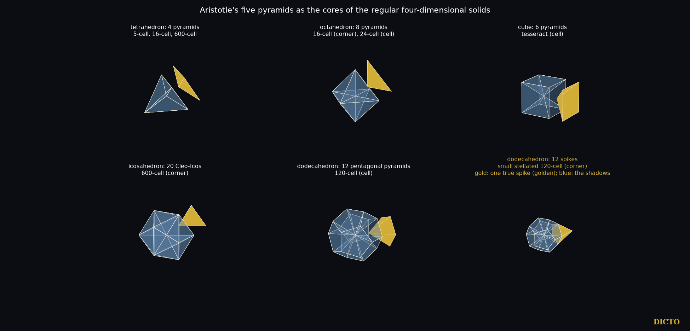
Figure 5.2. Aristotle's five pyramids as the cores of the regular four-dimensional solids, one pyramid of each drawn out in gold. Last panel: the star 120-cell (§5), one true spike in gold, its shadows in blue.
Proof. The six solids are built exactly (the 5-cell in the hyperplane of five coordinates summing to zero; the 16-cell, tesseract and 24-cell from their standard coordinates; the 600-cell and 120-cell as in §2). For each we take the eye on the axis just beyond the far side and project. On the axis the corner, or the cell centre and the solid's centre, fall on the centre of the picture, so every piece through it becomes a pyramid with its apex there; we check exactly that the far ends of these pieces form a regular solid centred on the picture's centre, count its faces, and compare side edge² over base edge² with Aristotle's pyramid. All ten cases agree exactly (10 of 10).
4. True pieces and their shadows
DICTO pointed out that the pyramids in four dimensions may have different proportions from their shadows. They do. The corner cores are regular tetrahedra in four dimensions, side edge equal to base edge, but their shadows are the flatter face pyramids. The sides of a cell core run from the solid's centre to its corners, so in four dimensions their side edge² over base edge² is the solid's radius² over edge²: 2/5 (5-cell), 1/2 (16-cell), 1 (tesseract and 24-cell), (3 + √5)/2 (600-cell) and 7 + 3√5 (120-cell), while their shadows are again Aristotle's. The four-dimensional solids carry tall pieces; their shadows, in our space, are Aristotle's five pyramids.
5. The star core
No convex regular four-dimensional solid has dodecahedra round a corner: that would be {3,5,3}, which never closes and is the infinite icosahedral honeycomb of hyperbolic space. The star polytope {5/2,5,3}, the small stellated 120-cell of Hess, does. It stands on the White Queen's 120 corners, with 1200 edges joining corners one radius apart, 720 pentagrams and 120 small stellated dodecahedra, and round every corner a regular dodecahedron of twelve cells. Each of these twelve cells meets the corner with one spike, a pentagonal pyramid whose side edge is exactly φ times its base edge. In perspective the twelve spikes cast exactly the dodecahedron cut into Aristotle's twelve pentagonal pyramids (checked exactly, side edge² over base edge² = (9 + 3√5)/8). So the dodecahedral pyramids that no convex solid can hold at a corner sit at the corner of the star Red Queen: golden in four dimensions, Aristotle's in their shadow.
6. The Red Queen's atlas
As for the White Queen in #63, we cut the Red Queen in her four main directions, through a corner, an edge, a pentagon and a cell, from the centre to the tip, at every corner height and once inside every gap, exactly in ℚ(√5). The one-pattern-per-gap lemma of #63 holds here too (cuts at ¼, ½ and ¾ of every gap cross the same edges), so this list is complete. Her corners are the centres of the White Queen's cells in the coordinates of #63 (corner radius² 7/4 + 3√5/4, edge 1/2). The four directions d are the average of the corners of one element: corner-first d = ((7+3√5)/8, (3+√5)/8, 0, 1/4), a corner; edge-first d = ((7+3√5)/8, (3+√5)/8, 0, 0), the midpoint of an edge; pentagon-first d = ((7+3√5)/8, (5+2√5)/20, (5+3√5)/40, 0), the centre of a pentagon; cell-first d = ((7+3√5)/8, 0, 0, 0), the centre of a cell. They are exactly parallel to the White Queen's cell-, triangle-, edge- and vertex-first directions. Every slice is checked exactly as in #63: repeated points merged by exact comparison, every face plane tested to support the slice by an exact sign in ℚ(√5), every face ordered by an exact two-dimensional hull and turned outward, every edge in exactly two faces, and V − E + F = 2. The atlas adds 17 checks of its own, all passed: among them that each gap gives the same faces when cut at ¼, ½ and ¾ of its height, that inside a gap each slice face is the cross-section of exactly one dodecahedron, that every cut point is a corner of its slice, that each shadow is tiled exactly once by its front cells and once by its back cells (exact volume), and that the polar pairings with the White Queen hold.
Atlas. The Red Queen has 124 slice patterns: 31 corner-first (faces of 3 to 8 sides, largest 108 vertices), 45 edge-first (3 to 9, the only nine-sided faces, largest 114), 33 pentagon-first (3 to 8 and 10, largest 120 vertices and 62 faces) and 15 cell-first (faces of 3, 4, 5, 6, 8 and 10 sides, largest 120 vertices).
Cell-first she passes through the Archimedean solids of the icosahedral family, each exact: the rhombicosidodecahedron, the truncated icosahedron and the truncated dodecahedron (each at one height inside its gap), the icosidodecahedron, and regular dodecahedra (edge φ times the cell's) up to the tip, where the slice is the cell itself; these dodecahedra are her only all-pentagon slices. The other directions begin with a regular tetrahedron (corner-first), a regular triangular prism (edge-first) and a regular pentagonal prism (pentagon-first), and regular decagons appear in the pentagon-first middle slice and in one cell-first gap.
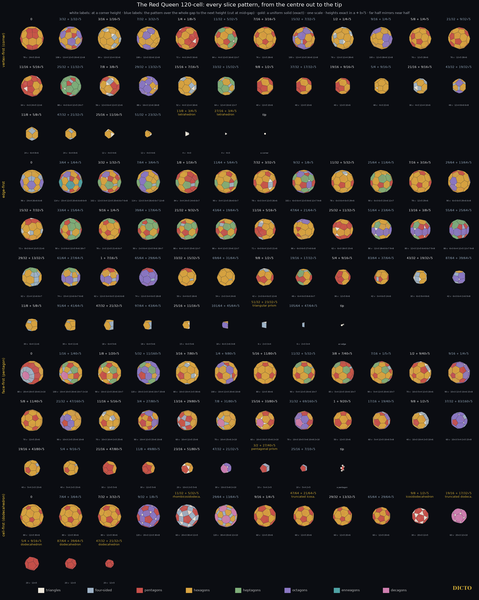
Figure 5.3. The Red Queen's atlas: her slice patterns in the four main directions, from the centre to the tip.
Shadows. Her four shadows are
Direction
Vertices · edges · faces
Faces
Front · back · side-on cells
corner-first
158 · 240 · 84
72 pentagons, 12 decagons
54 · 54 · 12
edge-first
180 · 282 · 104
96 pentagons, 6 decagons, 2 twelve-sided
56 · 56 · 8
pentagon-first
160 · 250 · 92
80 pentagons, 10 octagons, 2 regular decagons
54 · 54 · 12
cell-first
80 · 120 · 42
12 pentagons, 30 hexagons
45 · 45 · 30
Every face that is not a pentagon is a side-on cell seen flat. As in the White Queen, each shadow resolves into two exact halves: the front cells fill it exactly once and so do the back cells (exact volume). And the two queens' atlases mirror each other by polarity: each of the Red Queen's shadows is the polar of the White Queen's middle slice in the same direction, and each of her middle slices is the polar of the White Queen's shadow.
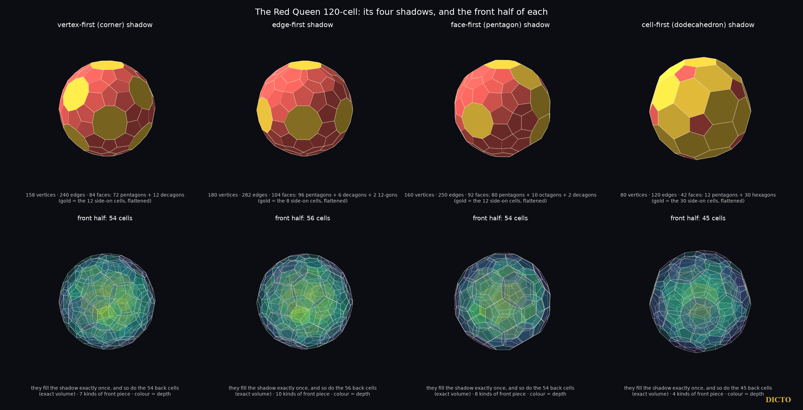
Figure 5.4. The Red Queen's four shadows (gold: side-on cells, seen flat) and the front half of each, which fills its shadow exactly once.
7. Prior art and credit
The 120-cell and 600-cell are Schläfli's (about 1852, published 1901); their coordinates, polarity and the star polytopes {5/2,5,3} and the others are in Coxeter's Regular Polytopes, the star polytopes first found by Schläfli and Hess (1883). Alicia Boole Stott, in "On certain series of sections of the regular four-dimensional hypersolids" (Verhandelingen der Koninklijke Akademie van Wetenschappen te Amsterdam, Eerste Sectie, 7, no. 3, 1900), cut the 120-cell cell-first, parallel to one bounding dodecahedron, through the layers of corners to the middle, and drew each section as a flat plan with coloured faces (her diagrams VIII–XIV); we read her paper for this version. Her series matches our eight cell-first cuts through corner layers, from the cell to the centre, among them the rhombicosidodecahedron and the icosidodecahedron, which are hers. The truncated icosahedron and the truncated dodecahedron lie inside gaps between corner layers, which her series does not cut, and she has no corner-, edge- or pentagon-first series and no shadows. The layers 1, 12, 20, 12, 30, … of the 120-cell's cells round one cell are known, for example in Schleimer and Segerman's Puzzling the 120-cell. Aristotle's claim and the long dispute over how many pyramids meet round a point are traced by Lagarias and Zong (2012); the face pyramids of the Platonic solids and which of them fill space are #44, Aristotle's Pyramid, and the Cleo-Icos is #19. We found no earlier statement that Aristotle's five pyramids are exactly the perspective cores of the regular four-dimensional solids, nor of the star core of {5/2,5,3}.
Sources checked (28 October 2026; for Version 2, A. Boole Stott 1900, read in the Internet Archive scan of the Verhandelingen, volume 7, and added to the reference library). Reference library search ("120-cell layers round one cell; Boole Stott sections; Schlegel diagram; 600-cell and 120-cell duality"): H. S. M. Coxeter, Regular Polytopes, 3rd ed. (1973); M. Koca, N. Koca, M. Al-Ajmi, branching of the W(H4) polytopes (2011); M. Koca, M. Al-Ajmi, N. Koca, grand antiprism by quaternions (2009); Kaida Shi, overall shapes of the 120-cell and 600-cell (2009); A. Garrison and R. Scott, small covers of the dodecahedron and the 120-cell (2001); J. C. Lagarias and C. Zong, "Mysteries in packing regular tetrahedra", Notices of the AMS (2012). Web search "120-cell layers of cells around one dodecahedron 1, 12, 20, 12, 30": Wikipedia "120-cell" (citing J. Stillwell, "The story of the 120-cell", Notices of the AMS, 2001); S. Schleimer and H. Segerman, "Puzzling the 120-cell", arXiv 1310.3549, and their sculpture talks; the Zometool 120-cell model page of the Ruhr-Universität Bochum. Hess (1883) and the hyperbolic {3,5,3} are cited from Coxeter's book as standard; not read for this chapter.
8. Conclusion
Aristotle's five pyramids are the shadows of the four-dimensional regular solids' cores: three as the cells round a corner, three as the sides of the pyramid over a cell, each with exactly Aristotle's proportions, paired by polarity. The Red Queen, built from the White Queen, holds the dodecahedral one at her core, and the star Red Queen holds it at every corner, golden in four dimensions. Her atlas of 124 slices and four shadows mirrors the White Queen's by polarity, shadow for middle slice.
Appendix. The 124 slice patterns
Every pattern from the centre (height 0) to the tip, in each direction; heights are x·d with d as in §6, exact in ℚ(√5) (√5 written as a factor). corners marks a cut through a layer of corners, gap a cut inside the gap between two layers (by the one-pattern-per-gap lemma every height in the gap gives the same pattern). V, E, F count corners, edges and faces; faces are given as number × number of sides; the last column names the uniform solids. The same table, with edge lengths and dihedral angles, is data/atlas120.json in the study attached to this record.
#
direction
cut
height
V
E
F
faces
uniform solid
1
corner-first
corners
0
78
120
44
24×5, 20×6
2
corner-first
gap
3/32+1/32√5
108
162
56
12×4, 12×5, 20×6, 12×8
3
corner-first
corners
3/16+1/16√5
84
138
56
12×3, 12×4, 32×6
4
corner-first
gap
7/32+3/32√5
108
162
56
12×3, 32×6, 12×8
5
corner-first
corners
1/4+1/8√5
72
114
44
4×3, 24×5, 16×6
6
corner-first
gap
11/32+5/32√5
84
126
44
4×3, 12×5, 16×6, 12×7
7
corner-first
corners
7/16+3/16√5
76
114
40
12×5, 28×6
8
corner-first
gap
15/32+7/32√5
100
150
52
12×4, 12×5, 16×6, 12×8
9
corner-first
corners
1/2+1/4√5
76
126
52
12×3, 12×4, 28×6
10
corner-first
gap
9/16+1/4√5
100
150
52
12×3, 28×6, 12×8
11
corner-first
corners
5/8+1/4√5
76
114
40
12×5, 28×6
12
corner-first
gap
21/32+9/32√5
76
114
40
12×5, 28×6
13
corner-first
corners
11/16+5/16√5
64
102
40
4×3, 24×5, 12×6
14
corner-first
gap
25/32+11/32√5
88
132
46
4×3, 6×4, 12×5, 24×7
15
corner-first
corners
7/8+3/8√5
56
96
42
12×3, 6×4, 12×5, 12×6
16
corner-first
gap
29/32+13/32√5
88
132
46
16×3, 12×6, 18×8
17
corner-first
corners
15/16+7/16√5
52
84
34
4×3, 12×4, 18×6
18
corner-first
gap
33/32+15/32√5
64
96
34
12×4, 10×6, 12×7
19
corner-first
corners
9/8+1/2√5
40
60
22
12×5, 10×6
20
corner-first
gap
37/32+17/32√5
40
60
22
12×5, 10×6
21
corner-first
corners
19/16+9/16√5
40
60
22
12×5, 10×6
22
corner-first
gap
5/4+9/16√5
48
72
26
4×3, 22×6
23
corner-first
corners
21/16+9/16√5
36
60
26
4×3, 12×4, 10×6
24
corner-first
gap
43/32+19/32√5
48
72
26
12×4, 8×6, 6×8
25
corner-first
corners
11/8+5/8√5
24
36
14
6×4, 8×6
26
corner-first
gap
47/32+21/32√5
24
36
14
6×4, 8×6
27
corner-first
corners
25/16+11/16√5
12
18
8
4×3, 4×6
28
corner-first
gap
51/32+23/32√5
12
18
8
4×3, 4×6
29
corner-first
corners
13/8+3/4√5
4
6
4
4×3
regular tetrahedron
30
corner-first
gap
27/16+3/4√5
4
6
4
4×3
regular tetrahedron
31
corner-first
corners
7/4+3/4√5
tip: a corner
32
edge-first
corners
0
96
150
56
24×4, 26×6, 6×8
33
edge-first
gap
3/64+1/64√5
114
171
59
15×4, 12×5, 20×6, 6×8, 6×9
34
edge-first
corners
3/32+1/32√5
102
159
59
12×3, 3×4, 12×5, 20×6, 6×7, 6×8
35
edge-first
gap
7/64+3/64√5
114
171
59
12×3, 3×4, 26×6, 6×7, 12×8
36
edge-first
corners
1/8+1/16√5
84
129
47
3×4, 24×5, 14×6, 6×7
37
edge-first
gap
11/64+5/64√5
90
135
47
3×4, 12×5, 26×6, 6×7
38
edge-first
corners
7/32+3/32√5
78
123
47
6×3, 3×4, 12×5, 26×6
39
edge-first
gap
9/32+1/8√5
102
153
53
6×3, 6×4, 12×5, 8×6, 12×7, 9×8
40
edge-first
corners
11/32+5/32√5
78
123
47
6×3, 6×4, 6×5, 29×6
41
edge-first
gap
25/64+11/64√5
90
135
47
6×3, 6×5, 23×6, 12×7
42
edge-first
corners
7/16+3/16√5
78
117
41
12×5, 29×6
43
edge-first
gap
29/64+13/64√5
90
135
47
6×3, 6×5, 29×6, 6×8
44
edge-first
corners
15/32+7/32√5
72
117
47
8×3, 6×4, 12×5, 21×6
45
edge-first
gap
33/64+15/64√5
90
135
47
2×3, 6×4, 12×5, 9×6, 18×7
46
edge-first
corners
9/16+1/4√5
78
117
41
2×3, 12×5, 21×6, 6×7
47
edge-first
gap
39/64+17/64√5
90
135
47
2×3, 6×4, 12×5, 9×6, 18×7
48
edge-first
corners
21/32+9/32√5
86
129
45
6×4, 12×5, 15×6, 12×7
49
edge-first
gap
43/64+19/64√5
86
129
45
6×4, 12×5, 15×6, 12×7
50
edge-first
corners
11/16+5/16√5
71
114
45
6×3, 6×4, 12×5, 21×6
51
edge-first
gap
47/64+21/64√5
86
129
45
6×3, 6×5, 27×6, 6×8
52
edge-first
corners
25/32+11/32√5
62
99
39
6×3, 18×5, 15×6
53
edge-first
gap
51/64+23/64√5
86
129
45
12×3, 18×6, 6×7, 9×8
54
edge-first
corners
13/16+3/8√5
80
123
45
12×3, 12×5, 6×6, 6×7, 9×8
55
edge-first
gap
55/64+25/64√5
86
129
45
6×3, 6×4, 12×5, 12×7, 9×8
56
edge-first
corners
29/32+13/32√5
62
99
39
21×4, 12×6, 6×7
57
edge-first
gap
61/64+27/64√5
74
111
39
15×4, 12×6, 6×7, 6×8
58
edge-first
corners
1+7/16√5
62
99
39
12×3, 3×4, 6×5, 12×6, 6×8
59
edge-first
gap
65/64+29/64√5
74
111
39
12×3, 3×4, 6×5, 18×8
60
edge-first
corners
33/32+15/32√5
50
75
27
3×4, 6×5, 18×6
61
edge-first
gap
69/64+31/64√5
54
81
29
2×3, 3×4, 24×6
62
edge-first
corners
9/8+1/2√5
42
66
26
2×3, 6×4, 6×5, 12×6
63
edge-first
gap
19/16+17/32√5
48
72
26
6×4, 6×5, 8×6, 6×7
64
edge-first
corners
5/4+9/16√5
36
54
20
12×5, 8×6
65
edge-first
gap
83/64+37/64√5
42
63
23
3×4, 6×5, 14×6
66
edge-first
corners
43/32+19/32√5
30
51
23
6×3, 9×4, 8×6
67
edge-first
gap
87/64+39/64√5
42
63
23
6×3, 6×4, 2×6, 9×8
68
edge-first
corners
11/8+5/8√5
30
45
17
6×4, 11×6
69
edge-first
gap
91/64+41/64√5
30
45
17
6×4, 11×6
70
edge-first
corners
47/32+21/32√5
18
27
11
6×4, 5×6
71
edge-first
gap
97/64+43/64√5
18
27
11
6×4, 5×6
72
edge-first
corners
25/16+11/16√5
15
24
11
6×3, 5×6
73
edge-first
gap
101/64+45/64√5
18
27
11
6×3, 2×6, 3×8
74
edge-first
corners
51/32+23/32√5
6
9
5
2×3, 3×4
regular triangular prism
75
edge-first
gap
105/64+47/64√5
6
9
5
2×3, 3×4
76
edge-first
corners
27/16+3/4√5
tip: an edge
77
pentagon-first
corners
0
80
130
52
20×4, 20×5, 10×6, 2×10
78
pentagon-first
gap
1/16+1/40√5
100
150
52
10×4, 10×5, 20×6, 10×7, 2×10
79
pentagon-first
corners
1/8+1/20√5
90
140
52
10×3, 12×5, 20×6, 10×7
80
pentagon-first
gap
5/32+11/160√5
120
180
62
20×3, 2×5, 10×6, 10×7, 20×8
81
pentagon-first
corners
3/16+7/80√5
80
130
52
10×3, 10×4, 2×5, 30×6
82
pentagon-first
gap
1/4+9/80√5
100
150
52
10×4, 12×5, 20×6, 10×8
83
pentagon-first
corners
5/16+11/80√5
80
120
42
12×5, 30×6
84
pentagon-first
gap
11/32+5/32√5
90
135
47
5×4, 12×5, 20×6, 10×7
85
pentagon-first
corners
3/8+7/40√5
85
130
47
5×4, 22×5, 10×6, 10×7
86
pentagon-first
gap
7/16+1/5√5
90
135
47
5×4, 12×5, 20×6, 10×7
87
pentagon-first
corners
1/2+9/40√5
70
115
47
10×3, 5×4, 12×5, 20×6
88
pentagon-first
gap
9/16+1/4√5
90
135
47
10×3, 12×5, 10×6, 15×8
89
pentagon-first
corners
5/8+11/40√5
70
105
37
12×5, 25×6
90
pentagon-first
gap
21/32+47/160√5
90
135
47
10×3, 2×5, 25×6, 10×8
91
pentagon-first
corners
11/16+5/16√5
70
115
47
10×3, 10×4, 2×5, 25×6
92
pentagon-first
gap
3/4+27/80√5
90
135
47
10×4, 12×5, 15×6, 10×8
93
pentagon-first
corners
13/16+29/80√5
60
95
37
10×4, 12×5, 15×6
94
pentagon-first
gap
7/8+31/80√5
70
105
37
10×4, 25×6, 2×10
95
pentagon-first
corners
15/16+33/80√5
60
95
37
10×3, 10×5, 15×6, 2×10
96
pentagon-first
gap
31/32+69/160√5
70
105
37
10×3, 10×5, 5×6, 10×8, 2×10
97
pentagon-first
corners
1+9/20√5
50
75
27
12×5, 15×6
98
pentagon-first
gap
17/16+19/40√5
60
90
32
5×4, 12×5, 10×6, 5×8
99
pentagon-first
corners
9/8+1/2√5
40
70
32
10×3, 10×4, 2×5, 10×6
100
pentagon-first
gap
37/32+83/160√5
60
90
32
10×3, 5×4, 2×5, 15×8
101
pentagon-first
corners
19/16+43/80√5
40
60
22
5×4, 2×5, 15×6
102
pentagon-first
gap
5/4+9/16√5
40
60
22
5×4, 2×5, 15×6
103
pentagon-first
corners
21/16+47/80√5
30
45
17
12×5, 5×6
104
pentagon-first
gap
11/8+49/80√5
30
45
17
12×5, 5×6
105
pentagon-first
corners
23/16+51/80√5
20
35
17
10×3, 2×5, 5×6
106
pentagon-first
gap
47/32+21/32√5
30
45
17
10×3, 5×8, 2×10
107
pentagon-first
corners
3/2+27/40√5
10
15
7
5×4, 2×5
regular pentagonal prism
108
pentagon-first
gap
25/16+7/10√5
10
15
7
5×4, 2×5
109
pentagon-first
corners
13/8+29/40√5
tip: a pentagon
110
cell-first
corners
0
80
120
42
12×5, 30×6
111
cell-first
gap
7/64+3/64√5
80
120
42
12×5, 30×6
112
cell-first
corners
7/32+3/32√5
80
120
42
12×5, 30×6
113
cell-first
gap
9/32+1/8√5
120
180
62
20×3, 12×5, 30×8
114
cell-first
corners
11/32+5/32√5
60
120
62
20×3, 30×4, 12×5
rhombicosidodecahedron
115
cell-first
gap
29/64+13/64√5
120
180
62
30×4, 20×6, 12×10
116
cell-first
corners
9/16+1/4√5
60
90
32
12×5, 20×6
117
cell-first
gap
47/64+21/64√5
60
90
32
12×5, 20×6
truncated icosahedron
118
cell-first
corners
29/32+13/32√5
60
90
32
12×5, 20×6
119
cell-first
gap
65/64+29/64√5
60
90
32
12×5, 20×6
120
cell-first
corners
9/8+1/2√5
30
60
32
20×3, 12×5
icosidodecahedron
121
cell-first
gap
19/16+17/32√5
60
90
32
20×3, 12×10
truncated dodecahedron
122
cell-first
corners
5/4+9/16√5
20
30
12
12×5
regular dodecahedron
123
cell-first
gap
87/64+39/64√5
20
30
12
12×5
regular dodecahedron
124
cell-first
corners
47/32+21/32√5
20
30
12
12×5
regular dodecahedron
Version 2 (28 October 2026): following an independent review of #63, §6 gives the four direction vectors and the exact checks, §7 reports Alicia Boole Stott's 1900 paper, now read, the Appendix tabulates all 124 slice patterns, and the study files are stated to be attached to this record.
Data and code. The study files are attached to this record as a zip file (red-queen-120-study): scripts, exact data and the table of the Appendix with edge lengths and dihedral angles (data/atlas120.json). Study 2026-10-27-white-queen-polar (red_queen.py, five_pyramids.py, atlas120.py, render_red_queen.py, render_five_pyramids.py, render_atlas120.py; data red_queen.json, five_pyramids.json, atlas120.json), built on the exact source model of #63. References: DICTO, The White Queen 600-cell (#63, DOI 10.5281/zenodo.23690856); Aristotle's Pyramid (#44); the Cleo-Icos (#19).
Chapter 6 · All Five Golden Pairs Are Slices of Four-Dimensional Solids
The golden tetrahedra are slices of the tesseract, the golden dodecahedra slices of the 120-cell; among the Archimedean, Catalan and Kepler–Poinsot solids, golden cuts are rare and are all found here
From paper #89, version 1 · DICTO DOI: 10.5281/zenodo.23917931
Slice a four-dimensional cube, the tesseract, straight across its longest diagonal and every slice is a tetrahedron with its corners cut off. At two golden heights the cuts are exactly the golden cuts of #88, one either side of the classical truncated tetrahedron at half height. The golden dodecahedra appear the same way in the 120-cell, so four of the five golden pairs of the regular solids are slices of regular four-dimensional solids. The cubes are the exception, and we prove it: no slice of a regular four-dimensional solid is a cube with its corners cut. They live one step away, in the rectified tesseract, the four-dimensional cube cut back to the middles of its edges, whose slices are cubes cut at every depth, both golden ones included. Beyond the regular solids golden cuts are rare: a solid with two kinds of face never has one; two solids come close, with every face golden or regular; two rhombic solids have their own golden pair; and the four star polyhedra of Kepler and Poinsot have two each.
Abstract. In #88 we showed that each Platonic solid has exactly two golden cuts, the Greater and Lesser Golden Cut solids, and that the icosahedral and octahedral pairs are sections of the 120-cell and the 24-cell. DICTO proposed carrying the golden cuts beyond the Platonic solids. Our main theorem is four-dimensional: the sections of the tesseract perpendicular to a long diagonal, between its two middle layers of corners, are exactly the tetrahedra cut at x = (1 − h)/(2 − h), so that the Greater Golden Cut Tetrahedron, the Archimedean truncated tetrahedron and the Lesser Golden Cut Tetrahedron are the sections at heights 1/φ², 1/2 and 1/φ; the golden tetrahedra are also sections of the 120-cell, and the Greater and Lesser Golden Cut Dodecahedra are its cell-first sections at 1/φ² and 1/φ of the way between two layers of corners. Hence the golden pairs of the dodecahedron, icosahedron, tetrahedron and octahedron are all sections of regular four-dimensional solids. The golden cubes are not: no hyperplane section of any of the six regular four-dimensional solids is a cube cut at its corners, at any depth (Theorem A). They are one step away: the sections x1 = h of the rectified tesseract with corners (±1, ±1, ±1, 0) are exactly the cubes cut at x = h/2, so the Greater and Lesser Golden Cut Cubes are its sections at h = 2xG and 2xL, as the golden octahedra are sections of the rectified 16-cell, the 24-cell (Theorem B); nine uniform polytopes of the tesseract and 24-cell families have golden cube sections. DICTO proposed that cut cubes and small octahedra fill space; they do at every depth, and this filling is a section of the rectified tesseractic honeycomb. Beyond Plato: the twelve golden cut depths of the regular triangle, square, pentagon, hexagon, octagon and decagon are all different, so no Archimedean solid has a cut making every face golden; only the icosidodecahedron and the snub dodecahedron have cuts making every face golden or regular, two each, at 1/(φ√5) and 1/3, a new family, the DICTO Golden-Regular Cuts (for the icosidodecahedron, Zefiro's 2011 regular-decagon and regular-hexagon stages, here read as golden), and DICTO added the two lesser ones, whose truncated triangles have ratio exactly φ, to the DICTO-GTT-Solids; among the Catalan solids only the rhombic dodecahedron and the rhombic triacontahedron have golden cuts, exactly two each, in closed form, which join the DICTO-Kepler golden truncations; and each Kepler–Poinsot star polyhedron has two, none of which is a section of the ten regular star polytopes in the icosahedral direction (floating-point search). All results are exact in the number fields of the solids, except where stated.
1. Introduction
A golden cut of a Platonic solid [1] cuts every corner equally so that each original face becomes a truncated polygon whose two side lengths are in the golden ratio φ. #88 proved that each Platonic solid has exactly two, ten solids in all, the DICTO-Kepler golden truncations: at the octahedron they are DICTO's Icosaxes and Unborn Axes, which fill space together and which, with White Knight, were the DICTO-GTT-Solids; and the icosahedral and octahedral pairs are sections of the 120-cell and the 24-cell at 1/φ² and 1/φ of the way from the centre to a cell, either side of the Archimedean section at 1/2.
DICTO proposed taking the golden cuts beyond Plato, to the other solids, and that the remaining golden pairs should also be found in four dimensions. The four-dimensional answer is the strongest result and comes first (Section 3): the golden tetrahedra are sections of the tesseract and of the 120-cell, and the golden dodecahedra are sections of the 120-cell. The answer for the other families (Sections 4–6) is a set of rules that leave very few golden cuts: none on an Archimedean solid, two near misses (every face golden or regular), two rhombic Catalan solids, and the four Kepler–Poinsot star polyhedra. Section 7 records the golden members of classical space fillings.
Names. The names are DICTO's, with Greater for the deeper cut as in #88. The four golden rhombic cuts join the DICTO-Kepler golden truncations as the Greater and Lesser Golden Cut Rhombic Dodecahedra and Rhombic Triacontahedra. The six golden-or-regular cuts form a new family, the DICTO Golden-Regular Cuts: the Greater and Lesser Golden Cut Icosidodecahedra, and the Greater and Lesser Golden Cut Snub Dodecahedra in left and right hands. DICTO added the Lesser Golden Cut Icosidodecahedron and the Lesser Golden Cut Snub Dodecahedron to the DICTO-GTT-Solids, which are now Icosaxes, Unborn Axes, White Knight and these two. The eight golden cuts of the Kepler–Poinsot star polyhedra are named, the Greater and Lesser Golden Cut Great Dodecahedron, Great Icosahedron, Small Stellated Dodecahedron and Great Stellated Dodecahedron, and belong to no family.
2. Definitions
We keep #88's definitions [1]. A solid with unit edges, regular faces and all corners on one sphere of radius R is cut at x when every corner is cut off by the plane perpendicular to the line from the centre to that corner, at distance x along the edges. Since both ends of a unit edge lie on the sphere, every edge at a corner makes the same angle with the centre–corner line (its projection on that line is 1/(2R)), so one plane meets all of them at the same x. An n-gon face becomes a 2n-gon whose sides alternate between the corner sides cnx, with cn = 2 cos(π/n), and the original sides 1 − 2x. For n = 3 it is a truncated triangle. The face is golden when the longer side over the shorter is φ, which happens at exactly two cuts:
For a Platonic solid every face has the same n, which is #88's Theorem 2; our scripts reproduce #88's ten cuts exactly and rebuild each, every face of ratio φ. The face is a regular 2n-gon at x = 1/(cn + 2). Since φ²cn > cn, xG(n) > xL(n): the greater cut is always the deeper one, and DICTO's names follow #88, Greater for the deeper cut and Lesser for the lighter.
3. Main theorem: the golden pairs as sections of the regular four-dimensional solids
Main Theorem. (a) Slice the tesseract with corners (±1, ±1, ±1, ±1) by the hyperplanes x1 + x2 + x3 + x4 = 2h, perpendicular to a long diagonal; its corners lie in the layers h = 0, ±1, ±2 (6, 4 + 4 and 1 + 1 corners). For 0 < h < 1 the section is a regular tetrahedron cut at x = (1 − h)/(2 − h) of its edge. It is the Greater Golden Cut Tetrahedron at h = 1/φ², the Archimedean truncated tetrahedron at h = 1/2 and the Lesser Golden Cut Tetrahedron at h = 1/φ.
(b) In the 120-cell, sliced perpendicular to the line from its centre to the centre of a cell, the Greater and Lesser Golden Cut Dodecahedra are the sections at 1/φ² and 1/φ of the way from the layer of 30 corners (an icosidodecahedron) to the next layer of 20 corners (a dodecahedron).
(c) In the 120-cell, sliced perpendicular to the line from its centre to a corner, the Greater Golden Cut Tetrahedron is a layer of 12 corners, and the Lesser Golden Cut Tetrahedron is the section halfway from that layer to the next layer of 4 corners.
Hence, with #88, the golden pairs of the dodecahedron (120-cell), the icosahedron (120-cell), the tetrahedron (tesseract, 120-cell) and the octahedron (24-cell) are all sections of regular four-dimensional solids.
Proof. (a) On the hyperplane, the four conditions xi ≤ 1 cut out a regular tetrahedron whose corners have three coordinates equal to 1 and the fourth equal to 2h − 3; its edges, such as (1, 1, 1, 2h − 3) to (1, 1, 2h − 3, 1), have length √2(4 − 2h). The section of the tesseract is this tetrahedron cut by the four conditions xi ≥ −1. Along an edge leaving the corner with x4 = 2h − 3 < −1, the coordinate x4 rises linearly from 2h − 3 to 1 and reaches −1 at the fraction (2 − 2h)/(4 − 2h) = (1 − h)/(2 − h) of the edge, the same on all three edges at that corner and the same at every corner. So the section is the tetrahedron cut at x = (1 − h)/(2 − h), and x < 1/2 for h > 0, so the cuts do not meet. Using 1 − 1/φ = 1/φ² and 2 − 1/φ² = φ: h = 1/φ² gives x = (1/φ)/φ = 1/φ², the greater golden cut of the triangle; h = 1/2 gives x = 1/3, the Archimedean cut; h = 1/φ gives x = (2 − φ)/(3 − φ) = 1/(φ + 2) = 1/(φ√5), the lesser golden cut. The three heights are exactly 1/φ², 1/2 and 1/φ of the gap between the corner layers h = 0 and h = 1. (b), (c) From the exact coordinates of the 120-cell in the atlas of #65 [4] (all arithmetic in Q(√5)), we computed each section's corners exactly: the 120-cell corners lying in the hyperplane and the points where its edges cross it. In atlas units the four heights are 37/32 + 17√5/32 and 39/32 + 17√5/32 (cell-first, between the layers 9/8 + √5/2 and 5/4 + 9√5/16) and 25/16 + 11√5/16 and 51/32 + 23√5/32 (corner-first, between the layers 25/16 + 11√5/16 and 13/8 + 3√5/4). For each section we found a one-to-one matching of its corners (12, 12, 60 and 60) with those of the cut Platonic solid that multiplies every squared distance by one and the same factor, checked exactly for all pairs (66 or 1,770 of them). A matching of two finite point sets that scales all distances by one factor is a similarity, so each section is the cut solid up to scale. The positions in the gap, (h − lower layer)/(upper layer − lower layer), simplify exactly to 1/φ² and 1/φ in (b) and to 1/2 in (c). The last sentence adds #88's Theorem 3 (octahedra in the 24-cell, icosahedra in the 120-cell). ∎
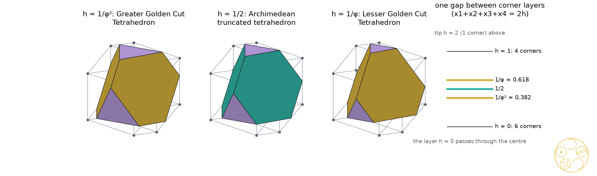
Figure 6.1. The tesseract seen along its long diagonal (1, 1, 1, 1): its 32 edges projected into the slicing hyperplane (grey), with the section x1 + x2 + x3 + x4 = 2h drawn inside at h = 1/φ², 1/2 and 1/φ: golden truncated triangles gold, regular hexagons teal, corner triangles lilac. Right: the three heights within the gap between the corner layers h = 0 (6 corners, through the centre) and h = 1 (4 corners); the tip is at h = 2.Figure 6.2. The sections as solids. Left three: the tesseract sections of Figure 6.1, the Greater Golden Cut Tetrahedron, the Archimedean truncated tetrahedron (teal: regular hexagons) and the Lesser Golden Cut Tetrahedron. Right two: the 120-cell's cell-first sections at 1/φ² and 1/φ of the gap from the icosidodecahedral layer, the Greater and Lesser Golden Cut Dodecahedra (golden truncated pentagons gold, corner triangles lilac).
So the golden heights of #88 come back. Measured across one gap between layers of corners, the golden pair sits at 1/φ² and 1/φ, either side of the Archimedean section at 1/2, in the 120-cell (dodecahedra; the truncated dodecahedron halfway is slice 120 of the #65 atlas), the tesseract (tetrahedra) and the 24-cell (octahedra; there the gap runs from the centre to a cell). The icosahedra of #88 sit at 1/φ² and 1/φ of the whole distance from the centre of the 120-cell to a cell. The 120-cell's corner-first tetrahedra break the pattern: the greater one is a layer of corners and the lesser one sits halfway to the next layer.
Icosaxes, now exact. #88 found Icosaxes a second time, as the 120-cell's corner-first section at φ/2 of the way from the centre to the tip (atlas height 11/8 + 5√5/8), but compared it in floating point. We redid this check exactly. The hyperplane meets no edge of the 120-cell in its interior: the section is the layer of 24 corners at that height. Matching these 24 corners with Icosaxes (exact coordinates from DICTO Solids v7) multiplies all 276 squared distances by the same factor 3 − √5 exactly, and the same check against the octahedron cut at x = 1/φ², #88's golden cut that is Icosaxes, holds as well. So Icosaxes is exactly a layer of corners of the 120-cell.
Not found. We sliced the 5-, 8-, 16-, 24-, 600- and 120-cell at 2,400 heights in each of their corner-, edge-, face- and cell-first directions and compared every section, scale-free, with 77 solids: #88's ten, White Knight, the 62 one-kind cuts of Section 4 and the Greater and Lesser Golden Cut Rhombic Dodecahedra and Rhombic Triacontahedra of Section 5 (floating point; every match then proved exactly as above). The search found #88's sections again and the sections of the Main Theorem. The Greater and Lesser Golden Cut Cubes were not found in these directions; Theorem A below proves that they are not sections of any regular four-dimensional solid, in any direction. None of the new solids of Sections 4 and 5 was found either. For the Greater and Lesser Golden Cut Snub Dodecahedra there is a reason within a wide class of directions: a section's symmetry contains the stabiliser of its direction in the symmetry group of the four-dimensional solid, and by Steinberg's theorem [9] that stabiliser is generated by the reflections it contains; if it contains the rotations of the snub dodecahedron it contains mirrors as well, so the section is not chiral.
Why not the cubes
Theorem A (why not the cubes). No hyperplane section of the 5-cell, the tesseract, the 16-cell, the 24-cell, the 600-cell or the 120-cell is a cube cut at its corners, a solid with 8 triangles and 6 octagons cut at any depth 0 < x < 1/2; in particular neither the Greater nor the Lesser Golden Cut Cube is one. More strongly, no section of the first five has an octagonal face, and no section of the 120-cell has a face that is an octagon with all its angles equal.
Proof. A hyperplane that only touches the solid leaves a cell or a smaller face, never a cut cube. Otherwise every face of the section is the section of one cell by a plane, the hyperplane meeting that cell's three-dimensional space in a plane, and its sides lie in different faces of the cell. A tetrahedron (the cells of the 5-cell, 16-cell and 600-cell) gives at most 4 sides and a cube (tesseract) at most 6. A regular octahedron (24-cell) also gives at most 6: take its corners ±ei and the plane a·x = c with c ≤ 0 (after a change of sign); a corner strictly below the plane has its opposite corner above it, so at most three corners lie below, one from each opposite pair and joined to each other by edges, and the corners of the section lie on the at most six edges from them to corners not below. The octagons of a cut cube have all their angles equal to 135°. In the 120-cell a face of a section is a plane section of a regular dodecahedron; with n the normal of the plane, a side lying in the dodecahedron's face with outward normal f runs along n × f. Four consecutive sides of an equiangular octagon lie in four faces with four different axes among the dodecahedron's six face axes, along lines turning by 45° at each step, so (n × f1)·(n × f3) = 0, (n × f2)·(n × f4) = 0 and 2[(n × f1)·(n × f2)]² = |n × f1|²|n × f2|², with no n × fi zero. For each of the 45 different choices of four axes (up to reversing and cycling the four) these equations in n, over Q(φ), have no solution, real or complex: a Gröbner basis of the system with the non-zero conditions is {1} (s9_why_not_cubes.py; a control with four directions 45° apart in a plane does have solutions). ∎
The cube-symmetric directions. Theorem A needs no symmetry, but the sections that inherit the full symmetry of the cube from the solid show what takes the cut cube's place. A section perpendicular to a direction d keeps the symmetries of the four-dimensional solid that fix d, and the central section also those that reverse it. By Steinberg's theorem [9] the stabiliser of d is generated by the reflections in it, so it is conjugate to a subgroup generated by some of the group's basic (simple) reflections, and we computed the orders of these subgroups exactly (s9, Part B). Only the tesseract and 16-cell (symmetry group of order 384, rank-three subgroups 48, 24, 16, 12) and the 24-cell (order 1,152: 48, 48, 12, 12) have directions whose stabiliser is the full cube group of order 48. The 5-cell (order 120: 24, 24, 12, 12) has none, and no subgroup of order 48 at all. The 600-cell and the 120-cell share the group of order 14,400 (rank-three subgroups 120, 24, 20, 12); no stabiliser has order divisible by 48, so the cube group fixes no direction. Their only sections that inherit the full symmetry of the cube are the central sections perpendicular to a corner of the 120-cell (the centre of a cell of the 600-cell), where the tetrahedral stabiliser of order 24 together with the reversal gives 48 symmetries. The 600-cell's 120 corners contain 24-cells (the 24 corners (±1, 0, 0, 0) and (±1/2, ±1/2, ±1/2, ±1/2) are one), but their cube-symmetric directions lose symmetry in the 600-cell: the 24-cell's corner direction (1, 0, 0, 0), a corner of the 600-cell, has the icosahedral stabiliser of order 120, which contains the pyritohedral group but not the cube group, and its cell direction (1, 1, 0, 0) is the direction of a corner of the 120-cell, with stabiliser of order 24. Table A gives the sequences, computed exactly from the corners and edges (s9, Part C).
solid
direction (stabiliser order)
sections from the centre outwards (exact)
tesseract (±1, ±1, ±1, ±1)
(1, 0, 0, 0), cell-first (48)
cubes at every height
tesseract
(1, 1, 1, 1), corner-first (24; 48 at the centre)
centre: regular octahedron; elsewhere tetrahedra cut at the corners (Main Theorem)
16-cell (±1, 0, 0, 0)
(1, 0, 0, 0), corner-first (48)
regular octahedra
16-cell
(1, 1, 1, 1), cell-first (24; 48 at the centre)
centre: cuboctahedron
24-cell (±1, ±1, 0, 0)
(1, 0, 0, 0), cell-first (48)
cuboctahedron at the centre; for 0 < x1 < 1 octahedra cut at the corners at (1 − x1)/(2 − x1) (6 squares, 8 hexagons; Icosaxes and Unborn Axes at x1 = 1/φ², 1/φ [1]); a regular octahedron (a cell) at x1 = 1
24-cell
(1, 1, 0, 0), corner-first (48)
rhombic dodecahedron at the centre; for 0 < x1 + x2 < 1 cubes cut along their edges, never at the corners (32 corners: 6 squares, 12 hexagons); a cube at x1 + x2 = 1, then smaller cubes to the corner
600-cell
(1, 0, 0, 0), corner-first (120, icosahedral)
sections with the full icosahedral symmetry (corner layers of 30, 12, 20, 12 and 1, icosahedra near the tip); faces triangles and quadrilaterals only
600-cell
(1, 1, 0, 0), cell-first (24; 48 at the centre)
centre: 84 corners, 152 triangles and 6 squares; elsewhere tetrahedral symmetry only
120-cell
(1, 0, 0, 0), cell-first (120, icosahedral)
the atlas of #65 [4], with the golden dodecahedra (Main Theorem); one gap has 30 octagons, none with equal angles
120-cell
(1, 1, 0, 0), corner-first (24; 48 at the centre)
centre: 78 corners, 24 pentagons and 20 hexagons; elsewhere tetrahedral symmetry only
5-cell
none
no section with the symmetry of the cube
Table A. The directions of the six regular four-dimensional solids whose sections have the full symmetry of the cube (the 600-cell's and 120-cell's icosahedral direction is added for comparison). Heights: x1 or x1 + x2 in the coordinates given (600-cell: corners (±1, 0, 0, 0), (±1/2, ±1/2, ±1/2, ±1/2) and the even permutations of (±φ, ±1, ±1/φ, 0)/2; 120-cell: its polar).
So among the regular four-dimensional solids the corner cuts with cube symmetry fall on the octahedron, in the 24-cell's cell-first sections, the family of Icosaxes and Unborn Axes, and the cube is only cut along its edges, in the 24-cell's corner-first sections. Cube and octahedron are duals, and in the regular solids only one of the pair gets its golden cuts; by Theorem A this holds for every direction, not only the symmetric ones.
Where the cubes live
DICTO proposed that there should be a place where a cut cube takes the octahedron's place. There is, one step away from the regular solids.
Theorem B (the golden cubes in the rectified tesseract). The rectified tesseract with corners all the permutations of (±1, ±1, ±1, 0) is the solid |xi| ≤ 1, |x1| + |x2| + |x3| + |x4| ≤ 3. Its section by x1 = h, 0 < h < 1, is the cube [−1, 1]³ cut at its corners at x = h/2. Hence the Greater Golden Cut Cube is its section at h = 2xG(4) = (√10 + 2√5 − 3√2 − 2)/2 ≈ 0.695886 and the Lesser Golden Cut Cube its section at h = 2xL(4) = (√10 + 3√2 − 2√5 − 2)/2 ≈ 0.466391; the sections run from the cube at the centre to a cuboctahedral cell at h = 1. In the same way the 24-cell with corners (±1, ±1, 0, 0), the rectified 16-cell, is |xi| ≤ 1, Σ|xi| ≤ 2, and its sections x1 = h are the octahedra cut at (1 − h)/(2 − h).
Proof. The solid is the tesseract [−1, 1]⁴ with each corner v = (±1, ±1, ±1, ±1) cut off by the hyperplane at distance 1 from v measured as |x − v|1 (in the orthant of v, |x − v|1 = 4 − Σ|xi|); these hyperplanes meet the edges at their midpoints, so its corners are the points with three coordinates ±1 and one 0. On x1 = h the conditions read |xj| ≤ 1 (j = 2, 3, 4) and |x2| + |x3| + |x4| ≤ 3 − h. The second cuts the corner (±1, ±1, ±1) of the cube by a plane perpendicular to its diagonal that meets the three edges at distance h from the corner, that is at x = h/2 of the edge 2, and h < 1 keeps the cuts apart. For the 24-cell the conditions on x1 = h are |xj| ≤ 1 and Σ|xj| ≤ 2 − h: the octahedron with corners (2 − h)ej cut by |xj| ≤ 1, and along an edge from (2 − h)e2 the coordinate x2 falls to 1 at the fraction (1 − h)/(2 − h). Both golden cube sections were also checked exactly, corner to corner, all 276 squared distances (s9, Part D; s10). ∎
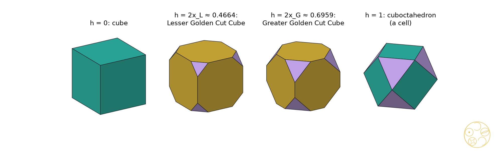
Figure 6.3. Sections x1 = h of the rectified tesseract (Theorem B): the cube at the centre, the Lesser and Greater Golden Cut Cubes at h = 2xL and 2xG, and the cuboctahedral cell at h = 1. Golden octagons gold, regular squares teal, corner triangles lilac.
The rectified tesseract is the tesseract cut by a 16-cell, so each of these sections is a cube cut by an octahedron; the 24-cell is the same pair in the other proportion, an octahedron cut by a cube. The cube's golden cuts are sections of the rectified tesseract and the octahedron's of the rectified 16-cell [1]: the duality of cube and octahedron returns one step beyond the regular solids. The rectified tesseract is not alone. We sliced all fifteen uniform polytopes of the tesseract family and all fifteen of the 24-cell family (nine of them different) in their cube-symmetric directions, every gap between layers of corners exactly (s9, Part D). Nine of them have golden cube sections (Table B); each was located exactly and matched corner to corner with the Golden Cut Cube.
uniform polytope (edge 1)
direction
depths x in the gap
Golden Cut Cubes at height (distance from the centre)
rectified tesseract
(1, 0, 0, 0)
0 to 1/2
Greater 0.492066, Lesser 0.329788
truncated tesseract
(1, 0, 0, 0)
0 to 1 − √2/2 ≈ 0.2929
Lesser 1.062984
bitruncated tesseract
(1, 0, 0, 0)
1/4 to 1/2
Greater 0.277025
cantitruncated tesseract
(1, 0, 0, 0)
(4 − √2)/14 to (8 − 2√2)/14
Greater 1.124969, Lesser 0.685666
rectified 24-cell
(1, 1, 0, 0)
1/2 to 0
Greater 1.233196, Lesser 1.347943
truncated 24-cell
(1, 1, 0, 0)
1/3 to 0
Lesser 1.695886
cantellated 24-cell
(1, 1, 0, 0)
1 − √2/2 to 1/2
Greater 2.105197
bitruncated 24-cell
(1, 0, 0, 0)
1/2 to 1 − √2/2
Greater 2.812303
cantitruncated 24-cell
(1, 1, 0, 0)
(4 + √2)/14 to (√2 − 1)/2; then to 1 − √2/2
Greater 3.045499, Lesser 3.356133 and 3.605197
Table B. Golden cube sections of the uniform polytopes of the tesseract and 24-cell families, in the directions of Table A (for the 24-cell family, (1, 0, 0, 0) and (1, 1, 0, 0) refer to the family's 24-cell with corners (±1, ±1, 0, 0)). Each height is exact in Q(√2, √5) (s9-why-not-cubes-D.json). The other uniform polytopes of these families have no golden cube section in these directions; some have cut cubes at one fixed depth (cantellated and runcitruncated tesseract: the truncated cube). For the fifteen uniform polytopes of the 120-cell and 600-cell family the only sections with cube symmetry are central (as for the 600-cell above); none has 24 corners (floating point).
DICTO's filling. DICTO proposed, from the Rhombiverse app, that cut cubes and small octahedra fill space. They do, at every depth:
Proposition C (cut cubes and octahedra). Cut every cube of the cubic lattice (edge 1) at every corner at the same depth x, 0 < x < 1/2. The eight pieces cut off round a lattice point p are the eight parts, one in each cube at p, of the regular octahedron |y − p|1 ≤ x, of edge x√2. So the cubes cut at x and these octahedra fill space, face to face, one octahedron per cube. At x = 1/(2 + √2) this is Andreini's filling by truncated cubes and octahedra [7]; at xG(4) and xL(4) it is the filling by Greater or Lesser Golden Cut Cubes and octahedra.
Proof. In a cube with corner p the cut plane at p is perpendicular to the diagonal and meets the three edges at distance x, so the piece cut off is the part of the cube with |y − p|1 ≤ x; the eight cubes at p meet the octahedron |y − p|1 ≤ x in its eight parts, one per octant, and x < 1/2 keeps the pieces of one cube apart. The volume per lattice point is 1 − 8x³/6 + 4x³/3 = 1. Checked exactly at both golden depths, with each corner triangle a face of its octahedron (s10_honeycomb_cubes.py). ∎
Corollary D (the golden cube fillings in four dimensions). The rectified tesseractic honeycomb, of rectified tesseracts |y − c|∞ ≤ 1, |y − c|1 ≤ 3 (c ∈ 2Z⁴) and 16-cells |y − v|1 ≤ 1 (v ∈ (1, 1, 1, 1) + 2Z⁴), cut by y1 = h, 0 < h < 1, is the filling of Proposition C at twice the size, with x = h/2. So the fillings by Greater and Lesser Golden Cut Cubes and octahedra are sections of a uniform four-dimensional honeycomb, at h = 2xG(4) and 2xL(4). No hyperplane section of the three regular honeycombs, by tesseracts, 16-cells or 24-cells, contains a cut cube.
Proof. The tesseracts [c − 1, c + 1] fill space; the corner regions |y − v|1 < 1 of each are disjoint, and the sixteen round a corner v make up the 16-cell at v, while what is left of each tesseract is the rectified tesseract of Theorem B. Only the tiles with c1 = 0 and v1 = 1 meet y1 = h: the first give the cut cubes of Theorem B, the second the octahedra |y′ − v′|1 ≤ h, whose faces are the corner triangles of the cut cubes. Every tile of a section of a regular honeycomb is a section of a tesseract, 16-cell or 24-cell, which by Theorem A has no octagonal face. Checked exactly (s10: corner-to-corner matches, face-to-face fit, and the volume 16 − 16/24 + 16/24 = 16 for each point of 2Z⁴). ∎
4. Archimedean solids: one golden depth per kind of face
Theorem 1. The twelve numbers xG(n), xL(n) for n = 3, 4, 5, 6, 8, 10 are all different. Hence a solid with unit edges, regular faces and corners on one sphere has a cut that makes every face golden if and only if all its faces have the same number of sides, and then it has exactly two. In particular none of the 13 Archimedean solids, nor the elongated square gyrobicupola, has a golden cut; each kind of face alone has its own two (Table 6.1), four or six per solid.
Proof. Both xG and xL fall strictly as cn grows, and cn grows with n, so different n give different values within each list. xG(n) = xL(m) means cn = φ²cm ≥ φ² > 2 > cn, which is impossible. All 66 pairs were also checked exactly, and each of the 62 one-kind cuts of the 14 solids was built and checked to be a convex truncation with the expected faces. ∎
At xG(n) a face with m sides has ratio (corner side over original side) φcm/cn; at xL(n) it has cm/(φcn). It is 1, a regular 2m-gon, exactly when cn = φcm or cm = φcn.
Theorem 2 (golden or regular: the DICTO Golden-Regular Cuts). Only the icosidodecahedron and the snub dodecahedron have cuts that make every face golden or regular, with at least one kind golden. Each has exactly two: at x = 1/(φ√5) = (5 − √5)/10, the Lesser Golden Cut Icosidodecahedron and the Lesser Golden Cut Snub Dodecahedron, the triangles become truncated triangles of ratio φ (original sides long) and the pentagons regular decagons; at x = 1/3, the deeper cut, the Greater Golden Cut Icosidodecahedron and the Greater Golden Cut Snub Dodecahedron, the pentagons become golden truncated pentagons (corner sides long) and the triangles regular hexagons. These six solids, the two snub ones in left and right hands, form DICTO's new family, the DICTO Golden-Regular Cuts: every face golden or regular.
Proof. We need cm = φcn for two face sizes of the solid. With n ≥ 4 this needs cm ≥ φ√2 > 2, impossible; with n = 3 it needs cos(π/m) = φ/2 = cos 36°, so m = 5. The solids with triangles and pentagons are the icosidodecahedron, the snub dodecahedron and the rhombicosidodecahedron, and the last fails on its squares (ratio √2 or 1/√2 at the two cuts). The regular-hexagon cut of a triangle, x = 1/3, is the greater golden cut of the pentagon, and the regular-decagon cut of a pentagon, x = 1/(φ + 2), is the lesser golden cut of the triangle. ∎ Exact check from coordinates in Q(√5): the Lesser Golden Cut Icosidodecahedron has 60 edges of length x and 120 of length φx, its 30 corner faces are golden rectangles, and its volume is 13/2 + 97√5/30; the Greater Golden Cut Icosidodecahedron has 120 edges of length 1/3 and 60 of length φ/3, and volume 395/54 + 17√5/6.
Two new DICTO-GTT-Solids. In both lesser cuts each triangle becomes a truncated triangle with original sides 1 − 2x and corner sides x, and at x = (5 − √5)/10 the ratio (1 − 2x)/x is exactly φ. This was checked exactly in Q(√5): the Lesser Golden Cut Icosidodecahedron has the two squared edge lengths 1/5 and (3 − √5)/10, in ratio exactly φ², and the triangles of the Lesser Golden Cut Snub Dodecahedron have ratio exactly (1 + √5)/2. That is the strict rule of the DICTO-GTT-Solids, single solids whose truncated triangles have ratio exactly φ [1], and DICTO added them to the DICTO-GTT-Solids, which are now Icosaxes, Unborn Axes, White Knight, the Lesser Golden Cut Icosidodecahedron and the Lesser Golden Cut Snub Dodecahedron (in both hands). The greater cuts have regular hexagons in place of truncated triangles, and the golden rhombic cuts of Section 5 have golden octagons, so they do not join.
n
xG(n), corner sides long
xL(n), original sides long
solids with n-gons
3
(3 − √5)/2 = 1/φ² ≈ 0.381966
(5 − √5)/10 = 1/(φ√5) ≈ 0.276393
tT, CO, tC, RCO, sC, ID, tD, RID, sD, ESG
4
(√10 + 2√5 − 3√2 − 2)/4 ≈ 0.347943
(√10 + 3√2 − 2√5 − 2)/4 ≈ 0.233196
CO, tO, RCO, tCO, sC, RID, tID, ESG
5
1/3
(7 − √5)/22 ≈ 0.216542
ID, tI, RID, sD
6
(2 + √15 + 6√5 − 7√3)/22 ≈ 0.325683
(2 + √15 + 7√3 − 6√5)/22 ≈ 0.208224
tT, tO, tCO, tI, tID
8
φ/(√(2 + √2) + 2φ) ≈ 0.318271
1/(φ√(2 + √2) + 2) ≈ 0.200411
tC, tCO
10
φ/(√(φ√5) + 2φ) ≈ 0.314904
1/(φ√(φ√5) + 2) ≈ 0.196940
tD, tID
Table 6.1. The golden depth of each kind of face (edge 1). No Archimedean solid has a cut making all faces golden; its one-kind golden cuts are the rows of its face sizes. tT truncated tetrahedron, CO cuboctahedron, tC truncated cube, tO truncated octahedron, RCO rhombicuboctahedron, tCO truncated cuboctahedron, sC snub cube, ID icosidodecahedron, tD truncated dodecahedron, tI truncated icosahedron, RID rhombicosidodecahedron, tID truncated icosidodecahedron, sD snub dodecahedron, ESG elongated square gyrobicupola.
Figure 6.4. The DICTO Golden-Regular Cuts of Theorem 2, top: the Lesser and Greater Golden Cut Icosidodecahedra; bottom: the Lesser and Greater Golden Cut Snub Dodecahedra (one hand shown). Golden faces gold, regular faces teal, corner faces lilac. Top right, DICTO's White Knight for comparison. Bottom right: the golden depths of Table 6.1, greater (violet) and lesser (teal), all different, with the depth of the regular 2n-gon (grey); the grey point at n = 3 (x = 1/3) is the greater golden depth of the pentagon, and the grey point at n = 5 is the lesser golden depth of the triangle (Theorem 2).
Not White Knight. The Lesser Golden Cut Icosidodecahedron has White Knight's face pattern exactly: 12 regular decagons, 20 truncated triangles of ratio φ and 30 golden rectangles. It is not White Knight. In White Knight the long sides of each truncated triangle meet the rectangles and the short sides meet the decagons (120 short and 60 long edges); in the Lesser Golden Cut Icosidodecahedron it is the other way round (60 short, 120 long). White Knight is a 120-cell section [4]; the Lesser Golden Cut Icosidodecahedron was not found among the sections (Section 3).
Zefiro. Zefiro [5] cut the icosidodecahedron with a rhombic triacontahedron and marked the stage where the pentagons become regular decagons, d = (4τ + 3)/10, and the stage where the triangles become regular hexagons, d = (τ + 4)/6 (τ = φ). Since the plane distance is d/R = 1 − x/(2φ²) here, these are exactly the Lesser and Greater Golden Cut Icosidodecahedra of Theorem 2 (0.947214 and 0.936339). The two solids are Zefiro's; we did not find their golden faces stated there. They keep DICTO's names, found independently, with Zefiro credited; the golden reading and the rule of Theorem 2 are new within our checks.
5. Catalan solids: only the two rhombic solids
The corners of a Catalan solid fall into two or three orbits under its symmetries, and its faces are not regular. The edges at one corner are alike, so a plane perpendicular to the centre–corner line cuts them all at the same distance yo, which may differ between orbits o. We call a face golden when it becomes a 2n-gon whose corner sides all have one length a and whose original sides all have one length b, with a/b = φ (greater) or 1/φ (lesser). The conditions are linear in the yo, a and b.
Theorem 3. Of the 13 Catalan solids, only the rhombic dodecahedron and the rhombic triacontahedron have golden cuts (one cut depth per orbit of corners), and each has exactly two. For a rhombus of side 1 with acute angle α, with K = (1/sin(α/2) + 1/cos(α/2))/2, they are b = 1/(1 + φK), a = φb (greater) and b = 1/(1 + K/φ), a = b/φ (lesser), cut at ysharp = a/(2 sin(α/2)) and yblunt = a/(2 cos(α/2)); K = (2√3 + √6)/4 for the rhombic dodecahedron and K = φ√(2 + φ)/2 for the rhombic triacontahedron (Table 6.2). The greater cuts are the Greater Golden Cut Rhombic Dodecahedron and the Greater Golden Cut Rhombic Triacontahedron, the lesser cuts the Lesser Golden Cut Rhombic Dodecahedron and the Lesser Golden Cut Rhombic Triacontahedron; the four join the DICTO-Kepler golden truncations.
Proof. On a rhombus face the corner sides are 2ysharp sin(α/2) and 2yblunt cos(α/2), and each original side is 1 − ysharp − yblunt. Setting both corner sides equal to a gives b = 1 − aK, a one-parameter family of alternating cuts, and the two golden conditions a = φb and b = φa give the stated values. For the other eleven Catalan solids, whose faces have two or three edge lengths (triangles, kites, pentagons), the alternating conditions fix a and b. Solved exactly over the field of the solid (sympy, from exact coordinates in Q(√2) or Q(√5)), they have one solution with b < 0, so the cuts would overlap, for the triakis tetrahedron, triakis octahedron, tetrakis hexahedron, deltoidal icositetrahedron, triakis icosahedron, pentakis dodecahedron and deltoidal hexecontahedron, and no solution for the disdyakis dodecahedron and disdyakis triacontahedron. For the pentagonal icositetrahedron and the pentagonal hexecontahedron the same equations were solved in floating point, with b clearly negative. Both golden cuts of each rhombic solid were checked exactly, corner by corner. ∎
Greater is deeper. A cut with one depth per orbit of corners has two depths here, ysharp and yblunt, so “deeper” needs a measure. We compare the depth at each kind of corner: both depths are proportional to a, and a is larger in the greater cut, so the greater cut is deeper at both kinds of corner (Table 6.2: 0.413 > 0.280 and 0.292 > 0.198 for the rhombic dodecahedron; 0.441 > 0.301 and 0.273 > 0.186 for the rhombic triacontahedron). It also removes more volume (it leaves 2.94509 against 3.03758, and 11.9873 against 12.2076). The measures agree, so Greater, for the deeper cut as in #88, is unambiguous.
solid
Greater Golden Cut (a = φb)
Lesser Golden Cut (a = b/φ)
faces after the cut
rhombic dodecahedron (cos α = 1/3)
a = 0.477001, b = 0.294803; y = 0.413095, 0.292102; volume 2.94509
a = 0.322952, b = 0.522548; y = 0.279685, 0.197767; volume 3.03758
12 octagons, 6 squares, 8 triangles
rhombic triacontahedron (tan(α/2) = 1/φ)
a = 0.463634, b = 0.286541; y = 0.440942, 0.272517; volume 11.9873
b = 2/(2 + √(2 + φ)) = 0.512543, a = 0.316769; y = 0.301265, 0.186192; volume 12.2076
30 octagons, 12 pentagons, 20 triangles
Table 6.2. The Greater and Lesser Golden Cut Rhombic Dodecahedra and Rhombic Triacontahedra, members of the DICTO-Kepler golden truncations (edge 1; y = ysharp, yblunt). Every corner face is regular with side a. The cuts with one cut depth at every corner, or with every plane at one distance from the centre, are special cases of the alternating family; neither golden cut is one of them, so under those stricter definitions no Catalan solid has a golden cut.
Figure 6.5. The Greater and Lesser Golden Cut Rhombic Dodecahedra and Rhombic Triacontahedra: the octagons, sides alternating in ratio φ, in gold; the regular corner faces (squares and triangles; pentagons and triangles) in lilac.
6. Kepler–Poinsot star polyhedra
The four Kepler–Poinsot polyhedra are star polyhedra, not solids: their faces pass through each other and they do not bound a single region. They do have regular faces {p}, equal edges and all corners on one sphere [3], so the definitions of Section 2 apply unchanged with c = 2cos(π/p); for the pentagram, p = 5/2 and c = 2cos 72° = 1/φ.
Proposition 4. Each Kepler–Poinsot star polyhedron has exactly two golden cuts: the great dodecahedron at 1/3 (greater) and (7 − √5)/22 (lesser), as the dodecahedron; the great icosahedron at 1/φ² (greater) and 1/(φ√5) (lesser), as the icosahedron; and the small and the great stellated dodecahedron at (7 + √5)/22 (greater) and 1/3 (lesser).
Proof. The formulas of Section 2 with c5 = φ, c3 = 1 and c5/2 = 1/φ; for the pentagram, xG = φ/(1/φ + 2φ) = (7 + √5)/22 and xL = 1/(1 + 2) = 1/3. ∎
DICTO named the eight: the Greater and Lesser Golden Cut Great Dodecahedron, Great Icosahedron, Small Stellated Dodecahedron and Great Stellated Dodecahedron. In each pair the greater cut is the deeper one, with the larger x along every edge (1/3 > 0.2165, 0.3820 > 0.2764, and 0.4198 > 1/3 for both stellated dodecahedra). As star polyhedra they belong to no family.
The pentagram's two cuts are the conjugates of the pentagon's: replacing √5 by −√5 turns the pentagon's lesser cut (7 − √5)/22 into the pentagram's greater cut (7 + √5)/22 and leaves 1/3 in place, the greater cut of the pentagon and the lesser cut of the pentagram. The deeper pentagram cut, (7 + √5)/22 ≈ 0.4198 of the edge from each tip, goes beyond the pentagram's crossing points (at 1/φ² ≈ 0.3820); the lighter one stops short of them. The eight named cuts are star polyhedra too, like the uniform truncated great dodecahedron and truncated great icosahedron; as sections of convex four-dimensional solids are convex, none of them can be a section.
Figure 6.6. The golden faces of the dodecahedral star polyhedra: the pentagon (Greater and Lesser Golden Cut Dodecahedra and Great Dodecahedra) and the pentagram (Greater and Lesser Golden Cut Small and Great Stellated Dodecahedra), each cut at its two golden depths; corner sides in violet, the uncut polygon dotted. The same x = 1/3 is the greater cut of the pentagon and the lesser cut of the pentagram.
Star polytopes. DICTO proposed looking for these eight golden star polyhedra among the sections of the ten regular star polytopes of Schläfli and Hess [3], as the golden dodecahedra appear in the 120-cell. Nine of them have the 120 corners of the 600-cell and one, {5/2, 3, 3}, the 600 corners of the 120-cell; each takes one class of chords as its edges (12, 20 or 4 at each corner), and the corners of a section are the points where these edges cross the hyperplane. A section with the full symmetry of the icosahedron needs a direction whose stabiliser contains it, and in the group of the 600-cell and 120-cell only the stabiliser of a corner of the 600-cell does (Section 3). We searched that direction at 3,000 heights for every chord class of both sets of corners, 38 classes, which include the edges of all ten star polytopes (for {5/2, 3, 3} the class whose edges meet at 36°, the angle of a pentagram), and compared the corners of each section, scale-free, with those of the eight golden cuts of Proposition 4; the central sections with cube symmetry were compared with the Golden Cut Cubes. No section of a star polytope matched, even as a set of corners, which any match of edges and faces requires (floating point; s11_star_polytopes.py). So the golden star polyhedra, and the golden cubes, are not sections of the regular star polytopes in these directions. Two classes that are not edges of a star polytope did match some corner sets: the 120-cell's own edges, whose sections are convex, and a chord class that is the edge set of no regular polytope.
7. Filling space
A light, constructive check of positive cases only. Cut every cell of a face-to-face filling the same way, the same distance along every edge at each kind of corner. The caps cut from the cells around a corner of the filling then close up into one hole, and cut cells and holes together fill space. We checked each hole by volume (number of cells at the corner × cap volume = volume of the hole):
Greater (Lesser) Golden Cut Cubes + regular octahedra of edge √2x, from the filling by cubes: DICTO's filling, exact at every depth (Proposition C), and a section of the rectified tesseractic honeycomb (Corollary D);
Greater (Lesser) Golden Cut Tetrahedra + Icosaxes (Unborn Axes) + cuboctahedra of edge x, from the filling by regular tetrahedra and octahedra (the tetrahedron's and the octahedron's golden cuts have the same x, since both have triangle faces; per lattice point 2 tetrahedra, 1 octahedron, 1 cuboctahedron);
Greater (Lesser) Golden Cut Rhombic Dodecahedra + cubes + regular tetrahedra, all of edge a (Table 6.2), from the filling by rhombic dodecahedra: one cube and two tetrahedra per cell;
truncated octahedra with one kind of face golden (four cuts, Table 6.1, n = 4 and 6) + tetragonal disphenoids with edges √2x and √3x, from Kelvin's filling by truncated octahedra: six disphenoids per cell.
All four start from fillings in Andreini's list [7], and the cut cells with their holes are the golden members of these truncation patterns; we claim no new filling. No new pair fills space on its own the way Icosaxes and Unborn Axes do [6].
8. What is known and what is new
Known. Truncation at any depth is classical. The series of sections of the regular four-dimensional solids are Alicia Boole Stott's [2], who drew them for all six; Coxeter [3] sets out the regular polytopes, their sections and the Kepler–Poinsot polyhedra. The 120-cell's exact atlas of sections is #65's [4]. The Greater and Lesser Golden Cut Icosidodecahedra of Theorem 2 are Zefiro's regular-decagon and regular-hexagon stages [5]; Zefiro [10] also cut the cubic Archimedean solids by the rhombic dodecahedron, cube and octahedron, looking for regular faces, without golden ratios. The golden truncated octahedra are Koca et al.'s non-regular truncated octahedra at τ and 1/τ [8], as #88 noted. The fillings of Section 7 go back to Andreini [7]. The rectified tesseract, the uniform polytopes of Table B and the rectified tesseractic honeycomb are classical (Boole Stott [11] deduced the semiregular polytopes and space fillings from the regular ones; Coxeter [3]), and the sections of Theorem B follow at once from their inequalities; the ten regular star polytopes are Schläfli's and Hess's [3]. Steinberg's theorem [9] is used for the stabilisers.
New within these checks. The tesseract sections of the Main Theorem and the 120-cell sections of the golden dodecahedra and tetrahedra, so that four of the five golden pairs are sections; the exact proof that Icosaxes is a layer of corners of the 120-cell; the rule of Theorem 1 (golden cuts need one face size); the golden-or-regular rule of Theorem 2, the DICTO Golden-Regular Cuts, with the golden reading of Zefiro's two stages and the Greater and Lesser Golden Cut Snub Dodecahedra; the two new DICTO-GTT-Solids; the Catalan result of Theorem 3 with the Greater and Lesser Golden Cut Rhombic Dodecahedra and Rhombic Triacontahedra, new DICTO-Kepler golden truncations; the golden cuts of the Kepler–Poinsot star polyhedra and their conjugate pairing; and the face swap that tells the Lesser Golden Cut Icosidodecahedron from White Knight; Theorem A (no section of a regular four-dimensional solid is a cut cube, with the equiangular-octagon argument for the 120-cell) and the exact table of cube-symmetric sections; the golden cubes as sections of the rectified tesseract and of the eight other uniform polytopes of Table B (we found no source stating them); DICTO's filling as a section of the rectified tesseractic honeycomb at the golden heights; and the negative star-polytope search. Where an earlier source describes one of these solids, it stays in DICTO's family, found independently, with the source credited.
Sources checked (3 November 2026). Reference library on dicto-big-brother (cited/ manifest and papers/ listing; searches: truncation, Archimedean, Catalan, semi-uniform, Kepler–Poinsot, golden; hits: Koca et al. 2015, Andreini 1905, Boole Stott 1900, Koca group papers on H3 and H4 orbits). Web: golden-ratio truncation of Archimedean solids; truncated icosidodecahedron with golden rectangles; truncated rhombic dodecahedron and triacontahedron; Zefiro's two 2011 papers (text read; not all figures); Koca's quaternionic H3 orbit papers; Conway–Hart truncation (free depth, no golden criterion found). Not found: golden-ratio truncation of Archimedean, Catalan or Kepler–Poinsot solids as such. Coxeter [3] is cited for its well-known contents; it was not re-read for this chapter. For Theorems A and B the library's Boole Stott entries were checked; her 1910 paper [11] is cited by its title and was not re-read; a web search on sections of the rectified tesseract was not made.
9. Conclusion
The golden heights 1/φ² and 1/φ of #88 return in the tesseract, where the golden tetrahedra sit either side of the Archimedean section at half height, and in the 120-cell, where the golden dodecahedra sit at the same fractions of a gap between layers of corners. With #88, four of the five Platonic golden pairs are sections of regular four-dimensional solids. The golden cubes cannot be (Theorem A): in the regular solids the corner cuts with cube symmetry fall on the octahedron, and the cube is only cut along its edges. They are sections of the rectified tesseract instead, as the golden octahedra are of the rectified 16-cell, and DICTO's filling of cut cubes and octahedra is a section of the rectified tesseractic honeycomb; so all five golden pairs are slices of four-dimensional solids, four of them regular. Beyond Plato, golden cuts need faces of one size: the Archimedean solids have none, the icosidodecahedron and snub dodecahedron come closest with every face golden or regular, the DICTO Golden-Regular Cuts, whose two lesser members DICTO added to the DICTO-GTT-Solids; among the Catalan solids only the two rhombic solids have a golden pair, new DICTO-Kepler golden truncations, and each Kepler–Poinsot star polyhedron has one too.
Why the cubes stand apart. The rule of #88 cuts an n-gon face at depths set by cn = 2cos(π/n): c3 = 1 and c5 = φ lie in Q(√5), but c4 = √2 does not. The golden cuts of the dodecahedron, icosahedron, tetrahedron and octahedron therefore live in Q(√5), the field of every golden structure (the 120-cell and 600-cell, the icosahedral cut-and-project from six dimensions, the projection of E8), while the Golden Cut Cubes need Q(√2, √5): a point set over Q(√5), or any section or shadow of it, cannot contain them. A companion study [12] proves this field obstruction, finds that the Greater and Lesser Golden Cut Cubes are Galois conjugates (their depths share the minimal polynomial z⁴ − 8z³ + 4z − 1), and shows the other side of the pair: in the six-dimensional product of a cube and an octahedron, which DICTO proposed as the natural home of the pair, the slice at the Fibonacci slope φ is Icosaxes exactly, cast by the lattice's own roots, while the same test on the cube side selects the silver ratio 1 + √2, the Archimedean truncated cube. The cubes meet the golden ratio only where √2 and √5 cross, which is why their home is the rectified tesseract rather than a regular solid.
Data and code. studies/2026-11-03-golden-cuts-beyond-plato: gcb.py and gcb_exact.py (solids, cuts, exact duals); s1_platonic_archimedean.py (#88 reproduced, Theorems 1 and 2; 235 checks); s2_catalan.py and s2b_rhombic_exact.py (Theorem 3; 51 and 12 checks); s3_kepler_poinsot.py (Proposition 4; 24 checks); s4_sections4d.py (the search of Section 3, floating point); s5_exact4d.py (Main Theorem, sections located and compared exactly; 7 checks); s7_icosaxes_exact.py (Icosaxes in the 120-cell, exact; 10 checks); s8_sections_bijection.py (Main Theorem (b), (c): exact matchings of corners; 4 checks); s6_spacefill.py (Section 7; 10 checks); cubes_lib.py (exact field Q(√2, √5), reflection groups, sections); s9_why_not_cubes.py (Theorems A and B, Tables A and B: Gröbner bases, group and stabiliser orders, exact section sequences, uniform polytopes; 36 checks); s10_honeycomb_cubes.py (Proposition C, Corollary D; 16 checks); s11_star_polytopes.py (star polytopes, floating point; 4 checks); figs.py, fig5_tesseract.py and fig6_cubes.py (figures). The six-dimensional results of Section 9 are in studies/2026-11-03-6d-golden-cubes (61 exact checks). All checks pass. The 120-cell is the exact atlas of #65 [4]. Run on dicto-big-brother.
References
[1] DICTO, "Every Platonic Solid Has Exactly Two Golden Cuts: the DICTO-Kepler Golden Truncations and the DICTO-GTT-Solids", paper #88, DICTO DOI: 10.5281/zenodo.23896439 (2026).
[2] A. Boole Stott, "On certain series of sections of the regular four-dimensional hypersolids", Verhandelingen der Koninklijke Akademie van Wetenschappen te Amsterdam, Eerste Sectie, 7, no. 3 (1900).
[3] H. S. M. Coxeter, Regular Polytopes, 3rd ed., Dover, New York (1973).
[4] DICTO, "The Red Queen 120-cell: Aristotle's five pyramids as the cores of the regular four-dimensional solids", paper #65, DICTO DOI: 10.5281/zenodo.23716140 (2026).
[5] L. Zefiro, "Vertex- and edge-truncation of the Platonic and Archimedean solids leading to vertex-transitive polyhedra", Visual Mathematics 13(2) (2011), https://www.mi.sanu.ac.rs/vismath/zefirosept2011/_truncation_Archimedean_polyhedra.htm.
[6] DICTO, "The Golden Split: Icosahedra, Unborns and AXE Become Two Convex Space-Fillers", paper #48, DICTO DOI: 10.5281/zenodo.23596362 (2026).
[7] A. Andreini, "Sulle reti di poliedri regolari e semiregolari e sulle corrispondenti reti correlative", Memorie della Società Italiana delle Scienze, Serie 3, 14 (1905).
[8] N. O. Koca, M. Koca, A. Al-Mukhaini, A. Al-Qanobi, "Quaternionic representations of the pyritohedral group, related polyhedra and lattices", arXiv:1506.04600 (2015); published as "Symmetry of the pyritohedron and lattices", SQU Journal for Science 21(2) (2016) 139–149.
[9] R. Steinberg, "Differential equations invariant under finite reflection groups", Transactions of the American Mathematical Society 112 (1964) 392–400.
[10] L. Zefiro, "Regular-shaped faces in solids with cubic symmetry derived from truncation processes by rhomb-dodecahedron or cube", Visual Mathematics (2011), https://www.mi.sanu.ac.rs/vismath/zefirooct2011/.
[11] A. Boole Stott, "Geometrical deduction of semiregular from regular polytopes and space fillings", Verhandelingen der Koninklijke Akademie van Wetenschappen te Amsterdam, Eerste Sectie, 11, no. 1 (1910).
[12] DICTO, "Six Dimensions and the Golden Cut Cubes", study note, 3 November 2026, studies/2026-11-03-6d-golden-cubes (unpublished; scripts and exact checks in the research repository).
Chapter 7 · Golden on the Octahedron, Silver on the Cube
Golden structures live in the field of √5 and the Golden Cut Cubes need √2 as well, so no golden structure in any dimension holds them; in the six-dimensional product of a cube and an octahedron the lattice selects Icosaxes at the golden slope and the truncated cube at the silver one
From paper #90, version 1 · DICTO DOI: 10.5281/zenodo.23931136
The golden ratio has a home in higher dimensions: the six-dimensional cube, the four-dimensional 120-cell and the eight-dimensional E8 lattice all carry it, and quasicrystals are their shadows. Four of the five golden pairs of the regular solids fit there. The two Golden Cut Cubes do not, and we prove that they never can. Their depth needs the square root of two, the diagonal of a square, together with the square root of five, and nothing built from the golden ratio alone ever produces the square root of two. DICTO proposed six dimensions as the natural home of the cube and octahedron as a pair. There the octahedron's golden pair comes out by itself: cut the product of a cube and an octahedron at the Fibonacci slope and you get Icosaxes, exactly where the shortest vectors of the lattice cast their shadow. Ask the same of the cube and the answer is the silver ratio, 1 + √2, the Archimedean truncated cube.
Abstract. #88 proved that each Platonic solid has exactly two golden cuts and #89 found all five golden pairs as slices of four-dimensional solids, the cubes only in the rectified tesseract, which passes through every corner-cut cube. Our main theorem is a field obstruction. The distance field of a point set, the field generated by the ratios of its squared distances, is Q(√5) for the golden cuts of the dodecahedron, icosahedron, tetrahedron and octahedron and Q(√2, √5), of degree 4, for both Golden Cut Cubes; hence no point set with coordinates in Q(√5), and no section or orthogonal projection of one over Q(√5), contains a similar copy of a Golden Cut Cube. This covers the icosahedral cut-and-project of Z6 with all its tiles and windows, the projection of E8 to H4 and its sections, and the sections of the regular four-dimensional solids by hyperplanes defined over Q(√5); the same holds over Q(√2). The two Golden Cut Cubes are Galois twins: their depths t = 1 − 2x share the minimal polynomial z4 − 8z3 + 4z − 1. Every golden cut lifts to Z6 (corner module of rank 6), but only the eight golden ones are stable under a power of φ. No three-dimensional section of the 6-cube, nor any tile of a section of its honeycomb, is a cut cube of any depth. DICTO proposed the product of cube and octahedron as the six-dimensional home of the pair: its sections by the symmetric flats y = x/μ sweep from the octahedron through Icosaxes and Unborn Axes, the cuboctahedron and both Golden Cut Cubes to the cube; requiring the cut to equal the shadow of a lattice orbit selects μ = φ, the Fibonacci slope, where the mixed roots of D6 cast Icosaxes point for point, and on the cube side the silver ratio 1 + √2; no lattice orbit selects a Golden Cut Cube. All results are exact in Q(√2, √5) except where stated.
1. Introduction
A golden cut of a Platonic solid cuts every corner equally so that each face becomes a truncated polygon whose two side lengths are in the golden ratio φ; #88 proved that each Platonic solid has exactly two, the Greater (deeper) and the Lesser [1]. #89 found all five pairs as slices of four-dimensional solids, four of them regular, and proved that the cubes are not slices of any regular four-dimensional solid; they are slices of the rectified tesseract, which passes through every corner-cut cube, so there the golden depth is not singled out [2]. #89 closed with the reason, which this chapter proves: the square's diagonal √2.
DICTO proposed that six dimensions would be a natural home for the cube and octahedron as a pair, since the 6-cube's symmetry group B6 contains the cube's group and Z6 projects onto the six axes of the icosahedron, the classical cut-and-project origin of icosahedral quasicrystals [3–5]. We follow the proposal in three steps. The main theorem (Section 3) is the field obstruction: the Golden Cut Cubes need Q(√2, √5), and no golden structure supplies √2. Sections 4 and 5 treat the Galois twins and the 6-cube. Sections 6 and 7 treat the product of a cube and an octahedron: here the octahedron's golden pair appears at golden heights, and the lattice selects Icosaxes at the Fibonacci slope and the truncated cube at the silver ratio.
A trivial higher-dimensional home always exists: a centrally symmetric solid with k pairs of parallel faces is a section of the k-cube, so every cut cube (7 pairs) is a section of the 7-cube. We look instead for a natural structure in which the golden depth comes out by itself.
2. Definitions and the known six-dimensional picture
A cube with unit edges cut at x loses every corner to a plane meeting the three edges there at distance x; each square becomes an octagon with corner sides √2·x and original sides 1 − 2x. It is golden when long over short is φ: xG = φ/(√2 + 2φ) ≈ 0.347943 (Greater Golden Cut Cube) and xL = 1/(√2φ + 2) ≈ 0.233196 (Lesser) [1]. We put the cube at [−1, 1]3: the corners of the cut cube are then the signed permutations of (1, 1, t), t = 1 − 2x, and the solid is the cube cut by the octahedron |x1| + |x2| + |x3| ≤ μ with μ = 2 + t. The golden values are tG = 1/(1 + √2φ) and tL = 1/(1 + √2/φ). The octahedron's golden pair are DICTO's Icosaxes (Greater) and Unborn Axes (Lesser) [1].
For a finite set of points, its distance field is the field generated by all ratios of squared distances between its points. It does not change under rotation, reflection or scaling, so it is a property of the shape.
The known picture, rebuilt exactly (s1, 13 checks). The six icosahedral axes ai, one for each pair of opposite corners of the icosahedron (0, ±1, ±φ) and its cyclic shifts, have Gram matrix entries 1 and ±1/√5 after normalising; P = G/2 is the projector of R6 onto physical space and I − P, its Galois conjugate (√5 ↦ −√5), the projector onto internal space. The 6-cube's shadows in both spaces are rhombic triacontahedra (32 corners, 30 rhombi with diagonals in ratio φ); its central section by physical space is the regular dodecahedron (Figure 7.1a, b). The signed permutations of R6 that keep physical space form a group of order 120, the full icosahedral group. The 120 unit icosians span a lattice of rank 8 which, with the norm 2(a + c) for |q|2 = a + c√5, has Gram determinant 1 and is even, so it is E8; its 240 roots are the units and the units divided by φ, whose H4 shadows are two 600-cells with radii in ratio φ [6, 7]. All of these coordinates lie in Q(√5).
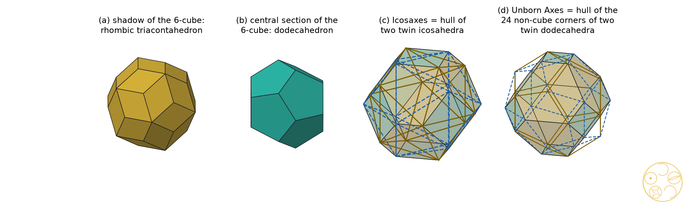
Figure 7.1. (a) The shadow of the 6-cube in physical space, a rhombic triacontahedron. (b) Its central section by physical space, a regular dodecahedron. (c) Icosaxes is the hull of the corners of the two pyritohedral twin icosahedra (gold solid lines and blue dashed lines), the compound of two icosahedra. (d) Unborn Axes is the hull of the 24 corners of the two twin dodecahedra that are not corners of the cube (Proposition 5).
3. Main theorem: the field obstruction
Main Theorem (field obstruction). (a) The distance field of the Greater and Lesser Golden Cut Dodecahedra, Icosahedra, Tetrahedra and Octahedra is Q(√5). The distance field of the Greater and of the Lesser Golden Cut Cube is Q(√2, √5), of degree 4 over Q.
(b) Let S be a set of points with coordinates in Q(√5) in an orthonormal frame of Rn, any n. No subset of S, of a section of S by a flat defined over Q(√5), or of an orthogonal projection of S onto a subspace defined over Q(√5), is similar to the corner set of a Golden Cut Cube.
(c) In particular no Golden Cut Cube occurs in the icosahedral cut-and-project of Z6 (in any lattice shadow, tile, window or model set), in the projection of E8 to H4 or its sections, or in a section of a regular four-dimensional solid by a hyperplane defined over Q(√5). The same holds with Q(√2) in place of Q(√5), so octagonal structures fail as well.
Proof. (a) For the cut cube with corners at the signed permutations of (1, 1, t), the squared distances include 4, 4t2 and 2(1 − t)2; their ratios give t2 and then t, and every squared distance is a polynomial in t with rational coefficients, so the distance field is Q(t). The octagon's corner side over original side is √2·x/(1 − 2x) = (1 − t)/(√2 t), so the golden condition reads (1 − t)/t = √2φ±1, and Q(t) = Q(√2φ). Now (√2φ)2 = 2φ + 2, so φ ∈ Q(√2φ), and then √2 ∈ Q(√2φ); hence Q(t) = Q(√2, √5), of degree 4. For the other eight cuts the solids have coordinates in Q(√5) and the cut fractions 1/3, (7 − √5)/22, 1/φ2 and 1/(φ√5) lie in Q(√5); all their squared-distance ratios were checked exactly to lie in Q(√5) (s2).
(b) A flat over Q(√5) meets Q(√5)n in points of Q(√5)n (Cramer's rule), and the orthogonal projector B(BTB)−1BT onto the span of a basis B over Q(√5) has entries in Q(√5). So every point of a section or projection has coordinates in Q(√5), and all squared-distance ratios of any subset lie in Q(√5). A similar copy of a Golden Cut Cube has the same distance field Q(√2, √5) by (a), which is not contained in Q(√5).
(c) The shadow of y ∈ Z6 is Σ yiai ∈ Q(√5)3 and the windows and tiles are hulls of such shadows; the icosian coordinates of E8 and the 600-cell lie in Q(√5); the regular four-dimensional solids have coordinates in Q(√5). The case of Q(√2) is the same argument, since √5 ∉ Q(√2). □
The root of the difference is #88's constant cn = 2 cos(π/n): the corner side of a cut n-gon is cnx, and c3 = 1 and c5 = φ lie in Q(√5) while c4 = √2 does not. The square's diagonal is the whole obstruction.
4. The Galois twin cubes, and the lifts to six dimensions
Theorem 1 (Galois twins). The depths tG = 1/(1 + √2φ) and tL = 1/(1 + √2/φ) of the Greater and Lesser Golden Cut Cubes share the minimal polynomial z4 − 8z3 + 4z − 1 over Q, and the field automorphism √2 ↦ −√2, √5 ↦ −√5 exchanges them. In the cube × octahedron coordinate of Section 6 they sit at μG = 2 + tG = 4 + (3/2)√2 − √5 − (1/2)√10 ≈ 2.304114 and μL = 2 + tL = 4 − (3/2)√2 + √5 − (1/2)√10 ≈ 2.533609.
Proof. Put s = (1 − t)/t, so s = √2φ for tG and s = √2/φ for tL. From s2 = 2φ2 we get φ = s2/2 − 1, and φ2 = φ + 1 gives s4 − 6s2 + 4 = 0, whose roots are ±√2φ and ±√2/φ. Substituting s = (1 − t)/t and clearing t4: (1 − t)4 − 6t2(1 − t)2 + 4t4 = 1 − 4t + 8t3 − t4, so tG and tL are roots of z4 − 8z3 + 4z − 1, which is their minimal polynomial since both have degree 4 (Main Theorem (a)). The automorphism sends φ to 1 − φ = −1/φ and so √2φ to √2/φ. The values of μ were computed exactly (s2, s3). □
So the two Golden Cut Cubes are one algebraic object seen through two embeddings. The other golden pairs are not paired this way: their two depths lie in Q(√5) and are not conjugates of each other (for the dodecahedron xG = 1/3 is rational; for the triangle-faced solids the conjugate of xG exceeds 1). Written as a golden height a + (b − a)/φ2 with a, b in Q(√2), which can be done in exactly one way, μG sits between a = 1 and b = 3 + √2, and μL between 7 − 3√2 and 5 − 2√2 (s3, exact): not between any two of the natural layers octahedron (μ = 1), cuboctahedron (2) and cube (3).
Table 7.1. The ten golden cuts of #88 in D·I·C·T·O order: distance field (Main Theorem), rank of the integer span M of the corners, and the smallest power of φ that maps M into itself (Theorem 2). Exact (s2, 16 checks).
Theorem 2 (six-dimensional lifts). For each of the ten golden cuts, the integer combinations of the corners form a module M of rank 6, so each golden cut is the shadow of a subset of Z6. For the eight golden cuts of the dodecahedron, icosahedron, tetrahedron and octahedron, M is mapped into itself by φ3 or φ6 (golden inflation, as for icosahedral quasicrystals). For the two Golden Cut Cubes no real number λ other than an integer has λM ⊆ M.
Proof. Ranks and inflations were computed exactly by Hermite normal forms (s2). For the cubes, M lies in (Z + Zt)3 and contains (2, 0, 0) and (2t, 0, 0). If λM ⊆ M then 2λ = a + bt with integers a, b, and λ·2t ∈ Z + Zt gives bt2 ∈ Q + Qt, impossible for b ≠ 0 since t has degree 4. So λ is rational, and a rational number that maps a lattice of rank 6 into itself is an integer. □
The Golden Cut Cubes do have a six-dimensional lift, but one with a slope of degree 4 and no self-similarity. A golden structure in the quasicrystal sense, one whose module is stable under a power of φ, holds the other four pairs and never the cubes.
5. The 6-cube and cube × cube
Theorem 3 (6-cube sections). No three-dimensional section of the 6-cube, in any position and any embedding, is a cube cut at its corners, at any depth; neither is any tile of a section of the 6-cubic honeycomb. No projection of the 6-cube is a cube cut at its corners.
Proof. A section by the flat x ↦ Lx + b is {x : |ℓi·x + bi| ≤ 1, i = 1, …, 6}, whose faces lie in at most six directions. A cube cut at its corners has 14 faces in seven directions (three octagon pairs and four triangle pairs; checked exactly for both Golden Cut Cubes, s3). Tiles of a section of the honeycomb are sections of single 6-cubes. A projection of a cube is a zonotope, all of whose faces are centrally symmetric, and a cut cube has triangles. □
The icosahedral embedding also cannot pass on the cube's symmetry: the signed permutations keeping physical space form the icosahedral group of order 120, whose largest subgroup in common with the cube's group is the pyritohedral group Th of order 24. A structure with only Th can still give a solid with full cube symmetry by joining a pyritohedral set to its mirror twin. This is how Icosaxes and Unborn Axes arise (Figure 7.1c, d; Proposition 5), but by the Main Theorem it never gives a Golden Cut Cube.
Cube × cube. Write R6 = R3 ⊕ R3 and let the cube's group act on both halves at once (the diagonal B3 in B3 × B3 ⊂ B6). By Schur's lemma, the three-dimensional flats that keep this symmetry and meet each half only in 0 are the graphs Fμ = {(x, x/μ)}; a general graph {(x, Ax)} keeps it only when A is a multiple of the identity. Sections of the product C × C of two cubes by graphs are C ∩ A−1C, with at most six face directions, so again never a cut cube. With A an icosahedral five-fold rotation (entries in Q(√5); two cubes of the compound of five) the section has 8 corners and 12 triangles and keeps only 6 of the cube's 48 symmetries (s3).
6. Cube × octahedron: the six-dimensional home of the pair
DICTO proposed the cube and octahedron together as the pair whose home is six-dimensional. Take the product of the cube C = [−1, 1]3 and its polar octahedron C* = {|y|1 ≤ 1}, a six-dimensional solid with symmetry B3 × B3. Its section by Fμ is C ∩ μC*: the cube cut by an octahedron. As μ runs from 1 to 3 it passes through every corner-cut octahedron (1 < μ < 2, corners the signed permutations of (1, μ − 1, 0)) and every corner-cut cube (2 < μ < 3, corners the signed permutations of (1, 1, μ − 2)). All eleven stations of Table 7.2 were built exactly and matched with the cut solids corner to corner (s3, 24 checks).
μ
section (exact match)
field of μ
1
octahedron
Q
3 − φ = 1 + 1/φ2 ≈ 1.381966
Unborn Axes (Lesser Golden Cut Octahedron)
Q(√5)
3/2
truncated octahedron (Archimedean)
Q
φ = 1 + 1/φ ≈ 1.618034
Icosaxes (Greater Golden Cut Octahedron)
Q(√5)
2
cuboctahedron
Q
4 + (3/2)√2 − √5 − (1/2)√10 ≈ 2.304114
Greater Golden Cut Cube
Q(√2, √5)
2 + 1/φ2 ≈ 2.381966
cut cube, octagon sides in ratio φ/√2 ≈ 1.144
Q(√5)
1 + √2 ≈ 2.414214
truncated cube (Archimedean)
Q(√2)
4 − (3/2)√2 + √5 − (1/2)√10 ≈ 2.533609
Lesser Golden Cut Cube
Q(√2, √5)
2 + 1/φ ≈ 2.618034
cut cube, octagon sides in ratio √2φ ≈ 2.288
Q(√5)
3
cube
Q
Table 7.2. Sections C ∩ μC* of cube × octahedron by the flats Fμ (s3, exact).
Figure 7.2. Sections of cube × octahedron by the flats y = x/μ, drawn at nine of the eleven stations of Table 7.2 (the truncated octahedron at 3/2 and the cut cube at 2 + 1/φ² are marked on the line only). Faces: gold golden, teal regular, lilac triangles, grey other. Below, the stations on the μ-line from the octahedron through the cuboctahedron to the cube, coloured by the field of μ: grey rational, gold Q(√5), teal Q(√2), red Q(√2, √5). The octahedron's golden pair sits at the golden heights 3 − φ and φ between the octahedron and the cuboctahedron; the golden heights 2 + 1/φ² and 2 + 1/φ between the cuboctahedron and the cube give octagons off golden by the factor √2; the Golden Cut Cubes (μG, μL, red) need Q(√2, √5).
The octahedron's pair sits at the golden heights 1 + 1/φ2 and 1 + 1/φ of the layer from the octahedron to the cuboctahedron. The golden heights of the cube's layer, 2 + 1/φ2 and 2 + 1/φ, give the same cut cubes as #89's rectified tesseract at h = 1/φ2 and 1/φ [2], whose octagons have sides in ratio φ/√2 and √2φ: off golden by √2, as the Main Theorem requires.
6.1 The same sweep fills space: the web of bonds
The sweep from the octahedron to the cube is not new to this series: it is the weight walk of the web of bonds. In #48 [14] the golden pair appeared in the space-filling family T(x), T(1/x) of truncated octahedra, the signed permutations of (1, s, 0) with s = x/(1 + x); #52 and #53 [15, 16] followed the bonds as one weight slides between the two kinds of site of a network, and in the caesium chloride network the cells run from octahedra and cuboctahedra through truncated octahedra to truncated cubes, ending in cubes; #51 [17] did the same on the octet, from Kepler's rhombic dodecahedron to the cube, and #58 [18] carried the walk to every close-packed stacking, the setting of the Hexagonality Law. The sections of cube × octahedron are those caesium chloride cells exactly.
Proposition 6 (sections that fill space). Put sites A on 2Z3 with weight wA and sites B on 2Z3 + (1, 1, 1) with weight wB (caesium chloride). The power cell of each A site is C ∩ μC* with μ = (3 + wA − wB)/2, and that of each B site is the section at 3 − μ. So the sections of cube × octahedron at μ and 3 − μ fill space together, for every μ; #48's T(x) is the section at μ = 1 + x/(1 + x), and T(1/x) the one at 3 − μ.
Proof. The wall between A at O and B at (1, 1, 1) is x + y + z = (3 + wA − wB)/2, and those between A at O and A at (±2, 0, 0) are x = ±1 (equal weights); the eight B neighbours give the octahedron μC*, the six A neighbours the cube C. Exchanging A and B exchanges wA and wB, so the B cell has 3 − μ in place of μ. For T(x): the section's corners are the orbit of (1, μ − 1, 0), so μ − 1 = s; replacing x by 1/x replaces s by 1 − s and μ by 3 − μ. At every station of Table 7.2 the two volumes add up to 8, the volume of the cell of 2Z3 holding one A and one B site (s12, exact). ∎
In this dictionary the six-dimensional stations are the named stops of the bond papers: Kelvin's truncated octahedron at x = 1 is the self-paired section μ = 3/2; the Icosaxes at x = τ (= φ, the stop of #48 and the app [14]) is the section at μ = φ, paired with the Unborn Axes at 3 − φ; the cuboctahedron at μ = 2 pairs with the octahedron at μ = 1, the flip of #53. On the cube side, μ > 2, the partner 3 − μ is less than 1 and its section is a whole octahedron: each cut cube, the two Golden Cut Cubes and the Archimedean truncated cube (μ = 1 + √2, the uniform truncated cubic honeycomb of #53) among them, fills space with regular octahedra, the filling of #89 [2]. So the six-dimensional flat that selects Icosaxes (Theorem 4) is the same parameter that the bond papers reached by sliding a weight, and the octahedron side and the cube side of #90 are the two halves of one space-filling walk. The walk can be followed in the app's Global Web of Bonds world [16].
Two involutions act on this sweep. The space-filling partner μ ↦ 3 − μ of Proposition 6 fixes Kelvin's 3/2; the core turn of #81 [19], which swaps the distances of the two kinds of face (here 1 for the cube's and μ/√3 for the octahedron's), sends the section at μ to a similar copy of the section at 3/μ and fixes μ = √3, where the two distances are equal. On the polar side, polar(C ∩ μC*) = conv(C ∪ μC*)/μ is for μ ≤ 2 a cube with a square pyramid of height μ − 1 (in half cube edges) on each face: this is #54's Theorem B [20], with heights x/(1 + x) and 1/(1 + x) for T(x) and T(1/x), 1/φ for Icosaxes and 1/φ² for Unborn Axes, adding up to 1, Kepler's rhombic dodecahedron at μ = 2.
7. Cut equals shadow: Icosaxes at the Fibonacci slope, the silver ratio on the cube side
Like the rectified tesseract, cube × octahedron sweeps through every depth, so the section alone selects nothing. Six dimensions add a lattice. The orthogonal shadow of a lattice point (m, n) ∈ Z3 ⊕ Z3 on Fμ is proportional to m + n/μ, and for μ = φ this is the Fibonacci product: Z6 is cast onto Z[φ]3 with the Galois-conjugate internal space, the cube-symmetric golden structure of Z6, three Fibonacci chains along the three axes [8]. The 60 roots of D6 fall into four orbits under the diagonal group; the 24 mixed roots ea ± fb (a ≠ b) cast the signed permutations of (1, 1/μ, 0), while the section's corners are the signed permutations of (1, μ − 1, 0).
Theorem 4 (cut equals shadow). (a) On the flats Fμ, 1 < μ < 3, μ ≠ 2, the section of cube × octahedron has the same corners, up to scale, as the shadow of an orbit of D6 roots only for μ = φ, and there both are Icosaxes, point for point: the corner (1, 1/φ, 0) is the shadow of e1 + f2.
(b) For any lattice vector v ∈ Z6, the condition that the shadow orbit of v on Fμ equals the corners of the section up to scale either holds for every μ (a sweeping orbit, shortest norm 3) or holds only at values of μ that are rational or quadratic. Hence no lattice orbit selects either Golden Cut Cube.
(c) Shortest selecting vectors (norm = squared length): Icosaxes 2 (the mixed roots); Archimedean truncated cube, μ = 1 + √2, 3; cut cube at 2 + 1/φ, 4; truncated octahedron 5; Unborn Axes 15, e.g. (−1, −1, 0 | 2, 3, 0); cut cube at 2 + 1/φ2, 44 (shortest in the search box).
Proof. Multiplying the shadow by μ gives w = μm + n. The section's corners form the orbit of (1, μ − 1, 0) or (1, 1, μ − 2), so equality of orbits means that |w|, sorted, is proportional to that pattern: equations such as μmk + nk = ±(μ − 2)(μmi + ni), polynomials of degree at most 2 in μ with integer coefficients. Either they vanish identically or μ is a root of a nonzero one. μG and μL have degree 4 (Theorem 1). For a mixed root (m, n) = (ea, ±fb) the shadow pattern is (1, 1/μ, 0), equal up to scale to (1, μ − 1, 0) exactly when μ(μ − 1) = 1, that is μ = φ. Part (a) and the enumeration of all 454 orbit representatives in {−2, …, 2}6 (38 isolated values of μ, all of degree at most 2, the only one from norm 2 being φ) are exact (s3); part (c) is a floating-point search of {−4, …, 4}6 with each answer confirmed exactly (s4). A vector with an entry of size 5 or more has norm at least 25, so the norms below 25 are the true minima. □
So in six dimensions the golden ratio comes out by itself on the octahedron side: requiring that the cut through cube × octahedron agree with the shadow of the shortest lattice vectors gives μ = φ, the Fibonacci slope, and Icosaxes. The same requirement on the cube side gives the silver ratio 1 + √2 at norm 3, the Archimedean truncated cube. The octahedron's layer is golden and the cube's is silver, and the Golden Cut Cubes, which need both √2 and √5, are selected by no lattice vector at all.
8. The octahedron side, and E8 briefly
Proposition 5. The corners of Icosaxes, scaled, are all signed permutations of (φ, 1, 0): the corners of the two pyritohedral twin icosahedra, the compound of two icosahedra (uniform compound UC46 [9]). The corners of Unborn Axes are the signed permutations of (φ2, 1, 0): the 24 corners of the two twin dodecahedra that are not cube corners.
Proof. At μ = φ the corners (1, φ − 1, 0) = (1, 1/φ, 0) scale by φ to (φ, 1, 0); the icosahedron (0, ±1, ±φ) and cyclic and its mirror twin (cyclic shifts in the other order) together give all signed permutations. At μ = 3 − φ the corners (1, 2 − φ, 0) = (1, 1/φ2, 0) scale by φ2 to (φ2, 1, 0); the dodecahedron with corners (±φ, ±φ, ±φ) and (0, ±1, ±φ2) cyclic and its twin share the eight cube corners. Checked exactly (s2). □
E8, E6, E7. The projection of E8 to H4 lives in Q(√5) (Section 2), so the Main Theorem applies to it and to all its sections by flats defined over Q(√5); #89 also proved that no hyperplane section of a regular four-dimensional solid is a corner-cut cube at all [2]. The Coxeter-plane fields of E6, E7 and E8 are Q(cos(2π/h)) with Coxeter numbers h = 12, 18 and 30, and √2 lies in Q(cos(2π/h)) only if 8 divides h, which fails in all three. This covers the natural projections only, not every subspace of these lattices.
9. Prior art and what is new
The icosahedral cut-and-project from Z6, with the rhombic triacontahedron as window, is due to Kramer and Neri, Duneau and Katz, and Elser [3–5]; surveys by Baake and Moody are in the reference library [10, 11]. The projection of E8 to H4 through the icosians is due to Elser and Sloane and to Moody and Patera [6, 7]. Koca and co-workers built many icosahedral polyhedra by projecting D6 [12] and studied the pyritohedral group and its polyhedra [13]. Cube-symmetric Fibonacci products, the square and cubic Fibonacci tilings, are due to Lifshitz [8]. The compound of two icosahedra is classical [9]. That number fields constrain quasicrystals (Q(√5) icosahedral, Q(√2) octagonal) is standard.
New within these checks. The field obstruction for golden cuts (Main Theorem); the Galois pairing of the two Golden Cut Cubes (Theorem 1); the six-dimensional lifts with and without golden inflation (Theorem 2); the cube × octahedron sections with the cut-equals-shadow selection of Icosaxes and of the silver truncated cube (Theorem 4). The golden cuts, Icosaxes and Unborn Axes are DICTO's [1]. Where an earlier source describes one of these solids, it stays in DICTO's family, found independently, with the source credited.
Sources checked (3 November 2026). Reference library on dicto-big-brother (bridges/ and cited/; the Baake and Moody surveys, Al-Siyabi–Koca–Koca 2020, Koca et al. 2015) and a light web search (icosahedral cut-and-project, icosians and E8, square and cubic Fibonacci tilings, compound of two icosahedra, golden truncation of the cube). Not found: the field obstruction for golden cuts, the Galois pairing of the Golden Cut Cubes, or the cube × octahedron sections with cut-equals-shadow. The search is not exhaustive.
10. Conclusion
The golden pairs of the dodecahedron, icosahedron, tetrahedron and octahedron live in Q(√5), the field of every golden structure; the Golden Cut Cubes live in Q(√2, √5) and so lie outside all of them, in any dimension. They are Galois twins of one another, and their lift to Z6 has no golden self-similarity. DICTO's six-dimensional home for the cube and octahedron holds both pairs on one line of sections: there the lattice picks the Fibonacci slope and Icosaxes on the octahedron side and the silver ratio and the truncated cube on the cube side. The same line is the weight walk of the web of bonds (#48, #51–#53, #58): the sections at μ and 3 − μ are the two caesium chloride cells and fill space together (Proposition 6), so the six-dimensional home and the bond papers' sliding weight are one construction. The cube's golden cut sits where √2 and √5 cross, which is why #89 found its home in the rectified tesseract, which passes through every depth, and not in a regular solid.
Data and code. studies/2026-11-03-6d-golden-cubes: s1_sanity_cut_project.py (Section 2; 13 checks), s2_field_signature.py (Main Theorem (a), Theorems 1 and 2, Proposition 5; 16), s3_six_d.py (Theorems 3 and 4(a), (b), Table 7.2; 24), s4_min_norm.py (Theorem 4(c), floating-point search, exact confirmation; 8), s12_cscl_web_of_bonds.py (Proposition 6 and the stations of Section 6.1; 14), figs.py (figures); cubes_lib.py (from the #89 study, unchanged) and sixd_lib.py. 75 checks, all pass. Run on dicto-big-brother with ~/geom/bin/python.
References
[1] DICTO, "Every Platonic Solid Has Exactly Two Golden Cuts: the DICTO-Kepler Golden Truncations and the DICTO-GTT-Solids", paper #88, DICTO DOI: 10.5281/zenodo.23896439 (2026).
[2] DICTO, "All Five Golden Pairs Are Slices of Four-Dimensional Solids", paper #89, DICTO DOI: 10.5281/zenodo.23917931 (2026).
[3] P. Kramer, R. Neri, "On periodic and non-periodic space fillings of Em obtained by projection", Acta Crystallographica A 40 (1984) 580–587.
[4] M. Duneau, A. Katz, "Quasiperiodic patterns", Physical Review Letters 54 (1985) 2688–2691.
[5] V. Elser, "Comment on 'Quasicrystals: a new class of ordered structures'", Physical Review Letters 54 (1985) 1730.
[6] V. Elser, N. J. A. Sloane, "A highly symmetric four-dimensional quasicrystal", Journal of Physics A 20 (1987) 6161–6168.
[7] R. V. Moody, J. Patera, "Quasicrystals and icosians", Journal of Physics A 26 (1993) 2829–2853.
[8] R. Lifshitz, "The square Fibonacci tiling", Journal of Alloys and Compounds 342 (2002) 186–190.
[9] J. Skilling, "Uniform compounds of uniform polyhedra", Mathematical Proceedings of the Cambridge Philosophical Society 79 (1976) 447–457.
[10] M. Baake, "A guide to mathematical quasicrystals" (1999), arXiv:math-ph/9901014.
[11] R. V. Moody, "Model sets: a survey" (2000), arXiv:math/0002020.
[12] A. Al-Siyabi, N. O. Koca, M. Koca, "Icosahedral polyhedra from D6 lattice and Danzer's ABCK tiling", Symmetry 12 (2020) 1983, arXiv:2003.13449.
[13] N. O. Koca, M. Koca, A. Al-Mukhaini, A. Al-Qanobi, "Quaternionic representations of the pyritohedral group, related polyhedra and lattices", arXiv:1506.04600 (2015).
[14] DICTO, "The Golden Split: Icosahedra, Unborns and AXE Become Two Convex Space-Fillers", paper #48, DICTO DOI: 10.5281/zenodo.23596362 (2026). View in app: https://kaleidohedra.dictospheres.com/?open=octet:goldenSplit
[15] DICTO, "The Web of Bonds: How the DICTONIC Bonds Hand Over", paper #52, DICTO DOI: 10.5281/zenodo.23629252 (2026).
[16] DICTO, "The Global Web of Bonds: How Bonds Hand Over Across Crystal Networks", paper #53, DICTO DOI: 10.5281/zenodo.23631140 (2026). View in app: https://kaleidohedra.dictospheres.com/?open=globalWeb
[17] DICTO, "The Delian Bond: Samson, Delilah and the Octet Between Kepler's Rhombic Dodecahedron and the Cube", paper #51, DICTO DOI: 10.5281/zenodo.23606828 (2026).
[18] DICTO, "From the Octet to Every Stacking: the Web of Bonds", paper #58, DICTO DOI: 10.5281/zenodo.23665944 (2026).
[19] DICTO, "Core Cycles: when the cores of DICTO's star chains alternate", paper #81, DICTO DOI: 10.5281/zenodo.23846772 (2026).
[20] DICTO, "One Turn Is a Gnomon: the Golden Cycle Step by Step, and the Polar of the Keyed Pair", paper #54, DICTO DOI: 10.5281/zenodo.23633365 (2026).
Chapter 8 · Four-Dimensional Solids Whose Every Cell Is a Golden Cut
Each regular solid meets its dual in a six-dimensional product, and the tesseract meets the 16-cell in eight: there every cell is a golden cut, Icosaxes beside the Lesser Golden Cut Tetrahedron and Unborn Axes beside the Greater; OG and the polar Dharma cycle are stations of the dodecahedron's sweep
From paper #91, version 1 · DICTO DOI: 10.5281/zenodo.23931389
Put a solid and its dual side by side in a space of twice the dimension and cut that space along a tilted flat. What you see in the cut is the solid trimmed by its dual, a solid with its corners cut, and the depth of the cut is set by the tilt. As the tilt turns, the cut passes through the whole family, from the dual to the solid itself, and every golden cut is a station on the way. Do the same with the four-dimensional cube and its dual, the 16-cell, and two of the cuts are four-dimensional solids whose every cell is a golden cut: Icosaxes beside the Lesser Golden Cut Tetrahedron, and Unborn Axes beside the Greater. The dodecahedron's pair carries DICTO's Ogdoecontahedron and the whole polar Dharma cycle as stations of the same sweep, and new cycles close by the golden ratio.
Abstract. DICTO proposed following each Platonic solid with its dual through the dimensions. For a regular polyhedron P and its polar P*, the flats y = x/μ of the product P × P* cut out S(μ) = P ∩ μP*, and we prove that every corner cut of P or P* is such a section, so all ten golden cuts of #88 lie on the three sweeps D·I, C·O and T·T. Our main theorem is four-dimensional: in the tesseract K trimmed by its polar 16-cell, K ∩ μK*, every cell is a golden cut exactly when μ = φ² or μ = 2 + 1/φ²; the 24 cells are then 8 Icosaxes and 16 Lesser Golden Cut Tetrahedra, or 8 Unborn Axes and 16 Greater Golden Cut Tetrahedra, because the golden heights of the cube cells and of the tetrahedral cells coincide; these two are DICTO All-Golden Polytopes, four-dimensional solids all of whose cells are golden cuts. In the 600-cell × 120-cell family, by a linear cell rule checked exactly at three points, the bitruncated stage gives DICTO All-Golden Polytopes at μ = 2 − √5/2 and (19 + 9√5)/44. In three dimensions the D·I sweep lies entirely in Q(√5) but no lattice carries its symmetry; the tesseract's slices along a long diagonal are the T·T sweep in a Möbius coordinate; and the DICTO Ogdoecontahedron is exactly OG = H(μTI) ∩ φ²D*, the hull of the dodecahedron and the scaled icosahedron at the truncated-icosahedron level cut by icosahedron planes at the rectification level, so that the four middle stations of the polar Dharma cycle are sections and hulls of the six-dimensional product, unscaled and touching; at the golden levels √5 and (13 + 6√5)/11 the same construction gives DICTO's Lesser and Greater Golden OG, with OG's combinatorics. Tight cycles that close at a power of φ, the DICTO Golden Tight Cycles, occur at φ for D·I and C·O and at φ⁶ for T·T; slices of the 24-cell honeycomb give Icosaxes + Unborn Axes at 1/φ² and Kelvin's truncated octahedra at 1/2. On the cube side √2 selects the silver ratio throughout. All results are exact in Q(√2, √5) except where stated.
1. Introduction
#88 proved that each Platonic solid has exactly two golden cuts [1]; #89 found all five golden pairs as slices of four-dimensional solids [2]; and #90 proved that the Golden Cut Cubes lie outside every golden structure and placed the cube–octahedron pair, as DICTO proposed, in the six-dimensional product of a cube and an octahedron, where the lattice selects Icosaxes at the Fibonacci slope [3]. DICTO then proposed following the other Platonic solids with their duals through the dimensions in the same way, and in follow-ups proposed connecting OG [4] with the dodecahedron–icosahedron pair, new golden cycles, hyper-lattice cycles, cycles through the rhombic dodecahedron and the truncated octahedron, and the golden cut rhombic dodecahedra of #89 as four-dimensional slices.
The strongest result is four-dimensional and comes first (Section 3): the tesseract trimmed by its dual has two members all of whose cells are golden cuts. Section 4 treats the three sweeps in three dimensions, Section 5 places OG, the Golden OGs and the polar Dharma cycle in the dodecahedron's sweep, Section 6 the other four-dimensional pairs, Sections 7 and 8 the cycles and the honeycomb slices, and Section 9 collects the pattern: golden where the pair lives in Q(√5), silver where the square's √2 enters.
Names. The golden cuts, Icosaxes (Greater Golden Cut Octahedron) and Unborn Axes (Lesser Golden Cut Octahedron) are DICTO's names from #88, with Greater for the deeper cut; GCD, GCI, GCC and GCT abbreviate Golden Cut Dodecahedron, Icosahedron, Cube and Tetrahedron. OG is DICTO's Ogdoecontahedron [4]. DICTO named the two golden relatives of OG found here the Lesser Golden OG (at μ = √5) and the Greater Golden OG (at μ = (13 + 6√5)/11), together the Golden OGs. The polar Dharma cycle is DICTO's [5, 6].
2. The sweep of a dual pair
Let P be a regular polyhedron with circumradius R, midradius ρ, inradius r and edge e, written as P = {n·x ≤ 1} with n over its face poles, and let P* = conv(n) be its polar. In the six-dimensional product P × P*, the flats Fμ = {(x, x/μ)} carry the diagonal symmetry (Schur's lemma, as in #90), and the section is S(μ) = P ∩ μP*. Its polar is the hull: polar(S(μ)) = H(μ)/μ with H(μ) = conv(P ∪ μP*). We write ν = μ/r², so that the dual end is ν = 1. The same definitions hold for a regular four-dimensional solid in the eight-dimensional product.
The cut of #88: an n-gon face cut at edge fraction x becomes a 2n-gon with corner sides cnx, cn = 2 cos(π/n), and original sides 1 − 2x; it is golden at xG = φ/(cn + 2φ) (Greater) and xL = 1/(φcn + 2) (Lesser) [1]. For n = 3 the face is a truncated triangle.
3. Main theorem: the sweep holds every golden cut, and the DICTO All-Golden Polytopes
Main Theorem. (a) (Lemma 1.) For a regular polyhedron P, S(μ) runs from r²P* (ν = 1) through the rectified solid (μ = ρ²) to P (μ = R²). Cutting each corner of P at edge fraction x, 0 < x ≤ ½ (that is, ρ² ≤ μ ≤ R²), gives S(μ) with μ = R² − xe²/2; cutting each corner of P* at fraction x, 0 < x ≤ ½, gives S(μ) with 1/μ = R*² − xe*²/2. So every corner cut lies on the sweep, and the ten golden cuts of #88 are stations of the three sweeps D·I, C·O and T·T.
(b) Let K = [−1, 1]4 be the tesseract and K* = {|x|1 ≤ 1} its polar 16-cell. For 1 < μ < 4, S(μ) = K ∩ μK* has 24 three-dimensional cells, 8 on the facets of K and 16 on the facets of μK*; the integer points μ = 2 and μ = 3 are the 24-cell and the rectified tesseract, which are not golden. Every cell is a golden cut exactly when μ = φ² or μ = 2 + 1/φ². At μ = φ² = 2 + 1/φ the cells are 8 Icosaxes and 16 Lesser Golden Cut Tetrahedra; at μ = 2 + 1/φ² they are 8 Unborn Axes and 16 Greater Golden Cut Tetrahedra. These two polytopes are DICTO All-Golden Polytopes, DICTO's name for the four-dimensional polytopes all of whose cells are golden cuts.
Proof. (a) The plane v·y = μ is perpendicular to the corner axis v of P and meets the edge from v to a neighbour w at v + x(w − v) exactly when μ = v·v − x(v·v − v·w) = R² − xe²/2; the dual side is the same statement for P*, read through S(μ) = μ(P* ∩ μ−1P). At x = 0, 1/2 and the dual end this gives P, the rectified solid and r²P*.
(b) A facet of S(μ) lies on a facet of K or of μK*. On the facet x4 = 1 of K the cell is the cube [−1, 1]3 cut by |x1| + |x2| + |x3| ≤ μ − 1, that is C ∩ λO with λ = μ − 1: the section of cube × octahedron of #90 at λ. On the facet s·x = μ of μK* (s ∈ {±1}4) every point has sixi ≥ 0, since |x|1 ≤ μ = s·x; so the cell is {0 ≤ sixi ≤ 1, Σ sixi = μ}, a slice of the unit tesseract across its long diagonal. With yi = 2sixi − 1 it is the slice y1 + y2 + y3 + y4 = 2h of [−1, 1]4 with h = μ − 2. For every μ in (1, 4), the integers 2 and 3 included, both kinds of cell are three-dimensional, so there are 8 + 16 = 24 cells.
For 1 < μ < 2 the cube cells are regular octahedra λO (λ < 1), and for 3 < μ < 4 the tetrahedral cells are regular tetrahedra (h > 1, a corner of the slice); neither is a golden cut, since a golden cut has x > 0 (#88, Theorem 2: both roots lie in (0, ½)) and these cells are the uncut solids. For 2 < μ < 3 the cube cells are octahedra cut at their corners (1 < λ < 2, corners the signed permutations of (1, λ − 1, 0)); the plane x1 = 1 meets the edge from (λ, 0, 0) to (0, λ, 0) at fraction x = (λ − 1)/λ, so by (a) for the octahedron (R = 1, e = √2: 1/λ = 1 − x) and #88 they are golden exactly when x = 1/φ² (Icosaxes, λ = φ) and x = 1/(φ√5) (Unborn Axes, λ = 3 − φ) [3, Table 8.2]. The tetrahedral cells, by #89's Main Theorem (a), are regular tetrahedra cut at x = (1 − h)/(2 − h), golden exactly at h = 1/φ² (Greater) and h = 1/φ (Lesser) [2]. Now λ = φ means μ = 1 + φ = φ² = 2 + 1/φ, that is h = 1/φ; and λ = 3 − φ means μ = 4 − φ = 2 + 1/φ², that is h = 1/φ². The two golden sets coincide, which with the preceding gives (b). Both stations were also built exactly and matched corner to corner (s5). □
The coincidence has a local reason. A hexagon of a cube cell is shared with a tetrahedral cell, and it is a truncated triangle in both. Its sides alternate between the cut sides of the one cell and the original sides of the other, so a ratio φ in the one is 1/φ in the other: the hexagons of Icosaxes (Greater) are those of the Lesser Golden Cut Tetrahedron, and the hexagons of Unborn Axes (Lesser) those of the Greater (s5, exact: the six corners of the shared hexagon and its sides √2·h and √2·(1 − h) are computed at both stations). At μ = 5/2, halfway between, both cells are Archimedean, truncated octahedra and truncated tetrahedra: the uniform bitruncated tesseract. The tesseract × 16-cell sweep thus carries the C·O sweep (cube cells, λ = μ − 1) and the T·T sweep (tetrahedral cells, linear in the four-dimensional height) at once.
In the lower layer 1 < μ < 2, the truncated-16-cell stage, the tetrahedral cells are golden at μ = 3 − φ (Lesser) and μ = φ (Greater), beside regular octahedra: every cell is golden or regular. In the upper layer 3 < μ < 4, the truncated-tesseract stage, the cube cells are the Golden Cut Cubes at μ = 1 + μG and 1 + μL, of degree 4 (#90), beside regular tetrahedra (s5, exact).
4. The three sweeps in three dimensions
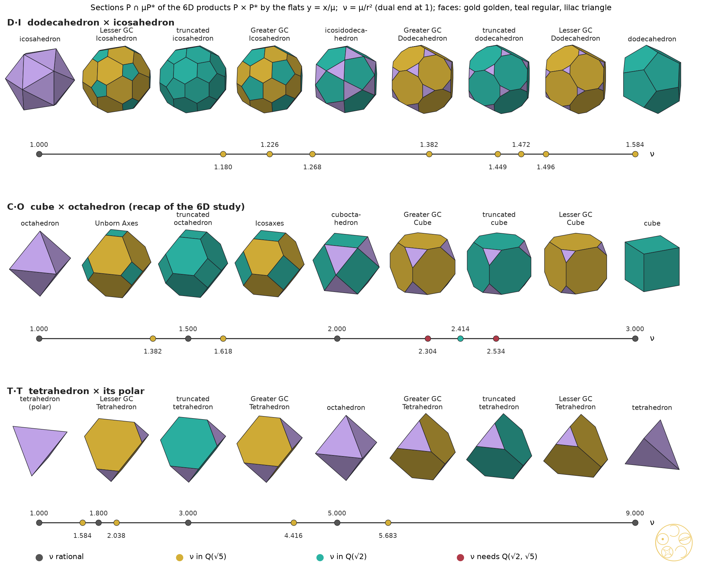
Figure 8.1. The three sweeps S(μ) = P ∩ μP*: dodecahedron × icosahedron, cube × octahedron and tetrahedron × its polar, from the dual end (left) to the solid (right). Exact sections drawn in floating point; faces gold golden, teal regular, lilac triangles. Below each strip, the stations on the ν-line (ν = μ/r², dual end at 1), coloured by the field of ν: grey rational, gold Q(√5), teal Q(√2), red Q(√2, √5).
Dodecahedron × icosahedron (D·I). Take D with corners (±1, ±1, ±1) and (0, ±1/φ, ±φ) cyclic, the cube's own frame, with R² = 3 for the cube, the dodecahedron and the tetrahedron alike. Here r² = 1 + 2/√5, ρ² = φ² and R² = 3. All nine stations were built exactly and matched corner to corner with the cut solids (s1, 20 checks).
station
μ (R² = 3)
ν = μ/r²
field norm of ν
icosahedron (dual end)
1 + 2/√5
1
1
Lesser Golden Cut Icosahedron
√5
5√5 − 10 = 5/φ³
−25
truncated icosahedron
(24 + 9√5)/19
(30 − 3√5)/19
45/19
Greater Golden Cut Icosahedron
(13 + 6√5)/11
(5 + 4√5)/11
−5/11
icosidodecahedron
φ²
3 − φ
5
Greater Golden Cut Dodecahedron
2 + √5/3
(20 − 7√5)/3
155/9
truncated dodecahedron
1 + 4/√5
2√5 − 3
−11
Lesser Golden Cut Dodecahedron
(20 + 5√5)/11
(50 − 15√5)/11
125/11
dodecahedron
3
15 − 6√5 = (R/r)²
45
Table 8.1. The D·I sweep (s1, exact).
Theorem 2 (the D·I sweep). All four golden cuts of the dodecahedron and icosahedron lie on the D·I sweep, and every μ and ν is in Q(√5): there is no √2 obstruction. Two values are natural in the cube's frame: the rectified stage at μ = φ² and the Lesser Golden Cut Icosahedron at μ = √5. No golden ν is a power of φ, since their field norms are not ±1. Across all three pairs, the only golden station whose ν is a power of φ is Icosaxes (ν = φ).
The values follow from Lemma 1 with R² = 3 and e = 2/φ (for example the Greater Golden Cut Dodecahedron, x = 1/3: μ = 3 − (1/3)(2/φ)²/2 = 2 + √5/3), and were checked exactly (s1). Two coincidences recur across pairs, exact but with no structural reason found: the D·I rectification ν = 3 − φ equals the μ of Unborn Axes, and the truncated dodecahedron's ν = 2√5 − 3 equals the μ of the Greater Golden Cut Tetrahedron.
Theorem 3 (no lattice for D·I). No lattice in R6 is invariant under the icosahedral group acting diagonally on D × D*, so the cut-equals-shadow test of #90 cannot be posed for this pair. In the icosahedral Z6 = V ⊕ V′ the only invariant 3-flats are V and V′, so there is no one-parameter family of symmetric flats.
Proof. An invariant lattice makes the representation rational. A five-fold rotation has trace 1 + 2 cos 72° = φ on V (checked on the exact matrix), hence 2φ on V ⊕ V, which is irrational. Any rational representation containing V also contains its Galois twin V′ (trace 1 − φ), and V and V′ are not isomorphic. □ What Z6 does pick out is exact: the central sections of the Voronoi cells of Z6, D6* and D6 are the dodecahedron, icosidodecahedron and rhombic triacontahedron; the shortest Z6 vectors cast an icosahedron, the D6 roots two icosidodecahedra with radii in ratio φ, and the vectors (±1/2)6 only dodecahedra and icosahedra (s2, 9 checks). These are the ends and the rectified stage only, with no golden cut among them (Al-Siyabi, Koca and Koca derived icosahedral polyhedra from D6 [11]).
Cube × octahedron (C·O). #90's sweep is reproduced exactly (s1, 22 checks): octahedron 1, Unborn Axes 3 − φ, truncated octahedron 3/2, Icosaxes φ, cuboctahedron 2, Greater Golden Cut Cube ≈ 2.304114, truncated cube 1 + √2, Lesser Golden Cut Cube ≈ 2.533609, cube 3. Here r² = 1, so ν = μ. Its polar side is #54's Theorem B [16]: for 1 ≤ μ ≤ 2 the hull H(μ) = conv(cube ∪ μ·octahedron) is the cube with a square pyramid of height μ − 1 (in half cube edges) on each face, so the polar of Icosaxes (μ = φ) has pyramids of height 1/φ and that of Unborn Axes (μ = 3 − φ) height 1/φ²; along #48's family [8] the heights x/(1 + x) and 1/(1 + x), at μ and 3 − μ, add up to 1, the rhombic dodecahedron H(2).
Tetrahedron × tetrahedron (T·T). With T inscribed in the cube [−1, 1]3, the polar is −T and r² = 1/3. The sweep runs −T (μ = 1/3), Lesser GCT 5 − 2√5, truncated tetrahedron 3/5, Greater GCT (3 + 2√5)/11, octahedron 1, Greater GCT 2√5 − 3, truncated tetrahedron 5/3, Lesser GCT 1 + 2/√5, and T at 3; the self-duality μ ↔ 1/μ is exact (s1, 20 checks).
Theorem 4 (the tesseract's slices are the T·T sweep). The section of [−1, 1]4 by x1 + x2 + x3 + x4 = 2h (0 < h < 1) is similar to T ∩ μ(−T) with μ = (2 + h)/(2 − h). The ratio of corner side to remaining side is (1 − h)/h, so the Greater and Lesser Golden Cut Tetrahedra fall at #89's heights h = 1/φ² (μ = 2√5 − 3) and h = 1/φ (μ = 1 + 2/√5), and the truncated tetrahedron at h = 1/2 (μ = 5/3).
Proof. In the hyperplane the constraints xi ≤ 1 and xi ≥ −1 bound two opposite regular tetrahedra, of sizes proportional to 2 − h and 2 + h, so the section is T ∩ μ(−T) with μ = (2 + h)/(2 − h). Checked exactly at the three heights in a rational orthonormal frame (s3). □ The lattice Z3 ⊕ Z3 carries Td, unlike D·I, but its test does not discriminate: the vectors (0, 1, 1 | 2, −1, −1) and (−2, 1, 1 | 0, −1, −1), of norm 8, cast the section's corners at every μ, and the shortest isolated selectors of the golden-cut tetrahedra have norm 34 (Lesser) and 46 (Greater), minima in the box {−6, …, 6}6 confirmed exactly, against norm 3 for μ = 2 and 11 for the Archimedean 5/3. No golden selection on this side.
5. OG and the Golden OGs in the polar Dharma cycle
DICTO proposed connecting OG with the interactions of the dodecahedron and icosahedron at interdimensional points. The D·I pair has two one-parameter families: the sections S(μ) (Archimedean side) and their polars, the hulls H(μ) = conv(D ∪ μD*) (Catalan side: pentakis dodecahedron at μTI, rhombic triacontahedron at φ², triakis icosahedron at μTD). Cutting a hull once more by icosahedron planes gives a two-parameter family Q(μ, λ) = H(μ) ∩ λD*.
Theorem 5 (OG in the sweep). The DICTO Ogdoecontahedron is exactly OG = Q(μTI, φ²) = H(μTI) ∩ φ²D*, with μTI = (24 + 9√5)/19: the pentakis dodecahedron (the polar of the truncated icosahedron) cut by the icosahedron planes at the rectification level, the same planes that cut D down to the icosidodecahedron. The stations of DICTO's polar Dharma cycle [5, 6] are exactly (3/φ³)D ⊂ S(φ²) ⊂ Q(μTI, φ²) ⊂ H(μTI) ⊂ H(3) = 3D* ⊂ (3/φ²)H(φ²) ⊂ 3D,
and the four middle stations are sections and hulls of the six-dimensional product themselves, unscaled, each touching the next (tight factor 1). At μ = √5 and μ = (13 + 6√5)/11, the levels of the Lesser and Greater Golden Cut Icosahedra, Q(μ, φ²) are DICTO's Lesser and Greater Golden OG, with the combinatorics of OG: 102 corners, 20 regular hexagons and 60 kites.
Proof (exact computation). H(μTI) has 32 corners and 60 triangles (the pentakis dodecahedron); Q(μTI, φ²) has 102 corners and 80 faces, 20 regular hexagons and 60 kites, and equals the polar-Dharma chain's OG corner for corner; each station of the chain equals the stated section or hull up to one common scale (s4, 21 checks); the Golden OGs were built the same way (s4c, 2 + 2 checks). □
The two end links are loose, with tight factors (−99 + 45√5)/2 and 5 − 2√5. The closure is φ³ as given, and 225/2 − 99√5/2 ≈ 1.814635 when every link is tightened, matching the polar-Dharma study's tight nest [6]. So the cycle is a path through the sweep at only two parameter values: the rectification level φ², a golden unit, and μTI, which is not golden (field norm 9/19). The closure φ³ comes from the two loose ends, not from the sweep.
Lifts. In the module M cast by Z6 (the integer span of (0, ±1, ±φ) cyclic), the smallest integer scale that lifts OG's corners into M is 228 in our frame and 342 = 2 × 171 in the chain frame, twice the bridge study's 171 [7], a factor that presumably comes from a different module convention (not re-derived). The prime 19 comes from μTI: the truncated icosahedron and the pentakis dodecahedron need 38, the dodecahedron and the Lesser Golden Cut Icosahedron 2, the Lesser Golden OG only 4, and the Greater Golden OG 220 (s4b, s4c). The sweep explains the 171 (it comes from the Archimedean depth, of field norm 9/19) without removing it; of the three, the Lesser Golden OG lifts most simply.
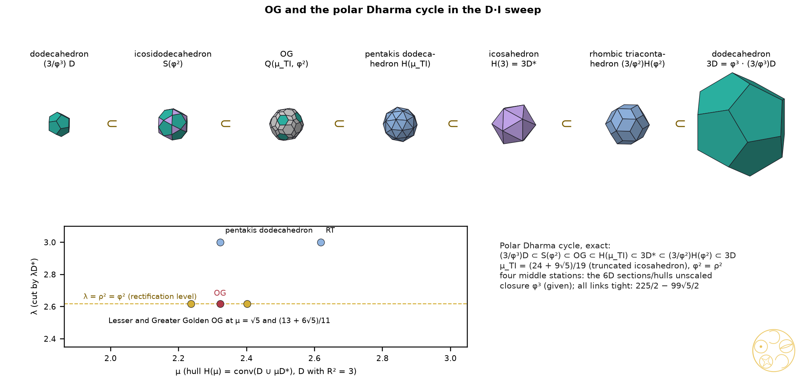
Figure 8.2. Above, the polar Dharma cycle as stations of the D·I families, drawn to scale: (3/φ³)D, the icosidodecahedron S(φ²), OG = Q(μTI, φ²), the pentakis dodecahedron H(μTI), the icosahedron H(3) = 3D*, the rhombic triacontahedron (3/φ²)H(φ²) and 3D = φ³·(3/φ³)D. Below, the (μ, λ) map: OG (red) and the Lesser and Greater Golden OG (gold, at μ = √5 and (13 + 6√5)/11) on the rectification level λ = φ², with the pentakis dodecahedron and the rhombic triacontahedron at λ = 3.
6. Four-dimensional duals in eight dimensions
For a regular four-dimensional solid P and its polar, the flats y = x/μ of P × P* ⊂ R8 give P ∩ μP* again. As μ grows the section passes through P*, truncated P*, rectified P*, the bitruncated stage, rectified P, truncated P and P; the stage changes at the squared distances of the centres of the k-faces.
Lemma 6 (cells; floating point beyond three exact checks). A cell of P ∩ μP* on a facet of P is that facet's own three-dimensional sweep, shifted linearly in μ (for the tesseract μ3 = μ − 1, Section 3); cells on the facets of μP* follow the same rule in 1/μ. For the tesseract and the 24-cell this was checked exactly (rational frames, corner matching). For the 600-cell × 120-cell family it was checked exactly at three stations and in floating point everywhere; it is not proved in general.
Table 8.2. Golden and notable stations of the three four-dimensional sweeps (s5, 17 checks). Values of μ exact; cell types and corner counts floating point except for the tesseract and 24-cell stations named in the text.
The three uniform values of the 600-cell × 120-cell family are the edge-equalising cuts of #76 (Proposition 1) [17], by Lemma 1 with R = 1 and the 600-cell's edge 1/φ (its dual side for the 120-cell): the truncated 600-cell, each edge cut 1/3 of the way from each end, at μ = 1 − (1/3)(1/φ²)/2 = (9 + √5)/12; the bitruncated stage, #76's midpoint, whose corners lie 3/5 of the way from the middle of each triangle's edge to its centre, at μ = (11 + 3√5)/20, the scalar product of such a corner with either end of that edge; and the truncated 120-cell, each edge cut (5 − √5)/10 of the way from each end, at μ = (15 + 8√5)/38 (exact, cross-links study). The DICTO All-Golden Polytopes of Proposition 7 lie in the bitruncated stage on either side of #76's midpoint, μ ≈ 0.8820 and 0.8892 against 0.8854.
Proposition 7 (DICTO All-Golden Polytopes in the 120-cell family; from Lemma 6). In the bitruncated stage of 600-cell × 120-cell, the Greater Golden Cut Icosahedron cells and the Lesser Golden Cut Tetrahedron cells occur at the same μ = 2 − √5/2, and the Lesser Golden Cut Icosahedron cells and the Greater Golden Cut Tetrahedron cells at the same μ = (19 + 9√5)/44 (R = 1); these two stages are DICTO All-Golden Polytopes. Both values are exact consequences of the linear cell rule; the rule itself is checked exactly at three points only.
The reason is the one of Section 3: in the bitruncated stage the shared hexagons are truncated triangles of both cells, so a ratio φ on one side is 1/φ on the other. The 24-cell pair selects the silver ratio at its self-dual point μ = √2, where the bitruncated 24-cell has 48 truncated cubes (exact); its Icosaxes and Unborn Axes cells sit at φ and (15 + √5)/10 beside cubes.
Figure 8.3. The three four-dimensional sweeps on their parameter lines, coloured by the field of μ as in Figure 8.1. Top: tesseract × 16-cell, μ from the 16-cell (1) to the tesseract (4), with the DICTO All-Golden Polytopes Unborn+G-GCT (2 + 1/φ²) and Icosaxes+L-GCT (φ²) either side of the bitruncated tesseract, and the Golden Cut Cubes (red) beside the truncated tesseract. Middle: 24-cell × 24-cell, μ from 1 to 2, the bitruncated 24-cell (teal) at the self-dual point √2. Bottom: 600-cell × 120-cell on ν = μ/r², the 120-cell end at 1, with the DICTO All-Golden Polytopes G-GCI+L-GCT and L-GCI+G-GCT at the bitruncated stage. G and L: Greater and Lesser; GCT, GCI, GCD, GCC: Golden Cut Tetrahedron, Icosahedron, Dodecahedron, Cube.
7. Cycles: nested chains closing on a scaled copy
A tight link A → B scales B down to the smallest copy that contains A, so that A touches B; the closure of a cycle is the product of its tight factors. Two-link rule: the cycle P ⊂ H(μ) ⊂ νP closes at ν, since P's corners are corners of H(μ) and the corners μn of μP* lie at ν on P's face normals; so every station's ν is a closure. A tight cycle that closes at a power of φ is one of the DICTO Golden Tight Cycles, DICTO's name for them.
pair
cycle (tight links)
closure
all
sweep cycle P* → L* → A* → G* → rectified → G → A → L → P → P*; each link but the last touches along P's faces
T → Lesser GCT (dual side) → Lesser GCT → truncated tetrahedron (dual side) → T
φ⁶ = 9 + 4√5
Dharma pattern
P → rectified → Q(A*, ρ²) → H(A*) → P* → H(ρ²) → P (OG's analogue on each pair)
D·I 225/2 − 99√5/2; C·O 9/2; T·T 27
120-cell (4D)
sweep cycle 600-cell* → … → 600-cell
1/r² = 28 − 12√5 (not golden)
Table 8.3. Tight cycles in D·I·C·T·O order of the pairs (s6, exact). L, A, G: Lesser golden, Archimedean, Greater golden stations; * the dual side.
The closure (R/r)² of the sweep cycle, 15 − 6√5, 3 and 9, is the containment constant of #43, attained by the Platonic solids (Theorem 1), and for the icosahedral pair valid for every solid with icosahedral symmetry and sharp (Theorem 2) [18], and the two-step gain of DICTO's growth rule for the Platonic solids in #80 (Corollary) [19]. The same number governs #81's core turn [20]: S(μ) has its faces at distance μ/R on the corner axes of P and r on its face axes, and by #81's Theorem (a) the core of a turn swaps the two distances, so it is similar to S(μ′) with ν′ = (R/r)²/ν, an involution of the open sweep. On C·O it is μ ↦ 3/μ, which pairs the truncated octahedron (3/2) with the cuboctahedron (2) and fixes μ = √3, where the two kinds of face are equally far from the centre; it differs from the space-filling partner μ ↦ 3 − μ of #90 (Proposition 6) [3], which pairs Icosaxes with Unborn Axes and fixes Kelvin's 3/2. On T·T it is the self-duality μ ↔ 1/μ of Section 4.
The search covered all tight cycles of at most five links from P back to P among each pair's 17 or 18 stations, in floating point with every quoted cycle re-checked exactly (s6). With φk as the target it found 119 DICTO Golden Tight Cycles for D·I, all closing at φ; 73 + 165 + 4 for C·O, closing at φ, φ² and φ³; and 255 for T·T, all at φ⁶. None for D·I closes at φ² or φ³. The criterion, every link tight, is that of #34 [21], where none of the 8,742 cycles through the Hecatodihedron, OG, the truncated icosahedron and the pentakis dodecahedron, with any of the icosahedron, icosidodecahedron, dodecahedron and rhombic triacontahedron, closes on a power of φ; the D·I cycles of Table 8.3, each through a golden-cut station, close at φ. The Dharma pattern closes golden on none of the three pairs, and replacing its OG station by the Lesser Golden OG leaves the closure unchanged.
Cycles with the rhombic dodecahedron and the truncated octahedron. The truncated octahedron (TO) is S(3/2) and the rhombic dodecahedron (RD) is H(2) = conv(cube ∪ 2·octahedron), the polar of the cuboctahedron (14 corners, 12 rhombi; checked). The cycle cube ⊂ RD ⊂ 2·TO ⊂ 2·cube has tight factors 1, 2, 1 and closure 2; cube → RD → triakis octahedron → TO → cube closes at 1 + √2, and cube → RD → TO → H(φ) → cube at φ² (s8, exact). Counting cycles of at most five links that contain the RD or the TO: 436 close at 2, 320 at 1 + √2, 109 at φ², 12 at (1 + √2)² and 2 at φ³ (floating-point search, examples exact). All 64 cycles from the cube through ordered subsets of the space-fillers {RD, TO, Icosaxes, Unborn Axes} are exact; their closures include 2, 3/φ (cube → Icosaxes → cube) and (15 + 3√5)/10, and none is a power of φ. As nestings the space-fillers give rational or non-golden closures only; the space-filling cycles that do exist are the honeycomb slices of Section 8, where every stage is a filling.
8. Cycles as slices through hyper-lattices
A family of parallel slices of a periodic honeycomb repeats with the honeycomb's period, so the honeycomb itself is the cycle (s7, 14 checks, exact).
C·O, cube side. The rectified tesseractic honeycomb, sliced at y1 = h, runs cube → Lesser GCC → truncated cube → Greater GCC → cuboctahedron and back, with period 2 (#89, reproduced) [2].
C·O, octahedron side. The 24-cell, |x|∞ ≤ 1 and |x|1 ≤ 2, is the Voronoi cell of 2Z4 ∪ (2Z4 + (1, 1, 1, 1)). Sliced cell-first at y1 = h its honeycomb gives the body-centred cubic pair C ∩ (2 − h)O at 2Z3 and C ∩ (1 + h)O at 2Z3 + (1, 1, 1): cuboctahedra and octahedra at h = 0, Icosaxes + Unborn Axes at h = 1/φ², two truncated octahedra (Kelvin's filling [34]) at h = 1/2, Unborn Axes + Icosaxes at h = 1/φ, and octahedra and cuboctahedra at h = 1; the volumes add to 8 per cell for every h, identically. This is #48's family of mixed truncated octahedra [8], now read as slices of one honeycomb. Sliced vertex-first (the D4 Voronoi cells [32] |xi| + |xj| ≤ 1 at x4 = h), the same honeycomb gives rhombic dodecahedra on the face-centred cubic lattice at h = 0, then RD ∩ (1 − h)·cube with small cubes on the other coset, then cubes at h = 1/2, the volumes adding to 2 per cell for every h.
Lemma 8 (slices of a Voronoi honeycomb; classical, Aurenhammer [22]). The slice x4 = h of the Voronoi honeycomb of a point set in R4 is the power diagram in R3 of the sites p = (p′, p4), projected to p′, with weights w = −(h − p4)².
Proof. For x = (x′, h), |x − p|² = |x′ − p′|² + (h − p4)² = |x′ − p′|² − w, and the power cell of p′ is the set where this is least. □ So both slices are lanes of the web of bonds of #52 and #53 [23, 24], with λ = wA − wB as in #53. Cell-first, for 0 ≤ h ≤ 1, only the sites at x4 = 0 (A, on 2Z3, weight −h²) and x4 = 1 (B, on 2Z3 + (1, 1, 1), weight −(1 − h)²) can have cells: the caesium chloride sites in #53's units (half cube edge 1), at λ = (1 − h)² − h² = 1 − 2h. As h runs from 0 to 1, λ runs over #53's gradual hand-over interval [−1, 1] from flip to flip, which is #48's golden loop, λ = (x − 1)/(x + 1); Icosaxes and Unborn Axes at h = 1/φ² are λ = √5 − 2, x = φ. Vertex-first, the D4 sites at x4 = 0 and 1 are the two face-centred cubic lattices of rock salt (Na–Cl distance 1), again with λ = 1 − 2h: the rhombic dodecahedra at h = 0 are the end λ = 1 of #53's rock-salt lane, the cubes at h = 1/2 its switch point λ = 0, and its stop λ = 4 − 2√3, where every edge has one length (cells with 6 squares and 12 hexagons, beside cubes), is the slice at h = √3 − 3/2 (Lemma 8 and the λ values checked in the cross-links study).
T·T. The tesseractic honeycomb sliced vertex-first has period 1; at s ≡ 1/φ² its tiles are the Lesser and the Greater Golden Cut Tetrahedra, with two small tetrahedra (exact).
D·I. There is no periodic version: by Theorem 3 every lattice with icosahedral symmetry has rank at least 6, and in Z6 the symmetric flats are fixed, so a moving slice breaks the symmetry. What replaces the honeycomb is the finite 600-cell × 120-cell family of Section 6, where the D·I and T·T sweeps appear as cells.
Golden-tilted slice (a coding only). If the slice is tilted so that successive tile rows advance by 1/φ of the period, the tile heights are {k/φ}. Coded below or above the Unborn Axes height 1/φ they form the Fibonacci word (exact integer test, 300 letters), which links this family to DICTO's Fibonacci stackings: it is the word of #69's substitution c → ch, h → c, with the heights above 1/φ as the h layers, of share 1/φ² [25]; #30 found the canonical Fibonacci chain along the spine of its five-fold chorus [26]. With four letters (p: cuboctahedron to Icosaxes, q: Icosaxes to Kelvin, r: Kelvin to Unborn Axes, s: Unborn Axes to octahedron) the word begins spsqpspsrpsqpsps. The tilted tiles are oblique sections, not the stations.
Figure 8.4. The 24-cell honeycomb sliced cell-first. Above, the two body-centred cubic tiles at h = 0, 1/φ², 1/2, 1/φ and 1: left the tile at 2Z³, C ∩ (2 − h)O; right the tile at 2Z³ + (1, 1, 1), C ∩ (1 + h)O; at 1/φ² they are Icosaxes and Unborn Axes, at 1/2 two truncated octahedra (Kelvin). Below, the first 40 letters of the four-letter word of a golden-tilted slice; p + q against r + s is the Fibonacci word.
Golden cut rhombic dodecahedra and triacontahedra as four-dimensional slices (floating point; negative within its scope). A slice with full Oh symmetry must be perpendicular to an axis whose stabiliser contains Oh: the coordinate axes for B4, the root directions for F4, and for Ih in H4 the 600-cell corner directions (by stabiliser orders). All 15 Wythoff polytopes [33] of each of B4, F4 and H4 were cut along these axes at 600 heights (H4: 150). The face signature of #89's golden cut rhombic dodecahedra (8 triangles, 6 squares, 12 octagons) occurs in 9 F4 stages and never in B4, but in none of them are the triangle and square sides equal where the octagon ratio could be φ: the only points with equal sides have ratio 0.2539. The signature of the golden cut rhombic triacontahedra (20 triangles, 12 pentagons, 30 octagons) occurs in 2 H4 stages, again never with equal corner sides (s9, s9b). Tiles of the uniform honeycombs are covered except sections of prism tiles away from their base. The trapezo-rhombic dodecahedron, the Voronoi cell of hexagonal close packing (DICTO's TRD node), has only D3h symmetry; it is not a station of the cubic sweeps and was not reached by these slices.
9. Synthesis: golden and silver
pair
dim.
field
selected ratio, and why
golden stations (exact)
pentagon (c5 = φ)
2
Q(√5)
φ native: the pentagon's diagonal
#88's rule: x = 1/3 and 1/(φ + 3)
square (c4 = √2)
2
Q(√2)
silver: the diagonal √2; golden needs Q(√2, √5)
xG(4), xL(4), of degree 4
D·I
3 → 6
Q(√5)
φ native in the solids, but no lattice (Theorem 3); natural values ρ² = φ², μ = √5
all four on the sweep; OG at (μTI, φ²); Lesser and Greater Golden OG at (√5, φ²) and ((13 + 6√5)/11, φ²)
C·O
3 → 6
Q(√2) and Q(√5)
octahedron side φ (Icosaxes, roots at μ = φ); cube side silver 1 + √2
Icosaxes φ, Unborn Axes 3 − φ; Golden Cut Cubes of degree 4
T·T
3 → 6
Q(√5)
golden in the tesseract's height (h = 1/φ², 1/φ); no lattice selection (norms 34, 46)
2√5 − 3, 1 + 2/√5 and their reciprocals
tesseract × 16-cell
4 → 8
Q, Q(√5), Q(√2, √5)
golden heights in the two lower unit layers; √2 in the top layer
Table 8.4. The pattern across dimensions. The pentagon's golden cuts follow from #88's cn rule.
In two to four dimensions the five-fold structures are native: the pentagon, the D·I pair and the 120-cell and 600-cell, all in Q(√5). Their golden stations are plentiful but are never picked out by a lattice, because no lattice carries their symmetry below dimension 6. In six and eight dimensions the golden ratio appears hidden in a cubic lattice: the Fibonacci slope of Z3 ⊕ Z3 selects Icosaxes [3], and the tesseract's and 24-cell's golden heights carry golden cells. The cube side is the exception throughout: there the square's √2 wins, giving the silver ratio 1 + √2 as the truncated cube's μ, the 24-cell's self-dual point and a silver two-link cycle.
10. Prior art and what is new
Archimedean solids as the common part of a Platonic solid and its dual go back to Kepler [27]; truncation at any depth, and Conway's ambo and truncation operations, are standard [28]; polarity and the common part P ∩ μP* are those of convex-polytope theory [29]. The bitruncated tesseract as the common part of the tesseract–16-cell compound and the 24-cell's bitruncation halfway to its dual are classical [30, 31], as are sections of the regular four-dimensional solids (Boole Stott [9]; Coxeter [10]) and the 24-cell honeycomb's slices, vertex-first (rhombic dodecahedral and cubic honeycombs) and cell-first (rectified and bitruncated cubic honeycombs). Zefiro studied truncations of cubic solids by the rhombic dodecahedron and the cube [12]. The icosahedral cut-and-project of Z6 is due to Kramer and Neri, Duneau and Katz, and Elser [13–15], and icosahedral polyhedra from D6 to Al-Siyabi, Koca and Koca [11]. #48 gave the mixed truncated octahedra [8]; #88, #89 and #90 precede this chapter [1–3]; the polar Dharma cycle is #32's [6]. The closure (R/r)² is #43's constant and #80's gain [18, 19], the core turn is #81's [20], the polar side of C·O is #54's Theorem B [16], the uniform four-dimensional stations are #76's [17], the honeycomb slices are lanes of #52 and #53 [23, 24], and the tight-cycle criterion is #34's [21]. The coding of irrational rotations by Sturmian and Fibonacci words is classical.
New within these checks. Lemma 1 as a statement about all corner cuts of a dual pair; the DICTO All-Golden Polytopes of the Main Theorem and Proposition 7; the golden stations of the D·I and T·T sweeps as sections of the six-dimensional products, with Theorems 2–4; OG as Q(μTI, φ²), the polar Dharma cycle as stations of the D·I families, and the Golden OGs; the DICTO Golden Tight Cycles; the 24-cell honeycomb slices as a cycle holding Icosaxes and Unborn Axes. Where an earlier source has one of these solids, it stays in DICTO's family, found independently, and the source is credited.
Sources checked (3 November 2026). Reference library on dicto-big-brother (kaleidohedra-references; reading list searched for truncation, Wythoff, Kelvin, bitruncated, Fibonacci) and a light web search (Archimedean solids as the intersection of a Platonic solid and its dual, e.g. G. W. Hart's pages; Wikipedia, “Truncated tesseract”, “Truncated 24-cells”, “24-cell honeycomb”). Not found: the golden stations of the D·I and T·T sweeps as sections of six-dimensional products, OG as Q(μTI, φ²), the DICTO All-Golden Polytopes, or the DICTO Golden Tight Cycles. Boole Stott and Coxeter are cited for their well-known contents and were not re-read for this chapter. The search is not exhaustive.
11. Conclusion
Every corner cut of a regular solid is a slice of the solid's product with its dual, so the golden cuts of #88 are stations of three sweeps. One dimension up the stations meet: in the tesseract trimmed by the 16-cell the golden heights of the cube cells and the tetrahedral cells coincide, and two four-dimensional solids, the DICTO All-Golden Polytopes of the tesseract, have nothing but golden cells, Icosaxes with the Lesser Golden Cut Tetrahedron and Unborn Axes with the Greater. The dodecahedron's pair lives wholly in Q(√5); it carries DICTO's OG, his Lesser and Greater Golden OG and the polar Dharma cycle as sections and hulls of one six-dimensional product, but no lattice carries its symmetry. DICTO Golden Tight Cycles close at φ, honeycomb slices give the golden space-filling pair of #48, and wherever the square enters, √2 turns golden into silver.
Data and code. studies/2026-11-03-dual-pairs-dimensions: dp_lib.py (on sixd_lib.py and cubes_lib.py of the #90 study, unchanged); s1_sweeps.py (Lemma 1, Theorem 2, Table 8.1; co/di/tt: 22, 20, 20 checks), s2_di_lattice.py (Theorem 3; 9), s3_tt.py (Theorem 4; 9), s4_og_dharma.py (Theorem 5; 21), s4b_og_lattice.py (lifts; 3), s4c_relatives.py (Golden OGs; 2 + 2), s5_fourd.py (Main Theorem (b), Lemma 6, Proposition 7, Table 8.2; 17), s6_cycles.py (Table 8.3 and the search; co/di/tt: 10, 12, 10), s7_hyper.py (Section 8; 14), s8_rd_to.py (RD and TO cycles; 4), s9_golden_rhombic.py and s9b_rhombic_ratios.py (B4, F4, H4 search, floating point), figs.py (figures). All checks pass; s5 asserts the corner set of the 16-cell section (signed permutations of (1, …, 1, t, 0, …)) and the exact derivation from the 24 inequalities was done in the referee check, while the floating-point section derives it. Run on dicto-big-brother with ~/geom/bin/python.
Open points. Lemma 6 is not proved in general (#76's exact constructions of the uniform stages could make it exact at its three stations); the four-dimensional search for golden cut rhombic solids leaves out sections of prism tiles away from their base; the golden-tilted slice of Section 8 is a coding of tile heights, not a list of exact stations; the trapezo-rhombic dodecahedron (hexagonal close packing) lies outside the cubic sweep; and the factor 2 between the OG lift scale 342 here and 171 in the bridge study has not been re-derived.
References
[1] DICTO, "Every Platonic Solid Has Exactly Two Golden Cuts: the DICTO-Kepler Golden Truncations and the DICTO-GTT-Solids", paper #88, DICTO DOI: 10.5281/zenodo.23896439 (2026).
[2] DICTO, "All Five Golden Pairs Are Slices of Four-Dimensional Solids", paper #89, DICTO DOI: 10.5281/zenodo.23917931 (2026).
[3] DICTO, "Golden on the Octahedron, Silver on the Cube: Six Dimensions and the Golden Cut Cubes", paper #90, DICTO DOI: 10.5281/zenodo.23931136 (2026).
[4] DICTO, "The DICTO Ogdoecontahedron", paper #31, DICTO DOI: 10.5281/zenodo.23404688 (2026).
[5] DICTO, "Spheres of Dharma", paper #23, DICTO DOI: 10.5281/zenodo.23310833 (2026).
[6] DICTO, "Inverted Shells: The Spheres of Dharma Turned Inside Out", paper #32, DICTO DOI: 10.5281/zenodo.23405029 (2026); polar-Dharma study, studies/2026-10-16-polar-dharma (research repository).
[7] DICTO, OG bridge study, studies/2026-10-16-ogdoecontahedron-bridge (research repository, 2026).
[8] DICTO, "The Golden Split: Icosahedra, Unborns and AXE Become Two Convex Space-Fillers", paper #48, DICTO DOI: 10.5281/zenodo.23596362 (2026).
[9] A. Boole Stott, "On certain series of sections of the regular four-dimensional hypersolids", Verhandelingen der Koninklijke Akademie van Wetenschappen te Amsterdam, Eerste Sectie, 7, no. 3 (1900).
[10] H. S. M. Coxeter, Regular Polytopes, 3rd ed., Dover, New York (1973).
[11] A. Al-Siyabi, N. O. Koca, M. Koca, "Icosahedral polyhedra from D6 lattice and Danzer's ABCK tiling", Symmetry 12 (2020) 1983, arXiv:2003.13449.
[12] L. Zefiro, "Regular-shaped faces in solids with cubic symmetry derived from truncation processes by rhomb-dodecahedron or cube", Visual Mathematics (2011), https://www.mi.sanu.ac.rs/vismath/zefirooct2011/.
[13] P. Kramer, R. Neri, "On periodic and non-periodic space fillings of Em obtained by projection", Acta Crystallographica A 40 (1984) 580–587.
[14] M. Duneau, A. Katz, "Quasiperiodic patterns", Physical Review Letters 54 (1985) 2688–2691.
[15] V. Elser, "Comment on 'Quasicrystals: a new class of ordered structures'", Physical Review Letters 54 (1985) 1730.
[16] DICTO, "One Turn Is a Gnomon: the Golden Cycle Step by Step, and the Polar of the Keyed Pair", paper #54, DICTO DOI: 10.5281/zenodo.23633365 (2026).
[17] DICTO, "Between the Queens", paper #76, DICTO DOI: 10.5281/zenodo.23780068 (2026).
[18] DICTO, "DICTO Kyushindo Cores", paper #43, DICTO DOI: 10.5281/zenodo.23532013 (2026).
[19] DICTO, "The Gains of DICTO's Growth Rule", paper #80, DICTO DOI: 10.5281/zenodo.23822907 (2026).
[20] DICTO, "Core Cycles: when the cores of DICTO's star chains alternate", paper #81, DICTO DOI: 10.5281/zenodo.23846772 (2026).
[21] DICTO, "Progenitors", paper #34, DICTO DOI: 10.5281/zenodo.23413184 (2026).
[22] F. Aurenhammer, "Power diagrams: properties, algorithms and applications", SIAM Journal on Computing 16 (1987) 78–96, doi:10.1137/0216006.
[23] DICTO, "The Web of Bonds: How the DICTONIC Bonds Hand Over", paper #52, DICTO DOI: 10.5281/zenodo.23629252 (2026).
[24] DICTO, "The Global Web of Bonds: How Bonds Hand Over Across Crystal Networks", paper #53, DICTO DOI: 10.5281/zenodo.23631140 (2026).
[25] DICTO, "The Hexagonality Law and the Fibonacci Stacking", paper #69, DICTO DOI: 10.5281/zenodo.23721038 (2026).
[26] DICTO, "A Fibonacci Spine in a Five-fold Chorus of Ogdoecontahedron Packings", paper #30, DICTO DOI: 10.5281/zenodo.23396361 (2026).
[27] J. Kepler, Harmonices Mundi, Linz (1619), Book II.
[28] J. H. Conway, H. Burgiel, C. Goodman-Strauss, The Symmetries of Things, A K Peters (2008).
[29] B. Grünbaum, Convex Polytopes, Wiley (1967); 2nd ed., Springer (2003).
[30] J. H. Conway, M. J. T. Guy, "Four-dimensional Archimedean polytopes", Proceedings of the Colloquium on Convexity, Copenhagen (1965).
[31] N. W. Johnson, Geometries and Transformations, Cambridge University Press (2018).
[32] J. H. Conway, N. J. A. Sloane, Sphere Packings, Lattices and Groups, 3rd ed., Springer (1999).
[33] W. A. Wythoff, "A relation between the polytopes of the C600-family", Proceedings of the Koninklijke Akademie van Wetenschappen te Amsterdam 20 (1918) 966–970.
[34] W. Thomson (Lord Kelvin), "On the division of space with minimum partitional area", Philosophical Magazine 24 (1887) 503–514.
Chapter 9 · The Top Rung: E8 and Its Golden Twist
In eight dimensions the 240 roots of E8 fold down into two 600-cells, one the golden ratio times the other; the twist that swaps them is the golden twist of the whole book, and the eight rings of the E8 picture stand in the ratios of the eight particle masses of E8
Climb the ladder of this book: a golden bond in the plane, two golden cuts on every Platonic solid, golden pairs as slices of four-dimensional solids. At the top, in eight dimensions, stands one of the most symmetric arrangements of points known, the 240 roots of E8. Fold it down to four dimensions and it splits cleanly into two 600-cells, one the golden ratio times the other. The ladder ends where it began: on one golden step.
1. Two 600-cells in one
The 600-cell is the four-dimensional solid of 120 corners that the Alicia chapters walk through as the White Queen (#63). Written as quaternions, its 120 corners are the unit icosians: eight of the form (±1, 0, 0, 0), sixteen of the form ½(±1, ±1, ±1, ±1), and ninety-six even permutations of ½(±φ, ±1, ±1/φ, 0). Sums and products of icosians stay among the numbers a + b√5 with rational a and b, and Conway and Sloane read the size N(q) = a + b√5 of an icosian simply as a + b. With that reading the icosians become the E8 lattice.
Theorem (classical). The 240 shortest vectors of E8, its roots, are the 120 unit icosians and the 120 unit icosians divided by φ. In four dimensions they are two concentric 600-cells, of radius 1 and of radius 1/φ.
Check. A unit icosian has N = 1, read as 1. One divided by φ has N = 1/φ² = (3 − √5)/2, read as 3/2 − 1/2 = 1: the same length. Multiplied by φ instead, N = φ² is read as 2, longer, so these are not roots. We built the 240 vectors in eight dimensions (the icosian and its golden conjugate side by side, weighted so that the reading a + b becomes ordinary length) and checked: all 240 have the same length; any two meet at 0°, 60°, 90°, 120° or 180°; each has exactly 56 neighbours at 60°; together they span all eight dimensions. These are the properties that single out the root system of E8. In four dimensions the two groups of 120 lie on spheres of radius 1 and 1/φ = 0.618034; in each, every point has 12 nearest neighbours at distance radius/φ, 720 edges in all: two 600-cells, in golden ratio.
2. The golden twist
Every number of this book has a golden twin: replace √5 by −√5, and φ = 1.618… becomes −1/φ = −0.618…. Applied to the icosians, the twist keeps the unit icosians on a sphere of radius 1 but turns the small 600-cell, of radius 1/φ, into a large one, of radius φ. The eight-dimensional root is the icosian and its twin side by side; looked at from the twin's side, the small 600-cell is the large one. This is the same golden twist that DICTO's Double Vision shows for his golden cycles (#33): two exact settings of one structure, swapped by φ ↔ −1/φ.
3. Thirty, and the eight masses
The best-known picture of E8 looks straight down its Coxeter plane, the plane in which its fundamental symmetry of order 30 is a rotation. The 240 roots fall on eight rings of 30 (Figure 9.1). Measured in this picture the ring radii stand in the ratios
which are, to five decimals, the eight particle masses that Zamolodchikov (1989) found for a chain of magnetic spins at its critical point, a theory with E8 symmetry; Koca and Koca (2012) note the equality of these masses with the ring radii. The second mass is φ times the first, and the ratio close to 1.6 was measured in the magnet cobalt niobate by Coldea and colleagues (2010). Four of the eight are golden pairs: m₂ = φ·m₁, m₆ = φ·m₃, m₇ = φ·m₄ and m₈ = φ·m₅. In each ring the roots of both 600-cells mix; the golden step lives in the radii.
Figure 9.1. The 240 roots of E8 on its Coxeter plane: eight rings of 30. Gold: the 600-cell of radius 1 (the unit icosians); violet: the 600-cell of radius 1/φ. Grey lines join roots at 60°. The ring radii are in the ratios of the eight E8 masses.
4. Looking down the ladder
rung
what is golden
chapter
2D
the truncated triangle and the golden bond
#20, #48
3D
every Platonic solid has exactly two golden cuts
#88
4D
the 120-cell and its polar, the 600-cell
#65
4D
all five golden pairs are slices of four-dimensional solids
#89
6D
golden on the octahedron, silver on the cube
#90
4D
solids whose every cell is a golden cut
#91
4D
the golden stations of the sweeps as limits of multiplets
Silence Is Golden
8D
E8: two 600-cells in golden ratio, swapped by the golden twist
this chapter
Chapter 1 began with one triangle of mirrors carrying one number, 1, √2 or φ. The φ triangle builds the icosahedron and dodecahedron; its four-dimensional cousin builds the 600-cell and 120-cell; and E8, the largest of the exceptional symmetries, holds two 600-cells in golden ratio. Read from the top, the whole ladder is the φ triangle climbing.
5. Known and new
Known: the icosians and their reading as E8 (Conway and Sloane, ch. 8); the four-dimensional quasicrystal from E8 (Elser and Sloane 1987; Moody and Patera 1993); E8 grown from the icosahedron (Dechant 2016; Baez 2018); the E8 masses (Zamolodchikov 1989), their measurement (Coldea et al. 2010) and their equality with the ring radii (Koca and Koca 2012). This chapter: the reading of these as the top rung of the book's ladder and as its golden twist; every number above recomputed (study 2026-11-05-golden-ladder-e8).
Sources checked: the reference library (search “E8 icosians 600-cell golden ratio Elser Sloane Moody Patera Dechant”, 5 Nov 2026; the E8 works were then added to it); arXiv records of Dechant 2016, Baez 2018 and Koca–Koca 2012, read.
Sources
J. H. Conway, N. J. A. Sloane, Sphere Packings, Lattices and Groups, 3rd ed., Springer (1999), ch. 8 §2. V. Elser, N. J. A. Sloane, A highly symmetric four-dimensional quasicrystal, J. Phys. A 20 (1987) 6161–6168. R. V. Moody, J. Patera, Quasicrystals and icosians, J. Phys. A 26 (1993) 2829–2853. P.-P. Dechant, The birth of E8 out of the spinors of the icosahedron, Proc. R. Soc. A 472 (2016) 20150504, arXiv:1602.05985. J. C. Baez, From the icosahedron to E8, London Math. Soc. Newsletter 476 (2018), arXiv:1712.06436. A. B. Zamolodchikov, Integrals of motion and S-matrix of the (scaled) T = Tc Ising model with magnetic field, Int. J. Mod. Phys. A 4 (1989) 4235–4248. R. Coldea et al., Quantum criticality in an Ising chain: experimental evidence for emergent E8 symmetry, Science 327 (2010) 177–180. M. Koca, N. O. Koca, Radii of the E8 Gosset circles as the mass excitations in the Ising model, arXiv:1204.4567 (2012). DICTO, Double Vision, #33, DICTO DOI: 10.5281/zenodo.23407107. DICTO, The White Queen 600-cell, #63, DICTO DOI: 10.5281/zenodo.23690856. DICTO, The Red Queen 120-cell, #65, DICTO DOI: 10.5281/zenodo.23716140.